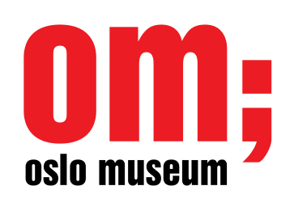

This overview is based on this XML output of the GLAMorous tool d.d. 26-01-2024.
It was generated using the GLAMorousToHTML Python script.
Also see the documentation of this tool.
Available languages
Nynorsk (2,965)
English (1,289)
Nynorsk (647)
Swedish (612)
Egyptian Arabic (562)
German (360)
Finnish (244)
Danish (232)
French (209)
Russian (207)
Arabic (194)
Spanish (149)
Dutch (142)
Italian (127)
Polish (100)
Persian (96)
Czech (76)
Portuguese (70)
Catalan (58)
Ukrainian (57)
Welsh (55)
Eastern Armenian (48)
South Azerbaijani (42)
Japanese (38)
Korean (32)
Afrikaans (32)
Indonesian (24)
Turkish (23)
Hebrew (23)
Hungarian (22)
Esperanto (19)
Slovene (18)
Serbian (17)
Standard Estonian (17)
Basque (16)
Greek (14)
Chinese (14)
Malagasy (14)
Vietnamese (12)
Ido (10)
Bulgarian (10)
Belarusian (10)
Romanian (9)
West Frisian (9)
Latvian (7)
Asturian (6)
Georgian (6)
Galician (6)
Malayalam (5)
Latin (5)
Aragonese (5)
Lithuanian (5)
Icelandic (5)
Uzbek (4)
Bangla (4)
Piedmontese (4)
Volapük (4)
Bosnian (4)
Kotava (3)
Inari Sami (3)
Slovak (3)
Albanian (3)
Thai (3)
Northern Sami (3)
Irish (3)
Azerbaijani (3)
Luxembourgish (3)
Faroese (3)
Macedonian (3)
Igbo (2)
Occitan (2)
Hindi (2)
Kazakh (2)
Sorani (2)
Low Eastern Saxon (2)
Breton (2)
Serbo-Croatian (2)
Marathi (2)
Tamil (2)
Telugu (2)
Cantonese (2)
Cornish (1)
Bavarian (1)
Võro (1)
Malay (1)
Swahili (1)
Kurmanji (1)
Kashubian (1)
Venda (1)
Zulu (1)
Western Armenian (1)
Cebuano (1)
Interlingue (1)
Khmer (1)
Interlingua (1)
Papiamento (1)
Walloon (1)
Sindhi (1)
Minnan (1)
Tajik (1)
Punjabi (1)
Nepali (1)
Burmese (1)
Maithili (1)
Kinyarwanda (1)
Nynorsk (2,965)
17. mai (grunnlovsdag) |
1704 i Norge |
A.H. Winsnes |
A. C. Bonnevie |
A. Stokstad & Co |
Aagot Børseth |
Aagot Didriksen |
Aagot Nissen |
Aars og Voss’ skole |
Aase Bjerkholt |
Aase Bye |
Aase Foss Abrahamsen |
Aase Lionæs |
Aase Nordmo Løvberg |
Aaslaug Aasland |
Aasta Hansteen |
Abel Seyler |
Abelhaugen |
Abildgaards gate (Oslo) |
Abraham Berge |
Abraham Berges regjering |
Ada Haug |
Ada Kramm |
Ada Madssen |
Ada Werring |
Adam Christopher Løvenskiold |
Adam Hiorth (forfatter) |
Adam Hiorth (forretningsmann) |
Adelsten |
Adjutant |
Adolf Bredo Stabell |
Adolf Hoel |
Adolf Indrebø |
Afrika (TV-film) |
Aftenpostens gullmedalje |
Agathe Backer Grøndahl |
Agdenes kirke |
Agnete (skuespill) |
Agnethe Schibsted-Hansson |
Aiguillette |
Akerselva |
Akersgata (Oslo) |
Akershusstranda (gate) |
Aksel Gresvig |
Aksel Zachariassen |
Albert Balchen |
Albert Cammermeyer |
Albert Lutuli |
Albert von Hanno |
Albin Upp |
Aleksandra Kollontaj |
Alette Engelhart |
Alex Brinchmann |
Alexander Moissi |
Alexander Schultz |
Alexander den store (film) |
Alexandra von Munthe af Morgenstierne |
Alf Andersen (1928–1962) |
Alf Blütecher |
Alf Brodal |
Alf Collett |
Alf Cranner |
Alf Harbitz |
Alf Hartmann |
Alf Hurum |
Alf Larsen Whist |
Alf Prøysen |
Alfhild Stormoen |
Alfred Andersen-Wingar |
Alfred Maurstad |
Alfred Sinding-Larsen |
Alfred Skar |
Alice Mürer Siem |
Allongeparykk |
Allround-NM på skøyter 1950 for herrer |
Allround-NM på skøyter 1951 for herrer |
Allround-NM på skøyter 1952 for herrer |
Allround-NM på skøyter 1954 for herrer |
Allround-NM på skøyter 1956 for herrer |
Allround-NM på skøyter junior |
Alma Fahlstrøm |
Alna teglverk |
Alpint under Vinter-OL 1952 |
Alv Storheid Langeland |
Alvdal kirke |
Amalie Døvle |
Amandaprisen |
Amandaprisen 1986 |
Amandaprisen 1987 |
Amandaprisen 1989 |
Amandaprisen 1990 |
Amandaprisen 1991 |
Amandaprisen 1995 |
Amandaprisen 1996 |
Amandaprisen 2001 |
Ambortius Lindvig |
Amund Raknerud |
Anatomisk institutt (UiO) |
Anders Beer Wilse |
Anders Buraas |
Anders Jahres medisinske pris |
Anders Platou Wyller |
Anders Sandøe Ørsted Bull |
Anders Svarstad |
Anders Svor |
Andrea Gram |
Andrea Kristine Ingeborg Caspara Møller |
Andreas Aagaard Kiønig |
Andreas Aubert |
Andreas Bjercke |
Andreas Christian Conradi |
Andreas Haarklou |
Andreas Isachsen |
Andreas Jynge |
Andreas Lauritz Thune |
Andreas Norland |
Andreas Olai Schei |
Andreas Samuel Krebs |
Andreas Skartveit |
Andresen (slekt fra Schleswig-Holstein) |
André Engh |
Anita Thallaug |
Anker (slekt) |
Ankertorget |
Anna Elisabeth Westerlund |
Anna Løchen |
Anna Munch |
Anna Rogstad |
Anne-Cath. Vestly |
Anne-Lise Tangstad |
Anne-Lise Wang |
Anne Borg |
Anne Grimdalen |
Anne Karin Elstad |
Anne Maries vei (Oslo) |
Anselm Liljeström |
Anton Blumenthal Petersen |
Anton Fredrik Klaveness (1903–1981) |
Anton Heiberg |
Anton Julius Sand |
Anton Lædel |
Anton Rosing |
Anton Rønneberg |
Apoteket Hjorten i Oslo |
Aprilsnarr |
Arbeidernes Idrettsforbund |
Arbeidernes Opplysningsforbund |
Arbeidernes ungdomsfylking |
Arbeiderpartiet |
Arild Brinchmann |
Arild Widerøe |
Arild Wikstrøm |
Arkeologiåret 1817 |
Arkeologiåret 1872 |
Arkeologiåret 1877 |
Arkeologiåret 1894 |
Arkeologiåret 1931 |
Arkeologiåret 1955 |
Arkeologiåret 1966 |
Arkeologiåret 1973 |
Arkeologiåret 2011 |
Arkitekturåret 1833 |
Arkitekturåret 1847 |
Arkitekturåret 1856 |
Arkitekturåret 1864 |
Arkitekturåret 1876 |
Arkitekturåret 1878 |
Arkitekturåret 1893 |
Arkitekturåret 1910 |
Arkitekturåret 1921 |
Arkitekturåret 1932 |
Arkitekturåret 1940 |
Arkitekturåret 1977 |
Arnardo |
Arne Bang-Hansen |
Arne Bjørndal |
Arne Christensen |
Arne Durban |
Arne Kavli |
Arne Meidell |
Arne Nygård-Nilssen |
Arne Pausett |
Arne Remlov |
Arne Rockseth |
Arne Skouen |
Arne Sunde |
Arne Svendsen |
Arnfinn Vik |
Arno Berg |
Arnold Holmboe |
Arnoldus Hille |
Arthur David-Andersen |
Arthur Olsen |
Arthur Omre |
Arups gate (Oslo) |
Arve Opsahl |
Arvid Nilssen |
Asbjørn Aamodt |
Asbjørn Bryhn |
Asbjørn Ruud |
Asbjørn Toms |
Asbjørn Wang |
Aschehoug |
Aschehoug (slekt) |
Asgaut Steinnes |
Asta Nørregaard |
Astrid Folstad |
Astrid Herseth |
Astrid Lous |
Astrid Sandvik |
Astrup |
Aubert |
Aud Richter |
Aud Schønemann |
August Christian Mohr (1847-1918) |
August Eiebakke |
August Lange |
August Nielsen (arkitekt) |
August Oddvar |
August Schønemann |
August Wilhelm Boesen |
Aukrust-modellen |
Aurora i blokk Z |
Ave Maria (Valen) |
Avfall |
Avisbud |
Avisåret 1897 |
Avisåret 1899 |
Avisåret 1900 |
Avisåret 1913 |
Avisåret 1931 |
Avisåret 1938 |
Avisåret 1958 |
Avisåret 1982 |
Avisåret 1994 |
Axel Heiberg |
Axel Holst |
Axel Kielland |
Axel Krefting |
Axel Krogh |
Axel Otto Normann |
Axel Revold |
Axel Seeberg |
Axel Weebe |
Axel Winge |
Babbis Friis-Baastad |
Babill Stray-Pedersen |
Backer |
Bagasje |
Bakka kirke |
Bakkegata (Oslo) |
Bakkehaugen gård |
Balders gate (Oslo) |
Balkeby |
Balsfjord kirke |
Baltazar Sechmann Fleischer |
Balthazar Nicolai Garben |
Barbara Larssen |
Barbra Ring |
Barne-TV (NRK) |
Basarene |
Bautasteinen på Spinneren |
Beatmusikk |
Beauty and the Beast (sang) |
Bekkelaget stasjon |
Bekkelagshøgda |
Bekker i Oslo |
Bekkestua |
Benedicte Scheel |
Benjamin Vogt |
Benjamin Wegner |
Bennett Reisebureau |
Bent Røiseland |
Bente Børsum |
Bentse Brug |
Bentse Teglverk |
Bentsebrua |
Bentsebrugata (Oslo) |
Bentsegata (Oslo) |
Beredent artilleri |
Berent Schanche |
Bergen katedralskole |
Bergljot Larsson |
Berit Brænne |
Bernhard Brænne |
Bernhard Cathrinus Pauss |
Bernhard Getz |
Bernhof Ribsskog |
Bernt A. Nissen |
Bernt Anker |
Bernt Anker Sverdrup |
Bernt Arne Lynge |
Bernt Evensen |
Bernt Johannessen |
Bernt Lund |
Bernt Oluf Karlgård |
Bernt Sverdrup Maschmann |
Bertel O. Steen |
Bertha Ræstad |
Berthold Grünfeld |
Betzy Kjelsberg |
Big Chief Jazzband |
Birger Anneus Hall |
Birger Bergersen |
Birger Fjeld Halvorsen |
Birger Hønningstad |
Birger Kildal |
Birger Kildal (redaktør) |
Birger Knudsen |
Birger Moss-Johnsen |
Birger Nygaard-Østby |
Birger Ruud |
Birigata (Oslo) |
Birkenes kirke |
Bislet Teglverk |
Bislett stadion |
Bispebrua |
Bjarne Amdahl |
Bjarne Buntz |
Bjarne Engebret |
Bjarne Jullum |
Bjarne Nerem |
Bjartmar Gjerde |
Bjerggaden (Oslo) |
Bjølsen |
Bjølsen Valsemølle |
Bjølsenfossen |
Bjørn Bjørnson |
Bjørn Gunnar Braathen |
Bjørn Hougen |
Bjørndaltrilogien |
Bjørneboe |
Bjørnepatruljen |
Bjørnstjerne Bjørnson |
Blindern |
Blindern Studenterhjem |
Blystadboligen |
Bodøsaken |
Bogstad gård |
Bogstadveien (Oslo) |
Bokken Lasson |
Bokklubbens levende klassikere |
Bolette Gjør |
Bonnevie (slekt) |
Bonnevieprisen |
Borgen (Oslo) |
Borghild Langaard |
Borghild Niskin |
Borgny |
Botsfengselet |
Botsfengselets kirke |
Botten Soot |
Brannen i Grue kirke |
Brannvakten |
Brekke kirke |
Briller |
Briskebyveien (Oslo) |
Brita Bigum |
British American Tobacco Norway |
Britta Lech-Hanssen |
Broch (slekt) |
Broderkretsen på Havet |
Brudekjolen (1914) |
Brugata (Oslo) |
Brukskunst |
Bryllup |
Bryllupet mellom kronprins Olav og prinsesse Märtha |
Bryn stasjon |
Brynjulf Bergslien |
Brynjulf Bull |
Brødrene Hals |
Bukh |
Bull |
Bydel Østensjø |
Bygdøy kongsgård |
Bygdøy sjøbad |
Bygdøynesveien (Oslo) |
Bygningene i friluftsmuseet på Norsk Folkemuseum |
Byløkke |
Bymarken |
Byutvidelser i Oslos historie |
Bærums Verk hovedgård |
Bødtker |
Bøgh |
Børsa kirke |
C.F.B. Schøyen |
C.J. Hambro |
C.N.R. Aamundsen |
Cally Monrad |
Calmeyergatens Misjonshus |
Caltex |
Camilla Wicks |
Carl A. Høyers Stomatolfabrikk |
Carl Abraham Pihl |
Carl Andreas Fougstad |
Carl Bernhard Rosenberg |
Carl Caspar Riiber |
Carl Christian Wischmann |
Carl Dørnberger |
Carl E. Paulsen |
Carl Ferdinand Linthoe |
Carl Frederik Fearnley |
Carl Frederik Ferdinand Stanley |
Carl Frederik Vogt |
Carl Fredric von Breda |
Carl Fredrik Engelstad |
Carl Fredrik Holmboe |
Carl Fredrik Johannes Bødtker |
Carl Fredrik Petlund |
Carl Frithjof Smith |
Carl Hagman |
Carl Johan Anker |
Carl Johan Erichsen |
Carl Julius Lorch |
Carl Ludvig Jacobsen |
Carl Marstrander |
Carl Michalsen |
Carl Paaske |
Carl Peter Lehmann |
Carl Peter Parelius Essendrop |
Carl Platou (1885–1956) |
Carl Schøyen |
Carl Semb |
Carl Struve |
Carl Størmer |
Carl Unger (advokat) |
Carl Wilhelm Rubenson |
Carl With |
Caroline Colditz |
Carsten Bruun |
Carsten Byhring |
Carsten Hopstock |
Carsten Lütken |
Carsten Tank Nielsen (1818–1892) |
Caspar von Cappelen |
Catharinus Elling |
Cathinka Guldberg |
Cecilie Dahl (maler) |
Central Jamaat-e Ahl-e Sunnat |
Centrum |
Charles Braude |
Charles W. Strøm |
Cheval |
Christen Eschildsen Griis |
Christen Finbak |
Christen Magelssen |
Christensen (slekt fra Gjerpen) |
Christian August Egeberg |
Christian August Lorentzen |
Christian Cappelen |
Christian Fredrik Jacob von Munthe af Morgenstierne |
Christian Gihbsson |
Christian H. Grosch |
Christian Hall |
Christian IVs sal |
Christian Jensen (båtbygger) |
Christian Julius Schou |
Christian Krohg (politiker) |
Christian Krohgs gate (Oslo) |
Christian L. Jensen |
Christian Langaard |
Christian Lasson |
Christian Linthoe |
Christian Meyer Ross |
Christian Michelsen |
Christian Olsen |
Christian Prahl Reusch |
Christian Reuter |
Christian Sandal |
Christian Schweigaard |
Christian Selmer |
Christian Sinding |
Christian Skredsvig |
Christian Stockfleth |
Christian Sørenssen |
Christian Tønsberg |
Christian Vilhelm Bergh |
Christian Wisbech (1869–1922) |
Christian Zetlitz Bretteville |
Christiania Bank og Kreditkasse |
Christiania Borgerskole |
Christiania Folketheater |
Christiania Glasmagasin |
Christiania Seildugsfabrik |
Christiania Spigerverk |
Christiania Theater |
Christiania Tivoli |
Christie |
Christinedal - Harry Fetts vei 10 |
Christopher Borch |
Christopher Hornsrud |
Christopher Kahrs Kielland |
Christopher Knudsen |
Christopher Tostrup |
Chrix Dahl |
Cimitero acattolico di Roma |
Cirkus Verdensteater |
Clara Mørch |
Clara Ursin |
Clarion Collection Hotel Gabelshus |
Claus Berg |
Claus Pavels |
Claus Peter Knudsen |
Club 7 |
Colbjørnsens gate (Oslo) |
Collett |
Collettgården |
Colletts gate (Oslo) |
Conrad Arnesen |
Conrad Langaard |
Conrad Svendsen |
Constance Bruun |
Constance Wiel Schram |
Coop Norge |
Cuba-saken |
Cæciliaforeningen |
DS «Bergensfjord» (1913) |
DS «Constitutionen» |
DS «Framnæs 4» |
DS «Kristianiafjord» |
Dagfin Werenskiold |
Dagfinn Hauge |
Dagfinn Tveito |
Dagmar Myhrvold |
Dagny Bang |
Dagny Haraldsen |
Dagny Tande Lid |
Dan Fosse |
Dankert Freilem |
Danmark (øy) |
De VI olympiske vinterleker Oslo 1952 |
De gamle visene – bind 1-5 |
De spurte ikke meg |
Dedichen |
Degernes kirke |
Demarkasjonslinjen i 1940 |
Den Norske Frimurerorden |
Den Norske Hesteskosømfabrik |
Den Norske Kunst og Industriutstilling 1883 |
Den Norske Store Landsloge |
Den glade enke |
Den norske Nordhavsekspedisjon 1876–78 |
Den norske Strykekvartett |
Den nye verdenskeiser |
Den tekniske Forening |
Det Ankerske Waisenhus |
Det Hvite Bånd |
Det Norske Akademi for Språk og Litteratur |
Det engelske kvarter |
Det første Wedel-ministeriet |
Det gule chor |
Det kongelige hoff |
Det kongelige slott |
Det norske Theater |
Det norske institutt i Roma |
Det rare |
Didi Heiberg |
Didrik Arup Seip |
Diesen |
Dietrichson (slekt) |
DigitaltMuseum |
Dikke Eger |
Dokkveien (Oslo) |
Domus Juridica |
Donato Brambani |
Doris Johannessen |
Dovrehallen |
Down Town Key Club |
Drammensveien (Oslo) |
Drengstu’viser |
Dronninghavn |
Dukkemann |
Dverberg kirke |
Dypfryser |
Dyre Vaa |
Dødsfall i 2001 |
Dødsfall i 2002 |
Dødsfall i 2003 |
Dødsfall i 2004 |
Dødsfall i 2005 |
Dødsfall i 2006 |
Dødsfall i 2007 |
Dødsfall i 2008 |
Dødsfall i 2009 |
Dødsfall i 2011 |
Dødsfall i 2012 |
Dødsfall i 2013 |
Dødsfall i 2019 |
Dødsfall i 2021 |
Dødsfall i 2023 |
EM i friidrett 1946 – 100 meter kvinner |
EM i friidrett 1946 – 100 meter menn |
EM i friidrett 1946 – 200 meter kvinner |
EM i friidrett 1946 – 200 meter menn |
EM i friidrett 1946 – 3000 meter hinder menn |
EM i friidrett 1946 – 400 meter hekk menn |
EM i friidrett 1946 – 400 meter menn |
EM i friidrett 1946 – 800 meter menn |
EM i friidrett 1946 – Spydkast kvinner |
EM på skøyter 1962, menn |
EM på skøyter 1964, menn |
EM på skøyter 1968, menn |
Ebba Isene |
Eckhoff |
Edderkoppen (TV-episode) |
Edel Eckblad |
Edel Stenberg |
Edgar B. Schieldrop |
Edith Roger |
Edmund Neupert |
Edvard Befring |
Edvard Beyer |
Edvard Drabløs |
Edvard Grieg |
Edvard Myhre Munch |
Edvarda Lie |
Egeberg (slekt fra Sjælland) |
Egebergs Ærespris |
Egede-Nissen |
Egertorget (Oslo) |
Eggert Munch |
Egil Hagen (1912–2004) |
Egil Johansen (1934–1998) |
Egil Kaare Sundt |
Egil Åsman |
Eidsvollsbygningen |
Eigil Beck |
Eigil Nansen |
Eilert |
Eilert Sundt |
Eilert Sundts gate (Oslo) |
Einar Bergsland |
Einar Diesen |
Einar Engelstad (arkitekt) |
Einar Frogner |
Einar Gerhardsen |
Einar Gerhardsens andre regjering |
Einar Gerhardsens første regjering |
Einar Gerhardsens tredje regjering |
Einar Lexow |
Einar Li |
Einar Rose |
Einar Sigurd Ween |
Einar Sissener |
Einar Skavlan |
Einar Skjæraasen |
Einar Smith |
Eindride Slaatto |
Eivind Berggrav |
Eivind Engelstad |
Eivind Nielsen |
Ejlert Bjerke |
Ekeberg gård (Oslo) |
Ekeberg krigskirkegård |
Ekebergkolonien |
Ekebergrestauranten |
Ekebergskrenten |
Ekely |
Ekman, Smith & Michalsen |
Ekman & Smith |
Eksplosjonen på Grønlikaia |
Elgsletta aktivitetspark |
Elias Blix |
Elias Nicolai Reksten |
Elin Prøysen |
Elisabeth Granneman |
Elisabeth Reiss |
Elisabeth Scheel |
Elisabeth Schweigaard Selmer |
Elise Sem |
Ella Anker |
Ellef Ringnes |
Ellen Andrea |
Ellen Brochmann |
Ellen Gulbranson |
Ellen Schytte-Jacobsen |
Ellendalens Spinderi |
Elsa Skjerven |
Else Breen |
Else Christie Kielland |
Else Heiberg |
Emanuel Minos |
Emanuel Winge |
Embetsmannsstaten |
Emil Aubert |
Emil Lie |
Emil Torkildsen |
Emma Matthiasen |
Emo (selskap) |
Empirekvartalet |
Energi i Norge |
Enerhaugen |
Enige og tro inntil Dovre faller |
Epålett |
Er vi her ennå? |
Eric Gustav Tunmarck |
Erica Darbow |
Erik Andreas Colban |
Erik Bodom |
Erik Brofoss |
Erik Diesen |
Erik Grønseth |
Erik Herseth |
Erik Krag |
Erik Kristen-Johanssen |
Erik Pløen |
Erik Sture Larre |
Erling Drangsholt |
Erling Krogh |
Erling Merton |
Erling Schiøtz |
Erling Wikborg |
Ernest Marini |
Ernest Rude |
Ernst Bjerknes |
Ernst Glaser |
Ernst Motzfeldt |
Ernst Sars |
Esviken |
Et døgn uten løgn |
Eugen Skjønberg |
Eugenia Kielland |
Eurovision Song Contest 1969 |
Eva Lunde |
Eva Scheer |
Eva Seeberg |
Eva Sletto |
Evald Rygh |
Eventyrgården |
Eystein Torkildsen |
Eyvind Getz |
Eyvind Moestue |
Fabritius Gruppen |
Faderens forbrydelse |
Falck Ytters plass (Oslo) |
Falsen |
Fant (film) |
Farmasøytisk institutt (UiO) |
Fattigstugangen (Oslo) |
Faye (slekt) |
Fearnley (slekt) |
Fearnleys olympiske ærespris |
Fedrelandslaget |
Feier |
Femmila i Holmenkollen |
Ferdinand Finne |
Ferdinand Jonas Gjøs |
Ferdinand Julian Egeberg |
Feriekoloni |
Ferje |
Festningsplassen (Oslo) |
Filmåret 1910 |
Filmåret 1911 |
Filmåret 1916 |
Filmåret 1920 |
Filmåret 1921 |
Filmåret 1930 |
Filmåret 1973 |
Filmåret 2001 |
Filosofgangen (Oslo) |
Filosofiåret 1887 |
Filosofiåret 1963 |
Filosofiåret 1975 |
Finn Carling |
Finn Eriksen |
Finn Frederik Wilhelm Wedel-Jarlsberg |
Finn Krafft |
Finn Lied |
Finn Moe |
Finne (slekt) |
Firda videregående skole |
Fjeldhus Bruk |
Fjols til fjells |
Fjærland kirke |
Flaskekasse |
Flateby |
Fleischer |
Fleksnes fataliteter |
Flisberget (Oslo) |
Flukten fra Oslo etter 9. april 1940 |
Flå kirke (Buskerud) |
Foldereid kirke |
Folkebladet (1880–1921) |
Folkman Schaanning |
For sin kjærlighets skyld |
Foss videregående skole |
Fotografi |
Fougner (slekt) |
Framneshaven (Tinker’n) |
Francesco Cetti |
Francis Bull |
Francis Hagerup |
Francis Irgens |
Francis Sønnichsen |
Frank Hansen |
Fred. Olsen (1857–1933) |
Fred. Olsen (1929–) |
Frederik Bekkevold |
Frederik Christian Lindeman |
Frederik Collett |
Frederik Hilfling-Rasmussen |
Frederik Klem |
Frederik Motzfeldt |
Frederik Petersen |
Frederik Rode |
Frederik Wilhelm Treschow |
Frederiks gate (Oslo) |
Frederiks gate 3 |
Fredrik Christian Wildhagen |
Fredrik Gade |
Fredrik Glad |
Fredrik Herman Gade |
Fredrik Mellbye |
Fredrik Parelius |
Fredrik Peter Brandt |
Fredrik Peter Leganger Næser |
Fredrik Scheel |
Fredrik Thoresen |
Fredrik Ursin |
Fredrik Vogt |
Fredrikke Nielsen |
Freia |
Freiaparken |
Frelsesarmeen |
Fremad marsj! |
Friderich Adolph Schleppegrell |
Fridtjof Backer-Grøndahl |
Fridtjof Heyerdahl |
Fridtjov Birkeli |
Friedrich Grüner |
Frigjøringsdagen (Norge) |
Frimann Falck Clausen |
Frimurernes Sangforening |
Frisinnede Venstre |
Frithjof Fearnley |
Frithjof Ingier |
Frithjof M. Plahte |
Frithjof Smith-Hald |
Frits Hansen |
Frits Thaulow |
Fritz Huitfeldt (1851–1938) |
Fritz Lütcherath |
Fritz Rustad |
Frogner Hovedgård |
Frogner stadion |
Frognerparken |
Frognerseteren |
Fru Biksby og skinnkåpen |
Fru Inger til Østråt (film) |
Fru Ragna Nielsens skole |
Frydenlund (kurssted) |
Frydenlund Bryggerier |
Frøen stasjon |
Frølich (slekt) |
Frønsvollen |
Funksjonalisme (arkitektur) |
Funny Boys |
Fyllingen (Nordmarka) |
G.C.Rieber & Co |
Gabriel Gustafson |
Gabriel Kielland (1871–1960) |
Gabriel Moseid |
Gabriel Skagestad |
Gade (slekt) |
Gallauniform |
Gamle Aker kirke |
Gamle Logen |
Gamle Norges Bank |
Gamle Tollbod |
Geir Kjetsaa |
Geitabru |
Geitastrand kirke |
Gemini Records |
Georg Carl Buonaparte Heyerdahl |
Georg Frederik Christopher Fasting |
Georg Jacob Bull |
Georg Johan Sverdrup |
Georg Løkkeberg |
Georg Ossian Sars |
Georg Prahl Harbitz |
Georg Waaler |
Georg Wasmuth Sejersted |
Gerd Grieg |
Gerd Nyquist |
Gerda Christophersen |
Gerda Ring |
Gerhard Schjelderup |
Gerhardsen |
Gert Jynge |
Gidske Anderson |
Gipsmaker |
Gisken Wildenvey |
Gisle Straume |
Gjerdingen |
Gjerdrums vei (Oslo) |
Gjermund Eggen |
Gjerstad kirke (Agder) |
Gjertsens skole |
Gjettum skole |
GlasMagasinet |
Gram (slekt) |
Gran (slekt) |
Grand Hotel (Oslo) |
Granstangen (Oslo) |
Gravfølge |
Grefsen |
Grefsen Folkesanatorium |
Grefsenkollveien (Oslo) |
Grefsensetra |
Grefsenåsen kapell |
Gregers Fougner Lundh |
Grensen (Oslo) |
Gressbanen (Oslo) |
Gressholmen sjøflyhavn |
Greta Molander |
Grete Brunvoll |
Grete Nordrå |
Grethe Kausland |
Greve (slekt) |
Grieg (slekt) |
Grimsrød gård |
Grini fangeleir |
Gråkamveien (Oslo) |
Grønlandsleiret (Oslo) |
Grønlia |
Grünerbrua |
Gud signe vårt dyre fedreland |
Gud wære med os-gården |
Gudmund Hoel |
Gunder Gundersen |
Gunnar Høst |
Gunnar Janson |
Gunnar Larsen |
Gunnar Neels-Hansson |
Gunnar Raabe |
Gunnar Reiss-Andersen |
Gunnar Røstad |
Gunnar Utsond |
Gunnar Wefring |
Gurdwara Sri Guru Nanak Dev Ji |
Guro (bok) |
Gustav Emil Holter |
Gustav Fr. Lange |
Gustav Guldberg (1897–1938) |
Gustav Thomassen |
Gutorm Gjessing |
Guy Krohg |
Gyda Christensen |
Gyldenløves gate (Oslo) |
Gyrihaugen |
Gøril Havrevold |
H. Ludin Jansen |
Haagen Ringnes |
Haaken Hasberg Gran |
Haakon Dahlstrøm |
Haakon Ditlef Lowzow |
Haakon Hansen |
Haakon Lie |
Haakon Schønning |
Haakon Shetelig |
Haakon VII |
Haakon VIIs gate (Oslo) |
Haakon Vigander |
Haavard Martinsen |
Hajnnhojnn i bajnn og 13 andre trønderviser |
Halde |
Haldis Halvorsen |
Halfdan Christensen |
Halfdan Ditlev-Simonsen |
Halfdan Egedius |
Halfdan Gyth Dehli |
Halfdan Hegtun |
Halfdan Kjerulf |
Halfdan Møller |
Halfdan Petterøe |
Halfdan Rode |
Halfdan Strøm |
Hallings skole |
Halvard Bachke |
Halvard Hoff |
Halvard Kausland |
Halvard Lange |
Halvdan Eyvind Stokke |
Halvdan Koht |
Halvdan Svartes gate (Oslo) |
Halvor Haagensen Blinderen |
Halvor Heyerdahl Rasch |
Halvor P. Eggan |
Halvor Solberg |
Halvor Vreim |
Hammeren (Maridalen) |
Hammersborg |
Hammersborg skole |
Hammersborg torg |
Hannah Ryggen |
Hanne Skram |
Hans Aall |
Hans Aas |
Hans Aimar Mow Grønvold |
Hans Amundsen |
Hans Arnt Hartvig Paulsen |
Hans Backer Fürst |
Hans Bille |
Hans Bovim |
Hans Christian Petersen |
Hans Edvard Wisløff |
Hans Ernst von Tritzschler |
Hans Faye |
Hans Geelmuyden (1844–1920) |
Hans Gulbranson |
Hans Hansen Grimelund |
Hans Heiberg |
Hans Holmen |
Hans Holten |
Hans Horn |
Hans Høegh |
Hans Ingi Hedemark |
Hans Jacob Nilsen |
Hans Jæger |
Hans Kirkegaard Fleischer |
Hans Krag |
Hans Nielsen Høeg |
Hans Nysom |
Hans Ording |
Hans Peter L’Orange (professor) |
Hans Rasmus Astrup (1831–1898) |
Hans Ryggen |
Hans Thomas Meinich |
Hans Thoresen |
Hans Thøger Winther |
Hans Wiers-Jenssen |
Hans bryllupsnat |
Hans Østerholt |
Hansson (slekt fra Trondheim) |
Hansteen (slekt) |
Hansteens gate (Oslo) |
Harald Bertrand |
Harald Gram |
Harald Grieg |
Harald Hals |
Harald Heide Steen |
Harald Hårdrådes plass (Oslo) |
Harald Juell |
Harald Meltzer |
Harald Nicolai Storm Wergeland |
Harald Nielsen |
Harald Olaf Hugo Hals |
Harald Olsen |
Harald Otto |
Harald Pedersen (embedsmann) |
Harald Salvesen |
Harald Smedal |
Harald Steen |
Harald Sund |
Harald Sverdrup |
Harald Tusberg |
Harald Vindalen |
Harald Wedel-Jarlsberg |
Harald Wergeland (1904–89) |
Harbitz (slekt) |
Harelabbveien (Oslo) |
Harry Fett |
Harry Kvebæk |
Hartmann (slekt) |
Hartvig Bache-Wiig |
Hartvig Marcus Lassen |
Hartvig Nissens skole |
Haugerud skole (Sogn) |
Hausmanns bru |
Havnelageret |
Heddy Astrup |
Hedevig Lund |
Heftyebakken (Oslo) |
Hegdehaugsveien (Oslo) |
Hegvik kirke |
Heibergs gate (Oslo) |
Heide (slekt) |
Heimferd |
Heinrich Jürgensen |
Helene Andersen |
Helene Gundersen |
Helga Backe |
Helga Eng |
Helga Helgesen |
Helga Stene |
Helge Hagerup |
Helge Ingstad |
Helge Refsum |
Helge Reiss |
Helge Rønning |
Helge Sivertsen |
Helsedirektoratet (1945–1993) |
Helsfyr |
Heltzen |
Helvetesdebatten |
Henie Onstad Kunstsenter |
Henki Kolstad |
Henning Astrup (1864–1896) |
Henning Mørland |
Henny Moan |
Henny Mürer |
Henny Skjønberg |
Henriette Bie Lorentzen |
Henriette Pauss |
Henriette Schønberg Erken |
Henriette Wegner |
Henriette Wegners paviljong |
Henrik Ameln |
Henrik Anker Bjerregaard |
Henrik Backer |
Henrik Børseth |
Henrik Dedichen |
Henrik Finne (kunstner) |
Henrik Grosch |
Henrik Groth |
Henrik Heftye |
Henrik Hille |
Henrik Homan |
Henrik Ibsen |
Henrik Klausen |
Henrik Laurentius Helliesen |
Henrik Lund |
Henrik Lundh |
Henrik Nissen d.y. |
Henrik Sørensen |
Henrik Thrap-Meyer |
Henrik Wergelands allé (Oslo) |
Henry Imsland |
Henry Røsoch |
Herdis Holmboe |
Herkules Confektionsfabrikker |
Herman Backer |
Herman Fleischer Høst |
Herman G. Gade |
Herman Hansen |
Herman Johan Foss Reimers |
Herman L. Løvenskiold |
Herman Wedel-Jarlsberg |
Herman Wedel-Jarlsberg (1818–1888) |
Hermann Bongard |
Herold |
Heyerdahl |
Hidra kirke |
Hilda Fredriksen |
Hildur Nilsen |
Hjalmar Andersen |
Hjalmar Broch |
Hjalmar Christian Hauge |
Hjalmar Haalke |
Hjalmar Heiberg |
Hjalmar Kielland Wergeland |
Hjalmar Krag |
Hjalmar S. Bakstad |
Hjalmar Welhaven |
Hjemmestyrkene |
Hjort (slekt) |
Hjortnes |
Hjula Væverier |
Hof kirke (Åsnes) |
Hoffjegermester |
Holger Collett |
Holger Sinding-Larsen |
Holmboe |
Holmenkollbakken |
Holmenkollen Skifestival |
Holmenkollmedaljen |
Holmenkollstafetten |
Holmens gate (Oslo) |
Holmsen |
Holocaust i Norge |
Holtangården (Oslo) |
Holtegata (Oslo) |
Honoria Dietrichson |
Hopstock |
Hordaland |
Horten |
Horten ingeniørhøgskole |
Horten kirke |
Hospitalsgata (Oslo) |
Hotel Bristol (Oslo) |
Houens fonds diplom |
Hovin Teglverk |
Hovinbekken |
Hovseter |
Hroar Dege |
Hugo Lous Mohr |
Hugo Munthe-Kaas (1879) |
Hugo Wathne |
Huitfeldt |
Huitfeldts gate (Oslo) |
Hulda Szaciński |
Huldreveien (Oslo) |
Hurtigløp på skøyter under Vinter-OL 1928 |
Hurtigløp på skøyter under Vinter-OL 1952 |
Hurtigløp på skøyter under Vinter-OL 1960 – 1500 meter menn |
Husmor |
Husmorskole |
Hval kirke |
Hvervenbukta |
Håkon Christie |
Håkon Gundersen |
Håkon Kyllingmark |
Håkon Vestly |
Håndverkeren (Oslo) |
Håndverksfag og håndverksteknikker |
Hårda viljor |
Hægebostad kirke |
Høegh |
Hølandsgata (Oslo) |
Hølonda kirke |
Hønefoss kirke (1862–2010) |
Hønse-Lovisa |
Høvik |
Høybråten (Oslo) |
Høyesterettsjustitiarius |
Høyre |
Høytorp fort |
I en sprukken rønne nedi Vika |
Ibsen (slekt fra Stege) |
Ida Wedel Jarlsberg |
Immanuel Ottesen |
Immanuels kirke |
Incognito løkke |
Indremisjon |
Industrigata (Oslo) |
Inga Bjørnson |
Inga Bucher |
Inga Jacobi |
Inga Lærum Liebich |
Inge Debes |
Ingeborg Krafft |
Ingeborg Margrethe von Haffner |
Ingeborg Møller |
Ingeborg Steffens |
Ingeborgs gate (Oslo) |
Ingebrigt Davik |
Inger Alver Gløersen |
Ingier (slekt) |
Ingierstrand bad |
Ingjald Haaland |
Ingjald Reichborn-Kjennerud (1901–81) |
Ingrid Bjerkås |
Ingrid Wigernæs |
Ingvald Maryllus Emil Smith-Kielland |
Ingvald Ulveseth |
Institutt for musikkvitenskap |
Irma Salo Jæger |
Issay Dobrowen |
Ivar Aavatsmark |
Ivar F. Andresen |
Ivar Johnsen |
Ivar Knutson |
Ivar Lo-Johansson |
Ivar Lykke |
Ivar Lykkes regjering |
Ivar Medaas |
Ivar Næss |
Ivar Onsum |
Ivar Welle |
Iver Holter |
Ivo Caprino |
J.L. Aamundsen |
Jack Fjeldstad |
Jacob Aalls gate (Oslo) |
Jacob Aars |
Jacob Andreas Christian Faye |
Jacob Calmeyer |
Jacob Christie Kielland |
Jacob Dybwad |
Jacob Hvinden Haug |
Jacob Kielland Sømme |
Jacob Rasch |
Jacqueline du Bief |
Jakhelln (slekt) |
Jakob Friis |
Jakob Vaage |
Jakob Weidemann |
James Collett (1728–1794) |
James Maroni |
Jan Christian Johanssen |
Jan Pande-Rolfsen |
Jan Wessel |
Jan Wølner |
Janka Polanyi |
Janny Grip Isachsen |
Janteloven |
Jar kirke |
Jazz i Norge |
Jenny Sandberg Bjørnson |
Jens-Anton Poulsson |
Jens Bjørneboe |
Jens Bolling |
Jens Fredrik Schroeter |
Jens Frølich Tandberg |
Jens Gran |
Jens Holmboe (1880–1943) |
Jens Hundseid |
Jens Hundseids regjering |
Jens Mathias Pram Kaurin |
Jens Munthe Svendsen |
Jens Peter Broch |
Jens Schive |
Jens Schow Fabricius |
Jens Teigen |
Jens von der Lippe |
Jernbanegata (Oslo) |
Jernbanetorget (Oslo) |
Jess Anker |
Jesuittparagrafen |
Jo Tenfjord |
Jo Vestly |
Joachim Frich |
Joachim Rønneberg |
Joakim Lehmkuhl |
Jobu |
Johan Backer Lunde |
Johan Bernhard Hjort |
Johan Bertrand Narvesen |
Johan Brun |
Johan Carl Keyser |
Johan Christian Castberg |
Johan Collett |
Johan Diederich Behrens |
Johan Ellefsen (arkitekt) |
Johan Frederik Thaulow (lege) |
Johan Gottfried Conradi (lege) |
Johan Grundt Tanum |
Johan Gunder Adler |
Johan Gørbitz |
Johan Haanes |
Johan Halvorsen |
Johan Hauge |
Johan Hennum |
Johan Henrik Andresen (1815–1874) |
Johan Henrik Wiers-Jenssen |
Johan Jacob Bennetter |
Johan Lauritz Bidenkap |
Johan Lauritz Sundt |
Johan Lausen Bull |
Johan Ludwig Mowinckel |
Johan Ludwig Mowinckels første regjering |
Johan Ludwig Mowinckels tredje regjering |
Johan Martin Wisløff |
Johan Mellbye |
Johan Nicolaysen |
Johan Nordhagen |
Johan Nygaardsvold |
Johan Nygaardsvolds regjering |
Johan Randulf Bull |
Johan Scharffenberg |
Johan Schreiner |
Johan Sebastian Welhaven |
Johan Selmer |
Johan Steen |
Johan Storjohann |
Johan Storm Aubert Hjort |
Johan Storm Munch (arkitekt) |
Johan Svendsen |
Johan Vestly |
Johan Wilhelm Huus-Hansen |
Johan Wilhelm Michelet |
Johanna Bugge Berge |
Johanne Brun |
Johanne Dybwad |
Johanne Mathilde Dietrichson |
Johanne Regine Reimers |
Johanne Reutz Gjermoe |
Johanne Vogt Lie |
Johanne Voss |
Johannes Arneson |
Johannes Berg Thrane |
Johannes Bergh (1837–1906) |
Johannes Brun |
Johannes Eckhoff |
Johannes Flintoe |
Johannes Haarklou |
Johannes Heftye (1792–1856) |
Johannes Heimbeck |
Johannes Irgens |
Johannes Irgens Strømme |
Johannes Markus Holmsen |
Johannes Ording |
Johannes Petter Lindegaard |
Johannes Sejersted Bødtker |
Johannes Steen |
Johannes kirke |
Johannes menighet |
Johannesgata (Oslo) |
John Collett (1758–1810) |
John Gabriel Borkman |
John Oscar Egeland |
John Tverdahl |
John Wolden |
Johnny Bergh |
Johs. Andenæs |
Johs. Rian |
Jonas Axel Boeck |
Jonas Brunvoll |
Jonas Collett |
Jonas Schanche Jonasen |
Jordalgata (Oslo) |
Joronn Sitje |
Jorunn Kirkenær |
Josefines gate (Oslo) |
Joseph Frantz Oscar Wergeland |
Josephine Thrane |
Jubileumsutstillingen på Frogner 1914 |
Juletre |
Juletrefest |
Juliane Vilhelmine Benzon |
Julie Lampe |
Julius Hougen |
Julius Jakhelln (1832–1919) |
Julius Middelthun |
Julius Nicolaysen |
Just Gude-Smith |
Jørgen Breder Stang |
Jørgen Gjerdrum |
Jørgen Juve |
Jørgen Scheel |
Jørgen Skeel |
Jørgen Wright Cappelen II |
Jørn Ording |
Jøtul (selskap) |
KNA-hotellet i Oslo |
Kabinettsekretær |
Kaffistova |
Kaja Norena |
Kalle Løchen |
Kampen om tungtvannet (film) |
Kampens friluftsbad |
Kanten (gate) |
Kantine |
Kaos og Bjørnar |
Kapitulasjonsavtalen 1940 |
Kaptein Sorte Bill |
Kardemommeloven |
Karen-Marie Flagstad |
Karen Elieson |
Karen Holtsmark |
Karen Wedel-Jarlsberg |
Karenslyst |
Kari |
Kari Borg Mannsåker |
Kari Diesen |
Kari Simonsen |
Kari Skjønsberg |
Karin Beate Vold |
Karl Aagaard Østvig |
Karl Andersen (musiker) |
Karl Anderson |
Karl Bilgrei |
Karl Edvard Diriks |
Karl Evang |
Karl Holter |
Karl Høgberg |
Karl Johan-kvartalet |
Karl Johans gate |
Karl Kildal |
Karl Meyer |
Karl Nissen |
Karl den XIIs gate |
Karsten Alnæs |
Kasper Idland |
Kassasjon |
Kaste på stikka |
Kastellveien (Oslo) |
Katnosa gård |
Katti Wankel |
Kejser og Galilæer |
Ketil Askildt |
Kilebygda kirke |
Kinopaleet |
Kirkegården ved havet |
Kirkegårdsgangen (Oslo) |
Kirsten Heiberg |
Kirsten Langbo |
Kirsten Monrad-Aas |
Kirsten Sørlie |
Kirsti Sparboe |
Kistrand kirke |
Kitty Kielland |
Kjell Almskog |
Kjell Andreassen |
Kjell Aukrust |
Kjell Bækkelund |
Kjell Thue |
Kjemisk institutt (UiO) |
Kjennemerke for motorkjøretøy i Norge |
Kjerringa som ble så lita som ei teskje |
Kjærlighetsstien (Oslo) |
Kjølberggata (Oslo) |
Klatremus og de andre dyrene i Hakkebakkeskogen |
Klattiklatt drar til negerland |
Klaus Hansen |
Klaveness (slekt) |
Klemetsrud skole |
Klessnor |
Klesvask |
Klingenberg kino |
Klingenberggata (Oslo) |
Klipp fra «Prospektkort»-serien |
Knivsø herskapshus |
Knud Bergslien |
Knud Bull |
Knud Graah |
Knud Karl Krogh-Tonning |
Knud Knudsen (fotograf) |
Knut Andersen (fotballspiller) |
Knut Berg (kunsthistoriker) |
Knut Blom |
Knut Fægri |
Knut Greve |
Knut Gribb |
Knut Gysler |
Knut Hamsun |
Knut Haukelid |
Knut Hergel |
Knut Meling |
Knut Riisnæs |
Knut Risan |
Knut Robberstad |
Knut Ødegård |
Kolbjørn Buøen |
Kommunestyrevalget 1910 |
Kommunestyrevalget 1934 |
Kommunestyrevalget 1945 |
Konditor |
Kong Olav (oratorium) |
Kongelig Norsk Automobilklub |
Kongelige biler i Norge |
Kongens gate (Oslo) |
Kongepokalvinnere i friidrett for menn |
Kongshavn |
Konrad Nordahl |
Konservatisme |
Kontrær |
Koren |
Kornbånd |
Krag (slekt fra Trøndelag) |
Kranes konditori |
Kranselag |
Kravatt |
Kretsen |
Krigskorset |
Kristen Andersen |
Kristen Arnesen |
Kristen Holbø |
Kristen Kvello |
Kristen Rivertz |
Kristian Birkeland |
Kristian Brandt |
Kristian Hauger |
Kristian Laake |
Kristian Welhaven |
Kristian Østberg |
Kristiania-bohemen |
Kristiansand børs |
Kristine Bonnevie |
Kristofer Lehmkuhl |
Krog |
Krohgstøtten |
Krokkleiva |
Krokskogen (Oslomarka) |
Krølle Kro |
Kullmann-saken |
Kulturdepartementets priser for barne- og ungdomslitteratur |
Kunden har alltid rett |
Kunstnernes restaurant Blom |
Kunståret 1822 |
Kunståret 1882 |
Kunståret 1886 |
Kunståret 1898 |
Kunståret 1899 |
Kunståret 1900 |
Kunståret 1901 |
Kunståret 1903 |
Kunståret 1904 |
Kunståret 1910 |
Kunståret 1920 |
Kunståret 1921 |
Kunståret 1961 |
Kunståret 1962 |
Kunståret 1967 |
Kunståret 1973 |
Kunståret 1982 |
Kunståret 1990 |
Kunståret 1993 |
Kunståret 1998 |
Kunståret 1999 |
Kunståret 2001 |
Kved opp, Guds folk, syng høgt i kor |
Kvinnelig stemmerett |
Kværner (selskap) |
Kværner Brug |
Kåre D. Tønnesson |
Kåre Orud |
L.W.Th. Bratz |
Ladegangene (Oslo) |
Lagertha Munthe |
Laila Dalseth |
Lakkegata (Oslo) |
Lallakroken (Oslo) |
Landsmøte |
Lange (etternavn) |
Langleiken (Oslo) |
Langset kirke |
Lars Backer |
Lars Evensen |
Lars Jorstad |
Lars Nordrum |
Lars Roverud |
Lars Tvinde |
Lasse Segelcke |
Laura Gundersen |
Laurits |
Lauritz Bergendahl |
Lauritz Bergendahls gate (Stavanger) |
Lauritz Dorenfeldt |
Lauritz Stub Wiberg |
Lavik kirke |
Leiegårdene i Oslos historiske murby |
Leif Amble-Næss |
Leif Andreas Larsen (1898–1978) |
Leif Enger |
Leif Halvorsen |
Leif Høegh |
Leif Juster |
Leif Omdal |
Leif Sundt Rode |
Leiv Aalen |
Leiv Harang |
Leiv Kreyberg |
Lensvik kirke |
Leonardstatuetten |
Leonora Selmer |
Leuch |
Lev farlig |
Liadalen (Oslo) |
Lilla Hansen |
Lille Frøen gård |
Lille Idas blomster |
Lille Kirkebakke (Oslo) |
Lilleaker |
Lillebil Ibsen |
Lilleborg gård |
Lilleborg skole |
Lillebror og Knerten |
Lillemor von Hanno |
Lilletorget (Oslo) |
Lillienskiold |
Lilly Bølviken |
Lindeman (slekt) |
Linn Stokke |
Lisa Kristoffersen |
Liste over Norges kirke- og undervisningsministre |
Liste over Norges revisjonsministre |
Liste over Norges statsministre |
Liste over eidsvollsmenn |
Liste over forfattere i Norsk Salmebok 2013 |
Liste over kirker i Oslo |
Liste over kjente sarpinger |
Liste over kulturminner i Asker |
Liste over kulturminner i Bærum |
Liste over kulturminner i Kongsvinger |
Liste over kulturminner i Marka (Oslo) |
Liste over kulturminner i Sentrum (Oslo) |
Liste over kulturminner i bydel Bjerke |
Liste over kulturminner i bydel Frogner |
Liste over kulturminner i bydel Grünerløkka |
Liste over kulturminner i bydel Nordre Aker |
Liste over kulturminner i bydel St. Hanshaugen |
Liste over kulturminner i bydel Vestre Aker |
Liste over kulturminner i bydel Østensjø |
Liste over kunstverk på norske frimerker |
Liste over lagtingspresidenter |
Liste over mottakere av Nobels fredspris |
Liste over norgesmestere i langrenn |
Liste over odelstingspresidenter |
Liste over ordførere i Aker |
Liste over ordførere i Bærum |
Liste over ordførere i Drammen |
Liste over ordførere i Engerdal |
Liste over ordførere i Kolvereid |
Liste over personer fra Oslo |
Liste over presidenter i Norges Skøyteforbund |
Liste over stasjoner på T-banen i Oslo |
Liste over statsledere i 1959 |
Liste over statsledere i 1960 |
Liste over statsledere i 1961 |
Liste over statsledere i 1962 |
Liste over stortingsrepresentanter 1954–1957 |
Liste over stortingsrepresentanter 1958–1961 |
Liste over stortingsrepresentanter 1961–1965 |
Liste over stortingsrepresentanter for Kristiansund |
Liste over stortingsrepresentanter for Nord-Trøndelag |
Liste over stortingsrepresentanter for Risør |
Liste over stortingsrepresentanter for Trondheim og Levanger |
Liste over sysselmenn og sysselmestere på Svalbard |
Liste over tidligere offentlige skoler i Oslo |
Lita Prahl |
Litteraturåret 1807 |
Litteraturåret 1854 |
Litteraturåret 1899 |
Litteraturåret 1920 |
Litteraturåret 1926 |
Litteraturåret 1930 |
Litteraturåret 1931 |
Litteraturåret 1938 |
Litteraturåret 1945 |
Litteraturåret 1959 |
Litteraturåret 2001 |
Litteraturåret 2008 |
Litteraturåret 2009 |
Litteraturåret 2023 |
Liv, livet og jeg |
Liv Dommersnes |
Liv Glaser |
Liv Køltzow |
Liv Thorsen |
Liv Ullmann |
Ljabrochausséen (Oslo) |
Ljabruveien (Oslo) |
Ljan |
Lofthusopprøret |
Lorange (slekt) |
Lorentz Dietrichson |
Lorentz Eckhoff |
Lorentzen (slekt fra Sjælland) |
Lorry (restaurant) |
Louise Brun |
Lous (slekt) |
Ludvig Aubert |
Ludvig Bergh |
Ludvig Cæsar Martin Aubert |
Ludvig G. Braathen |
Ludvig Irgens-Jensen |
Ludvig Müller |
Ludvig Skramstad |
Ludwik Szaciński |
Lully Krohn |
Lulu Ziegler |
Luse-Frants |
Lyder Nicolaysen (1866–1927) |
Lyrikkåret 1807 |
Lyrikkåret 1836 |
Lyrikkåret 1873 |
Lyrikkåret 1900 |
Lyrikkåret 1902 |
Lyrikkåret 1926 |
Lyrikkåret 1966 |
Lyrikkåret 1994 |
Lyrikkåret 2008 |
Lysholm (slekt) |
Lyskultur (interesseorganisasjon) |
Lystgård |
Løchen (slekt) |
Lørdagsstubber |
Løren skole |
Løvenskiold |
Løvliveien (Oslo) |
Mads Wiel Nygaard |
Magda Blanc |
Magdalena Berg |
Magistraten i Christiania |
Magli Elster |
Magne Schjødt |
Magnhild Haalke |
Magni Wentzel |
Magnus Johansen |
Magnus Nilssen |
Mai Sewell Costetti |
Maja Refsum |
Majorstuen |
Majorstuen kirke |
Majorstuhuset |
Majorstuveien (Oslo) |
Mally Lammers |
Mamma (TV-serie) |
Manglerud politistasjon |
Mannen som alle ville myrde |
Marcus Gjøe Rosenkrantz |
Marcus Pløen |
Margit Lunde |
Margrethe Parm |
Margrethe von der Lippe |
Mari Maurstad |
Marie Geelmuyden |
Marie Lous Mohr |
Marie Michelet |
Marie Takvam |
Marie Tannæs |
Marit Bolling |
Marit Halset |
Marius Røhne |
Marta Steinsvik |
Marthine Lund |
Martin Gisti |
Martin Linge |
Martin Mortensen |
Martin Olsen Schøyen |
Martin Tranmæl |
Martinius Abildgaard |
Mary Barratt Due |
Maschmanns gate (Oslo) |
Mathia Collett |
Mathias Andreas Boye |
Mathias Skeibrok |
Mathias Wilhelm Eckhoff |
Mathieu Berckenhoff |
Mathilde Schjøtt |
Maurstad (slekt) |
Mayol-teatret |
Med Jesus vil eg fara |
Medmenneske |
Melkestreiken |
Mellemgaten (Oslo) |
Melodi Grand Prix |
Melodi Grand Prix 1966 |
Melodi Grand Prix 1967 |
Melodi Grand Prix 1969 |
Meltzer (slekt) |
Menneskelig menasjeri |
Merete Lie Hoel |
Merete Skavlan |
Meteorologiåret 1886 |
Meteorologiåret 1987 |
Mette Lange-Nielsen |
Meyer (slekt fra Fron) |
Michael Holmboe |
Michael Krohn (skuespiller) |
Michael Puntervold |
Michael Skjelderup Hansson |
Michael Strøm Lie |
Michaloff Wigdehl |
Michalsen, Smith, Michalsen |
Michalsen & Dahl |
Michalsen & Michalsen |
Michelet (slekt) |
Midelfart |
Midtstubakken |
Midtstuen Sanatorium |
Milda Prytz |
Millionær for en aften |
Milly Bergh |
Mimi Falsen |
Mimi Hviid |
Mimi Kihle |
Mina Thiis |
Miron Bronislaw Omenta |
Mo kirke (Nord-Odal) |
Mogens Thorsen |
Mogens Thorsens og Hustrus Stiftelse |
Mona (TV-film) |
Monna Tandberg |
Morgenposten |
Moritz Nachtstern |
Mormor og de åtte ungene |
Morten Leuch |
Morten Müller |
Mosseveien (Oslo) |
Mowinckel |
Munch |
Munkebakken |
Munkedamsveien (Oslo) |
Munthe |
Munthes plass (Oslo) |
Murbyen (Oslo) |
Musikantene kommer til byen |
Musikkåret 1815 |
Musikkåret 1837 |
Musikkåret 1858 |
Musikkåret 1868 |
Musikkåret 1869 |
Musikkåret 1882 |
Musikkåret 1912 |
Musikkåret 1915 |
Musikkåret 1924 |
Musikkåret 1927 |
Musikkåret 1930 |
Musikkåret 1940 |
Musikkåret 1941 |
Musikkåret 1952 |
Musikkåret 1972 |
Musikkåret 1987 |
Musikkåret 1992 |
Musikkåret 1996 |
Musikkåret 2004 |
Musikkåret 2009 |
Muus (slekt) |
My Fair Lady (film) |
Myking kirke |
Märtha av Norge |
Møllergata (Oslo) |
Møllergata 19 (Oslo) |
Møre og Romsdal |
Müller (etternavn) |
N.M. Thune |
NM i bandy 1947 |
NM i friidrett 1921 |
NM i friidrett 1922 |
NM i friidrett 1925 |
NM i friidrett 1933 |
NM på skøyter, allround for damer |
NM på skøyter, allround for herrer junior |
NSB type 23 |
NSB type 9 |
Namdalseid kirke |
Nandor Hamza |
Nanna Broch |
Nanna Stenersen |
Nanna With |
Narbuvoll kirke |
Narve Skarpmoen |
Nasjonalsosialistisk propaganda |
Nationaltheatret |
Nationen |
Nattmann |
Nedre Hammersborggate (Oslo) |
Nedre Skogvei (Oslo) |
Nedre Vollgate (Oslo) |
Nelius Holthe Moxnes |
Nes kirke (Ringerike) |
Nesseby kirke |
Nic Schiøll |
Nic Waal |
Nicolai Johannsen |
Nicolai Krog Oscar von Munthe af Morgenstierne |
Nicolai Lumholtz |
Nicolai Ramm Østgaard |
Nicolai Rygg |
Nicolay August Andresen |
Nicolay Nicolaysen |
Nicolay Wolf |
Niels Bang Wingaard |
Niels Berner Sørenssen |
Niels Christian Gauslaa Danbolt |
Niels Juels gate (Oslo) |
Niels Manuel Jaquesson |
Niels Nielsen |
Niels S. Nickelsen |
Niels Werring |
Nikkers |
Nikolai Astrup |
Nikolai Ramm Østgaard |
Nils Alstrup Dahl (1876–1940) |
Nils Andreas Quisling |
Nils Anker |
Nils Gude |
Nils Hald |
Nils Hønsvald |
Nils Johan Rud |
Nils Knudsen Bay |
Nils Langhelle |
Nils Larsen (pianist) |
Nils Retterstøl |
Nils Rosing Bull |
Nils Sletbak |
Nils Vogt (1859–1927) |
Nils Werenskiold |
Nils Wichstrøm |
Nils Yngvar Ustvedt |
Nils Östensson |
Nini Roll Anker |
Nisseberget |
Nissens Latin- og Realskole |
No livnar det i lundar |
Nobina Norge |
Nominasjoner til Nordisk råds litteraturpris fra Norge |
Nordberg gård (Oslo) |
Nordbergveien (Oslo) |
Nordenfjellske generalkommando |
Norderhovgata (Oslo) |
Nordiske grener under Vinter-OL 1952 |
Nordmenn |
Nordpolen (Oslo) |
Nordpolen skole |
Nordreisa kirke |
Nordstrand bad |
Nordstrand tuberkulosehjem |
Norge under andre verdenskrig |
Norges Grunnlov § 2 |
Norges Høyesterett |
Norges Kvinne- og familieforbund |
Norges Lærerinneforbund |
Norges Tannlegehøyskole |
Norges ambassade i Washington |
Norges finansminister |
Norges forsvarsminister |
Norges idrettsforbund |
Norges petroleumshistorie |
Norges samferdselsminister |
Norges sosialistiske ungdomsforbund |
Norges vassdrags- og energidirektorats historie |
Norgesmesterskapet på ski 1962 |
Norma Balean |
Normannsgata (Oslo) |
Norsk Døvemuseum |
Norsk Folkehjelp |
Norsk Kvinnesaksforening |
Norsk Spisevognselskap |
Norsk balletthistorie |
Norsk energihistorie |
Norske Huldre-Eventyr og Folkesagn |
Norske fylkeskulturpriser |
Norske skiprodusenter |
Nortraships flåte |
Nybrua i Oslo |
Nydalens Compagnie |
Nydalsbakken |
Nygaard |
Nødsarbeid |
Nørregaard |
Observatoriet i Oslo |
Odd Aukrust |
Odd Bergum |
Odd Borg |
Odd Eidem |
Odd Frogg |
Odd Grythe |
Odd Grüner-Hegge |
Odd Medbøe |
Odd Nansen |
Odvar Solberg |
Oftedal (slekt) |
Og du |
Oj, oj, oj, så glad jeg skal bli |
Ola Isene |
Ola Narr (Oslo) |
Ola Olstad |
Ola Raknes |
Ola og Kari Nordmann |
Olaf Berg (1859–1910) |
Olaf Boye |
Olaf Dahll |
Olaf Devik |
Olaf Ditlev-Simonsen |
Olaf Elias Jølsen |
Olaf Gjerløw |
Olaf H. Olsen |
Olaf Hallan |
Olaf Hillestad |
Olaf Krohn |
Olaf Kullmann |
Olaf Moe |
Olaf Mørch Hansson |
Olaf Nordhagen |
Olaf Scheel |
Olai Lorange |
Olai Pedersen Wiig |
Olaus Andreas Grøndahl |
Olav Gurvin |
Olav H. Hauge |
Olav Kielland |
Olav Meisdalshagen |
Olav Oksvik |
Olav Rusti |
Olav Strømme |
Olav Voss |
Ole Aleksander Filibom-bom-bom |
Ole Christoffer Thorkelsen |
Ole Christopher Wessel |
Ole Dørje Haug |
Ole Ellefsæter |
Ole Fladager |
Ole Georg Gjøsteen |
Ole Gjerdrum |
Ole Hallesby |
Ole Høiland |
Ole Jacob Skattum |
Ole Johan Vasbotten |
Ole Larsen Skattebøl |
Ole Lind Schistad |
Ole Mathæus Hauge |
Ole O. Lian |
Ole Olsen (komponist) |
Ole Paus |
Ole Paus (1846–1931) |
Ole Puntervold |
Ole Steffensen Isene |
Ole Sverre |
Ole Tobias Olsen |
Ole Øvergaard |
Olefine Moe |
Olsenbanden tar gull |
Oluf Kolsrud |
Oluf Lorentzen (selskap) |
Oluf Nicolai Roll |
Oluf Onsum |
Oluf Tostrup |
Oluf Vilhelm Falck-Ytter |
Ombud |
Onsumslaget |
Opera Comique (Oslo) |
Orkerød barnehjem |
Ormsund Roklub |
Ormsund leir |
Ormsundbrua |
Ormsundveien (Oslo) |
Oscar IIs Samling |
Oscar Krogh |
Oscar Mathisen |
Oscar Strugstad |
Oscar Torp |
Oscar Torps regjering |
Oscar Wergeland |
Oscars gate (Oslo) |
Oskar Jæger |
Oslo |
Oslo-Filharmonien |
Oslo Arbeidersamfunn |
Oslo Baand & Lidsefabrik |
Oslo Børs |
Oslo Golfklubb |
Oslo Hospital |
Oslo Lysverker |
Oslo Sanitetsforenings Revmatismesykehus |
Oslo domkirke |
Oslo lagdømme |
Oslo lærerhøgskole |
Oslobilder |
Oslofrokosten |
Oslorapporten |
Oslos historiske murby på 1900- og 2000-tallet |
Oslos ordfører |
Osvald Harjo |
Othilie Tonning |
Otterøy kirke |
Otto B. Halvorsen |
Otto B. Halvorsens andre regjering |
Otto B. Halvorsens første regjering |
Otto Blehr |
Otto Blehrs andre regjering |
Otto Emil Johansen |
Otto Fougner |
Otto Gilbert David Aubert |
Otto Gjerdrum |
Otto Holmboe |
Otto Joachim Løvenskiold |
Otto Lous Mohr |
Otto Nielsen |
Otto Richard Kierulf |
Otto Valstad |
Otto Vincent Lange |
Otto Winter-Hjelm |
Ove Ansteinsson |
Ove Arbo Høeg |
Ove Ekman |
Ove Gude |
Overhoffmesterinne |
PLUS |
Palassteatret |
Palle Fleischer |
Palé |
Paléet |
Parkveien (Oslo) |
Parr (slekt) |
Parykkskatt |
Passacaglia (Irgens-Jensen) |
Pastorale (Valen) |
Paul Hansen Birch |
Paul Koht |
Paul Olsen Thrane |
Paul Peter Wilhelm Breder |
Paul Winsnes |
Pavels |
Peder Adolf Holm |
Peder Balke |
Peder Cappelen Thurmann |
Peder Carl Lasson |
Peder Gaarder |
Peder Holter |
Peder Nielsen Leuch |
Peer Gynt (Grieg) |
Peer Gynt (Sæverud) |
Peis |
Per Adolf Thorén |
Per Antonsen |
Per Asplin |
Per Berg Lund |
Per Bortens regjering |
Per Bronken |
Per Christensen |
Per Hafslund |
Per Horn |
Per Kviberg |
Per Kvist |
Per Lillo-Stenberg |
Per Mørch Hansson |
Per Reidarson |
Per Skift |
Per Spook |
Per Theodor Haugen |
Per Voksø |
Per Wollebæk |
Persgangen |
Peter Andreas Blix |
Peter Andreas Jensen |
Peter Blankenborg Prydz-monumentet |
Peter Brynie Lindeman |
Peter Daniel Hofflund |
Peter Deichman |
Peter Egge |
Peter Frederik Wergmann |
Peter Hersleb Graah Birkeland |
Peter Hærem |
Peter Jacob Barthold Coucheron |
Peter Jonas Collett |
Peter Mathias Britanus Olsen Røwde |
Peter Meinich |
Peter Midelfart Holst |
Peter Petersen (fotograf) |
Peter Severin Steenstrup |
Peter Wessel |
Peter Østbye (skiprodusent) |
Philip Pedersen |
Philipsbygget |
Pianosonate nr. 2 (Valen) |
Pilestredet (Oslo) |
Pim og Laffen |
Pipervika |
Piperviken småkirke |
Planke |
Pola Gauguin |
Politiets sikkerhetstjeneste |
Politikkåret 1639 |
Politikkåret 1680 |
Politikkåret 1704 |
Politikkåret 1731 |
Politikkåret 1762 |
Politikkåret 1772 |
Politikkåret 1779 |
Politikkåret 1816 |
Politikkåret 1832 |
Politikkåret 1836 |
Politikkåret 1838 |
Politikkåret 1840 |
Politikkåret 1851 |
Politikkåret 1853 |
Politikkåret 1863 |
Politikkåret 1869 |
Politikkåret 1870 |
Politikkåret 1872 |
Politikkåret 1885 |
Politikkåret 1889 |
Politikkåret 1893 |
Politikkåret 1896 |
Politikkåret 1897 |
Politikkåret 1899 |
Politikkåret 1902 |
Politikkåret 1907 |
Politikkåret 1913 |
Politikkåret 1921 |
Politikkåret 1923 |
Politikkåret 1939 |
Politikkåret 1943 |
Politikkåret 1958 |
Politikkåret 1964 |
Politikkåret 1967 |
Politikkåret 1968 |
Politikkåret 1970 |
Politikkåret 1987 |
Poul Heegaard |
Praksis |
Prinds Christian Augusts Minde |
Prinsens gate (Oslo) |
Prinsessealléen (Oslo) |
Prinsessen som ingen kunde maalbinde (reklamefilm) |
Profesjonell ledelse |
Professor Aschehougs plass (Oslo) |
Professor Dahls gate (Oslo) |
Prosesjon |
Prøysenprisene |
Public Enemies (band) |
Pudrett |
Putti Plutti Pott og Julenissens skjegg |
Radioåret 1957 |
Radioåret 1968 |
Radioåret 1988 |
Radioåret 2006 |
Ragna Foss |
Ragna Hørbye |
Ragna Nielsen |
Ragna Nielsens vei (Oslo) |
Ragna Stang |
Ragnar Nicolaysen |
Ragne Tangen |
Ragnhild Ender |
Ragnhild Hald |
Ragnhild Hvalstad |
Ragnhild Nilstun |
Ragnhild Thrane |
Ragni Østgaard |
Ragnvald Moe |
Ragnvald Tønsager |
Ragnvald Væring |
Rakel Seweriin |
Ramm |
Randesund kirke |
Randi Brænne |
Randi Heide Steen |
Rasmus Agerup Langaard |
Rasmus Rasmussen (skuespiller) |
Rasmus Skylstad |
Red Mitchell |
Regjeringskvartalet |
Regnbuen |
Reidar Aulie |
Reidar Dahl |
Reidar Due (1862–1953) |
Reidar Omang |
Reidar Otto |
Reidar Solum |
Reidar Thommessen |
Reimar Riefling |
Religionsåret 1940 |
Repslagergangen (Oslo) |
Restaurant Schrøder |
Revisjonsdepartementet |
Revisoren |
Rich. Andvord |
Richard Andvord (1839–1913) |
Riddervolds gate (Oslo) |
Rie Bistrup |
Rikka Deinboll |
Riksarkivar |
Riksherold |
Riksmålsforbundets barne- og ungdomsbokpris |
Riksteatret |
Ringen kino (Carl Berners plass) |
Ris skole |
Ris skolevei (Oslo) |
Risveien (Oslo) |
Rita Tori |
Roald Aas |
Robert Collett |
Robert Levin |
Robert Riefling |
Robert Sperati |
Rode (slekt) |
Rogne kirke |
Roing |
Rolf Christensen |
Rolf Daleng |
Rolf Juell Gleditsch |
Rolf Kirkvaag |
Rolf Magelssen |
Rolf Nesch |
Rolf Nordhagen (botaniker) |
Rolf Sand |
Rolf Stranger |
Rolf Søder |
Rolf Waaler |
Rolfsen (slekt) |
Roll (slekt) |
Rolv Thesen |
Rolv Wesenlund |
Romo fabrikker |
Rosa Asmundsen |
Rosenborggata (Oslo) |
Rudolf Olsen |
Rudolf Steinerskolen i Oslo |
Rudshøgda |
Rudshøgda stasjon |
Rune Gustafsson |
Rune Slagstad |
Ruseløkkveien (Oslo) |
Rut Tellefsen |
Ruth Arnestad Lødrup |
Ruth Krefting |
Ryen |
Rådhusbryggene |
Rådhusgata (Oslo) |
Røde Mølle |
Rødfyllgata |
Rønnaug |
Rønnaug Alten |
Rørvik (Nærøysund) |
Røyking |
S. H. Finne-Grønn |
Saabye |
Sagene skole |
Salo Grenning |
Samson Eitrem |
Samvirke |
San Carlo al Corso |
Sanct Johannes-Guttene |
Sande-hus |
Sannergata (Oslo) |
Sarabråten |
Sarpsborg kirke |
Sarpsborgprisen |
Sauland kirke |
Scandinavian Airlines |
Scheel |
Schiøtt (slekt) |
Schjelderup (slekt) |
Schnitler (slekt) |
Schous Bryggeri |
Schweigaards gate (Oslo) |
Segelcke |
Sejersted |
Selburose |
Selius Marselis |
Selmer (slekt) |
Sentrum kino |
Settekasse |
Severin Andreas Heyerdahl |
Severin Segelcke |
Severin Worm-Petersen |
Short Sandringham |
Sidsel Mørck |
Sigge Pantzerhielm Thomas |
Sigmund Sinding |
Signe Danning |
Signe Giebelhausen |
Signe Grieg |
Signe Heide Steen |
Signe Marie Stray Ryssdal |
Signe Scheel |
Sigri Welhaven |
Sigrid Wolf-Schøller |
Sigrun Berg |
Sigrun Bergs plass (Oslo) |
Sigurd Asmundsen |
Sigurd Eldegard |
Sigurd Grieg |
Sigurd Gulbransen |
Sigurd Halling |
Sigurd Hoff |
Sigurd Ibsen |
Sigurd Johan Normann |
Sigurd Johannessen (offiser) |
Sigurd Lunde (biskop) |
Sigurd Scott Hansen |
Sigurd Segelcke Meidell |
Sigurd Winsnes |
Sigurd Østrem |
Sigval Bergesen d.y. |
Sigvald Skavlan |
Simon Michelet |
Sinding |
Sinober (Lillomarka) |
Sinsen kino |
Sissel Sellæg |
Siste par ut (skuespill) |
Sjur Østervold |
Sjursøya |
Sjøgaten (Oslo) |
Skansen restaurant |
Skavlan (slekt) |
Ski-VM 1966 |
Skibakkeveien (Oslo) |
Skiensgata (Oslo) |
Skimuseet |
Skinnarbøl |
Skjoldgata (Oslo) |
Skjult kamera |
Skjærløkka |
Skolegata (Oslo) |
Skolestredet (Oslo) |
Skoletannlege |
Skovveien (Oslo) |
Skydeselskabet Christian Augusts Venner |
Skåre kirke |
Skøyen |
Skøytebaner i Oslo |
Slottskapellet |
Slottsparken |
Slutten på en kjærlighetshistorie |
Slåmotgangen og Vaskegangene |
Smedgangen (Oslo) |
Smithebakken (Oslo) |
Snekkergangen (Oslo) |
Sofie Bull Grieg |
Sofie Parelius |
Sofienbergparken |
Sofus Arctander |
Sogn studentby |
Sognsvannsbanen |
Solitude løkke |
Solligata (Oslo) |
Solund kirke |
Solveien (Oslo) |
Solveig Christov |
Sonja Henie |
Sonja Mjøen |
Sonja Stenmarck |
Sophie Reimers |
Sophus Henrichsen |
Sorgenfribakken (Oslo) |
Sotahjørnet |
Spirometri |
Splitkeinfabrikken |
Sportsjournalistenes statuett |
Sportsklubben Gjøa/Hard |
Sprengingen av Øst- og Vestbanestasjonen |
St. Andreaslogen Oscar til den flammende Stjerne |
St. Halvards gate (Oslo) |
St. Hanshaugen skole |
St. Johanneslogen Olaf Kyrre til det gyldne Kjæde |
St. Johanneslogen St. Olaus til de tre Søiler |
St. Johanneslogen St. Olaus til den hvide Leopard |
St. Olavs gate (Oslo) |
St. Olavs plass (Oslo) |
St. Sunniva skole |
Standard Telefon og Kabelfabrik |
Stanisław Barcewicz |
Startskuddet går |
Statens gymnastikkskole |
Statens interneringsleir for kvinner, Hovedøya |
Statens kartverk |
Statens kunstakademi |
Statens kunstnerlønn |
Statsforvalteren i Nordland |
Statsministerens kontor |
Stavanger domkirke |
Steenske Forlag |
Stein Eriksen |
Stein Grieg Halvorsen |
Stein Roger Bull |
Steinar Jøraandstad |
Stener Severin Heyerdahl |
Stockfleth |
Stoltenberg (slekt) |
Storgata (Oslo) |
Storm (slekt) |
Stormbull |
Stortinget i 1848 |
Stortinget stasjon |
Stortings plass (Oslo) |
Stortingsbygningen |
Stortingsgata (Oslo) |
Stortingsvalget 1894 |
Stortingsvalget 1900 |
Stortingsvalget 1903 |
Stortingsvalget 1906 |
Stortingsvalget 1921 |
Stortingsvalget 1924 |
Stortingsvalget 1927 |
Stortingsvalget 1933 |
Stortingsvalget 1936 |
Stortingsvalget 1945 |
Stortingsvalget 1949 |
Stortingsvalget 1953 |
Stortingsvalget 1957 |
Stortingsvalget 1961 |
Stortorvet (Oslo) |
Straffeloven av 1842 |
Strandbakken (Oslo) |
Strandgaten (Oslo) |
Strømsgodset kirke |
Strømsø kirke |
Studiehjem for unge piker |
Studioteatret |
Stupinngata (Oslo) |
Ståle Kyllingstad (1903–1987) |
Sufflør |
Suhms gate (Oslo) |
Sukkerhusgata (Oslo) |
Sundt (slekt) |
Svartemarje |
Svein Bruun |
Svein Erik Brodal |
Svein Rosseland |
Svein Thøgersen |
Sven Arntzen |
Sven Brun |
Sven Elvestad |
Sven Oftedal |
Svendengen teglverk |
Svenska Norgehjälpen |
Sverre Arvid Bergh |
Sverre Asmervik |
Sverre Helgesen |
Sverre Hilmar Hansen |
Sverre Holm |
Sverre Iversen |
Sverre Jordan |
Sverre M. Fjelstad |
Sverre Pettersen |
Svinndal kirke |
Sydhavna |
Synnøve Anker Aurdal |
Synnøve Gleditsch |
Sånt hender ikke her |
Sæbjørn Buttedahl |
Særmelding |
Søberggangen (Oslo) |
Søgne hovedkirke |
Søndagsposten |
Søndre Høland kirke |
Sønner av Norge (nasjonalsang) |
Sørbyhaugen stasjon |
Søren Angell Parr |
Søren Onsager |
Sørensen og Balchen |
Sørgeklær |
Sørkedalen kirke |
Søylegården (Halden) |
TV-året 1936 |
TV-året 1972 |
Tandbergs Radiofabrikk |
Tangen kirke (Stange) |
Tarjei Vesaas |
Tarjei Vesaas’ debutantpris |
Teateråret 1829 |
Teateråret 1844 |
Teateråret 1854 |
Teateråret 1865 |
Teateråret 1871 |
Teateråret 1872 |
Teateråret 1873 |
Teateråret 1874 |
Teateråret 1878 |
Teateråret 1879 |
Teateråret 1883 |
Teateråret 1885 |
Teateråret 1886 |
Teateråret 1887 |
Teateråret 1890 |
Teateråret 1891 |
Teateråret 1892 |
Teateråret 1896 |
Teateråret 1897 |
Teateråret 1899 |
Teateråret 1900 |
Teateråret 1903 |
Teateråret 1907 |
Teateråret 1910 |
Teateråret 1912 |
Teateråret 1913 |
Teateråret 1915 |
Teateråret 1916 |
Teateråret 1917 |
Teateråret 1918 |
Teateråret 1920 |
Teateråret 1921 |
Teateråret 1922 |
Teateråret 1924 |
Teateråret 1928 |
Teateråret 1929 |
Teateråret 1930 |
Teateråret 1932 |
Teateråret 1934 |
Teateråret 1935 |
Teateråret 1936 |
Teateråret 1937 |
Teateråret 1938 |
Teateråret 1939 |
Teateråret 1947 |
Teateråret 1950 |
Teateråret 1951 |
Teateråret 1952 |
Teateråret 1955 |
Teateråret 1957 |
Teateråret 1959 |
Teateråret 1962 |
Teateråret 1964 |
Teateråret 1967 |
Teateråret 1968 |
Teateråret 1972 |
Teateråret 1973 |
Teateråret 1976 |
Teateråret 1979 |
Teateråret 1980 |
Teateråret 1981 |
Teateråret 1982 |
Teateråret 1986 |
Teateråret 1987 |
Teateråret 1988 |
Teateråret 1989 |
Teateråret 1990 |
Teateråret 1992 |
Teateråret 1996 |
Teateråret 1997 |
Teateråret 1998 |
Teateråret 1999 |
Teateråret 2001 |
Teateråret 2006 |
Teateråret 2007 |
Teateråret 2008 |
Teateråret 2009 |
Teateråret 2011 |
Teateråret 2012 |
Teateråret 2014 |
Teateråret 2018 |
Teateråret 2021 |
Teateråret 2023 |
Teddy Røwde |
Teglverk |
Teglverket skole |
Tegnebord |
Tegneserieåret 1920 |
Tegneserieåret 2002 |
Teisen skole |
Telefonkiosk |
Terje Wold |
Thaulow |
The Dandy Girls |
The Kinks |
The Sapphires |
Theatercaféen |
Theodor Blich |
Theodor Christian Brun Frølich |
Theodor Frølich |
Theodor Grundt |
Theodor Thjøtta |
Theodor Westergaard |
Thiis (slekt) |
Thomas Aass |
Thomas Fasting |
Thomas Fearnley (1841–1927) |
Thomas Heftye (1822–1886) |
Thomas Heftyes gate (Oslo) |
Thomas Høie |
Thomas Konow |
Thomas Nils Emil Gamborg |
Thomas Sinding |
Thomas Thomassen |
Thor Olsen |
Thora Hansson |
Thoralf Skolem |
Thorbjørn Egner |
Thorbjørn Egners lesebøker |
Thore Heramb |
Thorleif Klausen |
Thorleif Paus |
Thorleif Reiss |
Thorleif Schjelderup-Ebbe |
Thorleif Schjelderup (1822–1883) |
Thorleif Schjelderup (1920–2006) |
Thorstein Wereide |
Thorvald Aadahl |
Thorvald Astrup |
Thorvald Hellesen |
Thorvald Lammers |
Thorvald Meyer |
Thorvald Meyers gate (Oslo) |
Thorvald Stoltenberg |
Thune & Thürmer |
Thunes mekaniske verksted |
Tilla Valstad |
Tingstuveien (Oslo) |
Tjøtta kirke |
Tobakksreklame |
Tobakksrøyking |
Toftes Gave |
Tollbugata (Oslo) |
Tomm Murstad |
Tomtegata (Oslo) |
Tomtestredet |
Topplue |
Tor Aspengren |
Tor Bjørklund |
Toralv Øksnevad |
Torbjørn Mork |
Tordenskjolds skip |
Tordis Halvorsen |
Tordis Maurstad |
Tore Olaus Engset |
Tore Segelcke |
Torhild Lindal |
Tormod Skagestad |
Tornister |
Torolf Elster |
Torolf Voss |
Torolv Kandahl |
Torshov skole |
Tosnutet hatt |
Tostrup & Mathiesen |
Tostrup (slekt fra Lister) |
Tove Mohr |
Trekantet hatt |
Trekongemøtet 1914 |
Treschow |
Treschows gate (Oslo) |
Tro (Alstahaug) |
Tromsø domkirke |
Tromsøgata (Oslo) |
Trond Hegna |
Trond Juul Gjerdi |
Trondhjems Nationale Scene |
Trontalen (Norge) |
Trost i taklampa |
Truls Øra |
Trulte Heide Steen |
Tryggve Larssen |
Trygve Bratteli |
Trygve Brattelis første regjering |
Trygve Bull |
Trygve Gulbranssen |
Trygve Lie |
Trygve Nagell |
Trygve Nilsen |
Trysil kirke |
Tugt- og Manufacturhuset |
Tullinløkka |
Tungtvannsaksjonen |
Turbin |
Turid Balke |
Turid Haaland |
Tyristrand kirke |
Tøger Hagemann |
Tønnes Andenæs |
Tønsberg domkirke |
Tørris Heggelund |
Tøyengata (Oslo) |
Ulf Selmer |
Ullern kirke (Oslo) |
Ullevål skole |
Ullevålsveien (Oslo) |
Ullmann |
Ulrikke Eleonore Sigwardt Greve |
Ulrikke Greve (skuespiller) |
Ulven skole |
Undis Blikken |
Unionspartiet |
Universitetet i Bergen |
Universitetet i Oslo |
Universitetsbygningene ved Karl Johans gate |
Universitetsplassen (Oslo) |
Unni Bernhoft |
Unni Torkildsen |
Unntakstilstanden i midt-Norge |
Urania Marquard Olsen |
Uranienborgveien (Oslo) |
V-tegn |
VILTi |
Valbergtårnet |
Valborg Luth |
Valens fiolinkonsert |
Valg i Norge |
Vardåsen tuberkulosesanatorium |
Varingskollen |
Vaterland skole |
Vaterland småkirke |
Vaterlands bro |
Vaterlandsparken |
Vebjørn Tandberg |
Veggli kirke |
Vekkelse |
Vekteren |
Velle Vellesen (musiker) |
Verdensmesterskapet på skøyter, allround for kvinner |
Veslefrikk med fela (eventyr) |
Vestgrensa stasjon |
Vestheim skole |
Vestre Aker |
Vestre Aker kirke |
Vettakollen |
Veum kirke |
Vi kan-utstillingen |
Vibeke Falk |
Victor Bernau |
Victor Borg |
Victor Mogens |
Victor Sparre |
Victoria Teater |
Vidar Lønn-Arnesen |
Vidkun Quisling |
Vidkun Quislings andre regjering |
Vigdis Røising |
Viggo Widerøe |
Vigleik Trygve Sundt |
Vika Idrettsforening |
Vikingen (vittighetsblad) |
Vildanden (1963) |
Vilhelm Andreas Wexelsen |
Vilhelm Dybwad |
Vilhelm Haffner |
Vilhelm de Tonsberg |
Villa Otium |
Villa Smedbråten |
Vincent Stoltenberg Lerche |
Vinderen skole |
Vinkelgaten (Oslo) |
Vinmonopolet |
Vinter-OL 1952 |
Visebølgen i Norge |
Visen om Vigeland |
Visen om vesle Hoa |
Vitenskapsåret 1871 |
Vitenskapsåret 1899 |
Vitenskapsåret 1909 |
Vitenskapsåret 1948 |
Vitenskapsåret 2001 |
Vognmann |
Vognmannsgangen (Oslo) |
Vognmannsgata (Oslo) |
Volvat stasjon |
Von Hanno |
Von Munthe af Morgenstierne |
Von Tangen |
Von der Lippe |
Vor Frue Hospital |
Vort Land (finansieringsgruppe) |
Vrimaskin |
Vrådal kirke |
Vårt Land |
Vækerø gård |
Vøienvolden gård |
Waldemar Alme |
Waldemar Brøgger |
Waldemar Eckell |
Waldemar Thranes gate (Oslo) |
Walter Fyrst |
Walter Scott Dahl |
Wedel-Jarlsberg |
Wegner (slekt fra Königsberg) |
Wenche Foss |
Werenskiold |
Wergeland |
Wergelandsveien (Oslo) |
Werna Gerhardsen |
Werner Werenskiold |
Wessel (slekt) |
Wessels plass (Oslo) |
Westye Egeberg & Co. |
Westye Parr Egeberg |
Wilhelm Adelsten Maribo |
Wilhelm Christian Keilhau Fabritius |
Wilhelm Christophersen |
Wilhelm Hermann Ludvig von Munthe af Morgenstierne |
Wilhelm Holter |
Wilhelm Keilhau |
Wilhelm Rasmussen |
Wilhelm Wedel-Jarlsberg |
Wilhelm Wilhelmsen (1872–1955) |
William Nygaard d.e. |
William Steffens |
Willie Hoel |
Wittiken Gundersen Huus |
Wolfgang Wenzel Haffner |
Wollert Keilhau |
Worm Darre-Jenssen |
Wyller |
Xan Krohn |
Yngvar Nielsen |
Yngvar Wang |
Youngstorget (Oslo) |
«Eidsvold 1814» |
«Olav Tryggvason» |
Åre (redskap) |
Årets osloborger |
Åse Wentzel |
Åsen kirke (1858–1902) |
Øivind Bergh |
Øivind Hansen |
Øivind Lorentzen |
Ølmheim kirke |
Ørn Klingenberg |
Ørnulf Bast |
Ørnulf Gulbransen |
Ørnulv Ødegård |
Østbanestasjonen |
Østensjøvannet |
Østre Sogn gård (Oslo) |
Øvre Hammersborggate (Oslo) |
Øvre Saltdal kirke |
Øvre Skogvei (Oslo) |
Øystein Frantzen |
Øystein Wingaard Wolf |
Øyvind Anker |
Øyvind Sørensen
English (1,289)
1639 in Norway |
1704 in Norway |
1733 in Norway |
1737 in Norway |
1746 in Norway |
1823 in Norway |
1829 in Norway |
1837 in Norway |
1845 in Norway |
1877 in Norway |
1888 in Norway |
1891 in Norway |
1892 in Norway |
1895 in Norway |
1896 |
1897 |
1898 in Norway |
1899 in Norway |
1900 Norwegian parliamentary election |
1900 in Norway |
1901 Nobel Peace Prize |
1902 in Norway |
1903 in Norway |
1908 in Norway |
1909 Norwegian parliamentary election |
1909 in Norway |
1910 in Norway |
1913 in Norway |
1914 Jubilee Exhibition |
1914 in Norway |
1915 in Norway |
1918 in Norway |
1920 in Norway |
1921 Norwegian parliamentary election |
1921 in Norway |
1925 in Norway |
1926 in Norway |
1927 Norwegian parliamentary election |
1928 Nobel Prize in Literature |
1928 in Norway |
1930 Norwegian parliamentary election |
1930 in Norway |
1931 in Norway |
1933 Norwegian parliamentary election |
1936 Norwegian parliamentary election |
1936 in Norway |
1938 in Norway |
1939 in Norway |
1941 theatre strike in Norway |
1942 in Norway |
1943 in Norway |
1945 Norwegian parliamentary election |
1945 in Norway |
1946 United Nations Secretary-General selection |
1946 in Norway |
1948 in Norway |
1949 |
1949 Norwegian parliamentary election |
1950 United Nations Secretary-General selection |
1952 Winter Olympics |
1952 Winter Olympics torch relay |
1953 Norwegian parliamentary election |
1955 in Norway |
1957 Norwegian parliamentary election |
1957 in Norway |
1961 Norwegian parliamentary election |
1963 |
1964 Nobel Peace Prize |
1964 in Norway |
1965 Nobel Peace Prize |
1965 Norwegian parliamentary election |
1966 Nobel Peace Prize |
1967 Nobel Peace Prize |
1968 Nobel Peace Prize |
1969 Nobel Peace Prize |
1970 Nobel Peace Prize |
1971 Nobel Peace Prize |
1972 in jazz |
1974 in Norway |
1975 in Norway |
1978 in Norway |
1980 in Norway |
1981 in Norway |
1982 in Norway |
1984 in Norway |
1985 in Norway |
1987 in Norway |
1988 in Norway |
1990 in Norway |
1991 in jazz |
1992 in Norway |
1993 in Norway |
1996 in Norway |
1997 in Norway |
1999 in Norway |
2000 in Norway |
2001 in Norway |
2011 in Norway |
2013 in Norway |
2014 in Norway |
2016 in Norway |
2018 in Norway |
2019 in Norway |
2020 in Norway |
2021 in Norway |
2022 in Norway |
2023 in Norway |
AMC Ambassador |
Aagot Børseth |
Aagot Didriksen |
Aagot Nissen |
Aase Bjerkholt |
Aase Bye |
Aase Foss Abrahamsen |
Aase Nordmo Løvberg |
Aaslaug Aasland |
Abraham Berge |
Abraham Feller |
Ada Haug Grythe |
Ada Kramm |
Ada Madssen |
Adam Hiorth (barrister) |
Adolf Bredo Stabell |
Adolf Indrebø |
Agathe Backer Grøndahl |
Agnes Nyblin |
Agnete (play) |
Agnethe Schibsted-Hansson |
Aksel Gresvig |
Aksel Sandemose |
Aksel Zachariassen |
Albert Cammermeyer |
Albert Henrik Krohn Balchen |
Albert Luthuli |
Alette Engelhart |
Alex Brinchmann |
Alf Andersen (musician) |
Alf Blütecher |
Alf Brodal |
Alf Collett |
Alf Cranner |
Alf Harbitz |
Alf Hartmann |
Alf Hurum |
Alf Prøysen |
Alf Staver |
Alf Whist |
Alfhild Stormoen |
Alfred B. Skar |
Alfred Maurstad |
Alfred Sinding-Larsen |
Alta, Norway |
Alvdal |
Alver (municipality) |
Amalie Øvergaard |
Anders Beer Wilse |
Anders Buraas |
Anders Castus Svarstad |
Anders Platou Wyller |
Anders Sandøe Ørsted Bull |
Anders Svor |
Andrea Gram |
Andreas Aagaard Kiønig |
Andreas Aubert (art historian) |
Andreas Hofgaard Winsnes |
Andreas Isachsen |
Andreas Jynge |
Andreas Lauritz Thune |
Andreas Norland |
Andreas Samuel Krebs |
Andreas Schei |
Andreas Skartveit |
Anita Thallaug |
Ankertorget |
Anna Munch |
Anne-Cath. Vestly |
Anne-Lise Tangstad |
Anne-Lise Wang |
Anne Borg (dancer) |
Anne Grimdalen |
Anne Karin Elstad |
Anton Fredrik Klaveness (1903–1981) |
Anton Heiberg |
Anton Rønneberg |
Aremark |
Arendal |
Arild Brinchmann |
Aristocracy of Norway |
Arne Bang-Hansen |
Arne Bjørndal |
Arne Durban |
Arne Eggen |
Arne Kavli |
Arne Meidell |
Arne Nygård-Nilssen |
Arne Skouen |
Arne Sunde |
Arne Svendsen |
Arnfinn Vik |
Arno Berg |
Arnold Holmboe |
Arnoldus Hille |
Arthur David-Andersen |
Arthur James Herbert (diplomat) |
Arthur Olsen (boxer, born 1907) |
Arthur Omre |
Arts Council Norway Honorary Award |
Arve Opsahl |
Arvid Nilssen |
Asbjørn Aamodt |
Asbjørn Bryhn |
Asbjørn Toms |
Asbjørn Wang |
Asgaut Steinnes |
Asker |
Asta Nørregaard |
Astrid Folstad |
Astrid Sandvik |
Attack on Marstrand |
Aubert (noble family) |
Aud Schønemann |
August Christian Manthey |
August Lange |
August Nielsen |
August Oddvar |
August Schønemann |
Axel Heiberg |
Axel Holst |
Axel Kielland |
Axel Otto Normann |
Axel Revold |
Axel Seeberg |
Axel Winge |
Axiom schema of replacement |
Babbis Friis-Baastad |
Babill Stray-Pedersen |
Bahr Halvorsen's First Cabinet |
Bahr Halvorsen's Second Cabinet |
Baldurs draumar |
Balsfjord |
Barbra Ring |
Bekkelaget station |
Benjamin Wegner |
Bent Røiseland |
Bente Børsum |
Berenberg Bank |
Berenberg family |
Berge's Cabinet |
Bergljot Larsson |
Berit Brænne |
Bernhard Getz |
Bernhard Pauss |
Bernt A. Nissen |
Bernt Anker |
Bernt Arne Lynge |
Bernt Sverdrup Maschmann |
Berthold Grünfeld |
Bertrand Narvesen |
Betzy Kjelsberg |
Birger Bergersen |
Birger Hønningstad |
Birger Kildal |
Birger Ruud |
Bislett Stadium |
Bjarne Amdahl |
Bjarne Jullum |
Bjarne Nerem |
Bjartmar Gjerde |
Bjørn Hougen |
Bogstad |
Bokken Lasson |
Bolette Gjør |
Borghild Langaard |
Borghild Niskin |
Botten Soot |
Brita Bigum |
Britta Lech-Hanssen |
Brynjulf Bergslien |
Brynjulf Bull |
Bygdøy Royal Estate |
Bærum |
Bøler |
Bøverdal Church |
C. J. Hambro |
Cally Monrad |
Calmeyer Street Mission House |
Camilla Collett |
Camilla Wicks |
Carl Abraham Pihl |
Carl E. Paulsen |
Carl Fredrik Engelstad |
Carl Fredrik Holmboe |
Carl Fredrik Johannes Bødtker |
Carl Frithjof Smith |
Carl Georg With |
Carl Johan Erichsen |
Carl Lorck |
Carl Marstrander |
Carl Paaske |
Carl Peter Parelius Essendrop |
Carl Platou |
Carl Schøyen |
Carl Semb |
Carl Struve |
Carl Valentin Falsen |
Carl Wilhelm Rubenson |
Carsten Byhring |
Carsten Henrik Bruun Jr. |
Carsten Hopstock |
Carsten Tank Nielsen |
Catharinus Elling |
Cathinka Guldberg |
Cecilie Dahl (born 1858) |
Central Jamaat-e Ahl-e Sunnat |
Christian Ancher |
Christian Cappelen |
Christian Frederik Michelet |
Christian Fredrik Michelet (politician) |
Christian Heinrich Grosch |
Christian IV of Denmark |
Christian Krohg |
Christian Langaard |
Christian Lasson |
Christian Ludvig Diriks |
Christian Ludvig Jensen |
Christian Schou |
Christian Sinding |
Christian Stockfleth |
Christian Zetlitz Bretteville |
Christiania Burgher School |
Christopher Hornsrud |
Christopher de Paus |
Chrix Dahl |
Clara Ursin |
Club 7 |
Conrad Arnesen |
Conrad Langaard |
Conrad Svendsen |
Constance Wiel Schram |
Constitutional monarchy |
Dag Berggrav |
Dagfin Werenskiold |
Dagfinn Hauge |
Dagfinn Tveito |
Dagmar Myhrvold |
Dagny Tande Lid |
Dan Fosse |
Didrik Arup Seip |
Dikke Eger-Bergman |
Drammen |
Dyre Vaa |
Edith Roger |
Edvard Befring |
Edvard Beyer |
Edvard Diriks |
Edvard Drabløs |
Edvarda Lie |
Egil Johansen (musician) |
Egil Sundt |
Egil Åsman |
Eidé Norena |
Eilert Sundt |
Einar Bergsland |
Einar Diesen |
Einar Frogner |
Einar Gerhardsen |
Einar Høiland |
Einar Li |
Einar Rose |
Einar Sissener |
Einar Skavlan |
Einar Skjæraasen |
Eivind Berggrav |
Eivind Nielsen |
Eivind Stenersen Engelstad |
Ejlert Bjerke |
Elias Blix |
Elisabeth Granneman |
Elisabeth Reiss |
Elisabeth Schweigaard Selmer |
Elise Sem |
Ellef Ringnes |
Ellen Gleditsch |
Elsa Skjerven |
Else Breen |
Else Heiberg |
Embassy of the United Kingdom, Oslo |
Emil Diesen |
Emil Lie |
Emperor and Galilean |
Engebret Café |
Erik Bodom |
Erik Brofoss |
Erik Diesen |
Erik Grønseth |
Erik Herseth |
Erik Krag |
Erik Kristen-Johanssen |
Erik Pløen |
Erik Sture Larre |
Erling Drangsholt |
Erling Krogh |
Erling Wikborg |
Ernest Rude |
Ernst Glaser |
Ernst Motzfeldt |
Eugen Skjønberg |
Eugenia Kielland |
Eva Lunde |
Eva Scheer |
Eva Seeberg |
Eva Sletto |
Evenes |
Eyvind Getz |
FIS Nordic World Ski Championships 1966 |
Face to Face (The Kinks album) |
Farsund |
Ferdinand Finne |
Ferdinand Julian Egeberg |
Finn Carling |
Finn Lied |
Finn Moe |
Flekkefjord |
Folkman Schaanning |
Francis Bull |
Francis Hagerup |
Frank Hansen (rower) |
Frederik Collett |
Frederik Motzfeldt |
Frederik Peter Brandt |
Fredrik Herman Gade |
Fredrik Mellbye |
Fredrik Moltke Bugge |
Fredrik Olsen |
Fredrik Thoresen |
Fredrikke Nielsen |
Freia (chocolate) |
Friderich Adolph Schleppegrell |
Fridtjov Søiland Birkeli |
Frigg Oslo FK |
Frimann Falck Clausen |
Frithjof Fearnley |
Frithjof M. Plahte |
Fritjof Heyerdahl |
Frits Hansen |
Frits Thaulow |
Fritz R. Huitfeldt |
Fritz Rustad |
Frogner Manor |
Frogner Park |
Gabriel Gustafson |
Gabriel Kielland |
Gabriel Moseid |
Geir Kjetsaa |
Georg Andreas Bull |
Georg Jacob Bull |
Georg Johan Sverdrup |
Georg Løkkeberg |
Georg Ossian Sars |
Georg Prahl Harbitz |
Georg Waaler |
Gerd Grieg |
Gerd Nyquist |
Gerda Christophersen |
Gerda Ring |
Gerhard Schjelderup |
Gerhardsen's First Cabinet |
Gerhardsen's Second Cabinet |
Gerhardsen's Third Cabinet |
Gidske Anderson |
Gisken Wildenvey |
Gisle Straume |
Gran, Norway |
Great Women Masters of Art |
Gregers Lundh |
Gressholmen Airport |
Greta Molander |
Grete Nordrå |
Grethe Kausland |
Grini detention camp |
Grynet Molvig |
Grønlia |
Gudmund Hoel |
Gunder Gundersen |
Gunnar Høst |
Gunnar Janson |
Gunnar Larsen (writer) |
Gunnar Neels-Hansson |
Gunnar Reiss-Andersen |
Gunnar Torhamn |
Guri Stormoen |
Gurli Åberg |
Gustav Fredrik Lange |
Gustav Thomassen |
Gutorm Gjessing |
Guy Krohg |
Gyda Christensen |
Gøril Havrevold |
H. E. Stokke |
Haagen Ringnes |
Haaken Hasberg Gran |
Haakon Ditlev Lowzow |
Haakon Hansen (boxer) |
Haakon Shetelig |
Haakon Sund |
Haakon VII |
Haavard Martinsen |
Hagerup's Second Cabinet |
Halden |
Haldis Halvorsen |
Halfdan Christensen |
Halfdan Ditlev-Simonsen |
Halfdan Egedius |
Halfdan Gyth Dehli |
Halfdan Kjerulf |
Halfdan Petterøe |
Halvard Kausland |
Halvard Lange |
Halvdan Koht |
Halvor Heyerdahl Rasch |
Halvor Solberg |
Halvor Vreim |
Hannah Ryggen |
Hans Aall |
Hans Aas |
Hans Aimar Mow Grønvold |
Hans Amundsen |
Hans Christian Petersen |
Hans Edvard Wisløff |
Hans Geelmuyden |
Hans Gulbranson |
Hans Heiberg |
Hans Hein Theodor Nysom |
Hans Holmen |
Hans Holten |
Hans Høegh |
Hans Ingi Hedemark |
Hans Jacob Nilsen |
Hans Jacob Scheel |
Hans Krag (writer) |
Hans Ording |
Hans Peter L'Orange (academic) |
Hans Rasmus Astrup |
Hans Thoresen |
Hans Wiers-Jenssen |
Hans Østerholt |
Harald Bjerke |
Harald Gram |
Harald Grieg |
Harald Heide Steen |
Harald Juell |
Harald Nicolai Storm Wergeland |
Harald Otto |
Harald Salvesen |
Harald Schwenzen |
Harald Smedal |
Harald Steen |
Harald Sund |
Harald Sverdrup (writer) |
Harald Tusberg |
Harald Wergeland (rector) |
Harry W. Kvebæk |
Hartvig Lassen |
Hassa Horn Jr. |
Hauk Aabel |
Heim, Norway |
Helga Eng |
Helga Helgesen |
Helga Stene |
Helge Hagerup |
Helge Refsum |
Helge Reiss |
Helge Rønning |
Helge Sivertsen |
Helgøya Church |
Henie Onstad Kunstsenter |
Henki Kolstad |
Henning Astrup |
Henning Mørland |
Henny Moan |
Henny Mürer |
Henny Skjønberg |
Henriette Pauss |
Henriette Schønberg Erken |
Henriette Wegner |
Henriette Wegner Pavilion |
Henrik Angell |
Henrik Anker Bjerregaard |
Henrik Børseth |
Henrik Greve Hille |
Henrik Groth |
Henrik Heftye |
Henrik Lundh |
Henrik Sørensen |
Henrik Thrap-Meyer |
Henry Imsland |
Herman Backer |
Herman Fleischer Høst |
Herman Gerhard Gade |
Herman Johan Foss Reimers |
Herman L. Løvenskiold |
Hilda Fredriksen |
History of Norsk Data |
History of Norway |
History of democratic socialism |
Hjalmar Andersen |
Hjalmar Broch |
Hjalmar Haalke |
Hjalmar Heiberg |
Hjalmar Krag |
Hjemmenes Vel |
Hof- og Stadsretten |
Holger Sinding-Larsen |
Holmenkollen 50 km |
Horten |
Hroar Dege |
Hugo Lous Mohr |
Hugo Wathne |
Hurum |
Hvervenbukta |
Hå |
Håkon Kyllingmark |
Ida Wedel-Jarlsberg |
Immigration by country |
Inga Bjørnson |
Inga Jacobi |
Inge Debes |
Ingeborg Møller |
Ingeborg Refling Hagen |
Ingeborg Steffens |
Ingebrigt Davik |
Inger Alver Gløersen |
Ingjald Haaland |
Ingrid Bjerkås |
Ingvald Smith-Kielland |
Ingvald Ulveseth |
Institute of Theoretical Astrophysics |
Issay Dobrowen |
Ivar F. Andresen |
Ivar Lo-Johansson |
Ivar Medaas |
Iver Elieson |
Iver Holter |
Ivo Caprino |
Jack Fjeldstad |
Jacob Calmeyer |
Jacob Christie Kielland |
Jacob Coning |
Jacob Dybwad |
Jacob Hvinden Haug |
Jacob Rasch |
Jacob Schram (1870–1952) |
Jacqueline du Bief |
Jakob Friis |
Jakob Vaage |
Jakob Weidemann |
James Maroni |
Jan Wessel |
Jan Wølner |
Jens-Anton Poulsson |
Jens Bjørneboe |
Jens Bolling |
Jens Christian Hauge |
Jens Fredrik Schroeter |
Jens Frølich Tandberg |
Jens Gram |
Jens Holmboe (botanist) |
Jens Hundseid |
Jens Peter Broch |
Jens Schou Fabricius |
Jens von der Lippe |
Jernbanetorget station |
Jesuit clause |
Jo Giæver Tenfjord |
Joachim Frich |
Joachim Rønneberg |
Joakim Lehmkuhl |
Johan Andreas Kraft |
Johan Bernhard Hjort |
Johan Christian Castberg |
Johan Fredrik Thaulow |
Johan Gunder Adler |
Johan Gørbitz |
Johan Haanes |
Johan Halvorsen |
Johan Hauge |
Johan Henrik Andresen (1815–1874) |
Johan Henrik Nebelong |
Johan Henrik Wiers-Jenssen |
Johan Lauritz Sundt |
Johan Nordhagen |
Johan Nygaardsvold |
Johan Scharffenberg |
Johan Schreiner |
Johan Sebastian Welhaven |
Johan Storjohann |
Johan Svendsen |
Johan Vestly |
Johanna Bugge Berge |
Johanne Dybwad |
Johanne Mathilde Dietrichson |
Johanne Reutz Gjermoe |
Johanne Voss |
Johannes Andenæs |
Johannes Bergh |
Johannes Eckhoff |
Johannes Flintoe |
Johannes Haarklou |
Johannes Heimbeck |
Johannes Ording |
Johannes Rian |
Johannes Sejersted Bødtker |
Johannes Thomassen Heftye |
John Gabriel Borkman |
John Oscar Egeland |
Jonas Axel Boeck |
Jonas Brunvoll Jr. |
Jonas Collett |
Jordal Amfi (1951) |
Jorunn Kirkenær |
Joseph Frantz Oscar Wergeland |
Julie Lampe |
Julius Hougen |
Julius Middelthun |
Julius Nicolaysen |
Jørgen Juve |
Jørn Ording |
Karen-Marie Flagstad |
Karen Holtsmark |
Karen Wedel-Jarlsberg |
Kari Diesen |
Kari Simonsen |
Kari Skjønsberg |
Karl Aagaard Østvig |
Karl Andersen |
Karl Evang |
Karl Hals |
Karl Holter |
Karl Kildal |
Karl Meyer (businessman) |
Karl Nissen |
Karsten Alnæs |
Kasper Idland |
Ketil Askildt |
Kirsten Heiberg |
Kirsten Langbo |
Kirsten Sørlie |
Kirsti Sparboe |
Kitty Lange Kielland |
Kjell Almskog |
Kjell Aukrust |
Kjell Bækkelund |
Kjell Lund |
Kjøpstad |
Knud Bergslien |
Knud Graah |
Knud Karl Krogh-Tonning |
Knut Andersen (footballer, born 1927) |
Knut Berg |
Knut Blom |
Knut Fægri |
Knut Gysler |
Knut Haukelid |
Knut Hergel |
Knut Liestøl |
Knut Riisnæs |
Knut Risan |
Knut Robberstad |
Knut Wigert |
Knut Ødegård |
Kolbjørn Buøen |
Kolsås Line |
Kongsberg |
Kongsvinger |
Konrad Nordahl |
Korsvoll Line |
Kragerø |
Kranes konditori |
Kris Torne |
Kristen Holbø |
Kristian Hauger |
Kristian Welhaven |
Kristiania Bohemians |
Kristiania Sporveisselskab |
Kristine Bonnevie |
Kåre Tønnesson |
Lagertha Munthe |
Laila (1929 film) |
Laila Dalseth |
Lajla |
Lars Evensen |
Lars Nordrum |
Lars Rasch |
Lars Tvinde |
Larvik |
Lauritz Bergendahl |
Lauritz Jenssen Dorenfeldt (jurist) |
Leif Amble-Næss |
Leif Enger (actor) |
Leif Halvorsen |
Leif Høegh |
Leif Juster |
Leif Larsen (politician) |
Leif Rode |
Leiv Harang |
Leiv Kreyberg |
Leonard Statuette |
Leonora Selmer |
Lier, Norway |
Lilleaker Line |
Lillemor von Hanno |
Lilly Bølviken |
Lindesnes |
Linn Stokke |
List of Léon Bernard Foundation Prize recipients |
List of Norwegian actors |
List of Norwegian bandy champions |
List of Norwegian operatic sopranos |
List of Norwegian submissions for the Academy Award for Best International Feature Film |
List of Norwegians |
List of Romantic composers |
List of aircraft operated by Scandinavian Airlines |
List of castles in Norway |
List of county governors of Aust-Agder |
List of county governors of Hedmark |
List of county governors of Hordaland |
List of county governors of Møre og Romsdal |
List of county governors of Nordland |
List of county governors of Oppland |
List of county governors of Sogn og Fjordane |
List of county governors of Sør-Trøndelag |
List of county governors of Vest-Agder |
List of county governors of Vestfold |
List of diocesan governors of Bergen |
List of diocesan governors of Kristiansand |
List of diplomats of the United Kingdom to Norway |
List of faculty and alumni of the Académie Julian |
List of female Nobel laureates |
List of female justice ministers |
List of female librarians |
List of female nominators for the Nobel Prize |
List of heads of government of Norway |
List of individuals nominated for the Nobel Peace Prize |
List of knights of the Order of the Seraphim |
List of leaders of the League of Nations |
List of nominees for the Nobel Prize in Literature |
List of nominees for the Nobel Prize in Physics |
List of presidents of the Lagting |
List of presidents of the Odelsting |
Lita Prahl |
Liv Dommersnes |
Liv Glaser |
Liv Køltzow |
Liv Thorsen |
Lord Chamberlain (Norway) |
Louise Abel (photographer) |
Louise Brun |
Low technology |
Ludvig Aubert |
Ludvig Cæsar Martin Aubert |
Ludvig G. Braathen |
Ludvig Irgens-Jensen |
Ludvig Müller |
Ludwig Erdwin Seyler |
Lulu Ziegler |
Lysaker Bridge |
Lysaker Station |
Magda Blanc |
Magli Elster |
Magnhild Haalke |
Magni Wentzel |
Magnus Nilssen |
Malvik |
Marcus Gjøe Rosenkrantz |
Margrethe Parm |
Margrethe von der Lippe |
Marguerite Thoresen |
Mari Maurstad |
Maria Nubsen |
Marie Geelmuyden |
Marie Michelet |
Marie Takvam |
Marie Tannæs |
Marit Halset |
Marius Røhne |
Market town |
Marta Steinsvik |
Martin Gisti |
Mary Barratt Due |
Mathia Collett |
Mathilde Schjøtt |
Meg Westergren |
Merete Skavlan |
Mette Lange-Nielsen |
Michael Birkeland |
Michael Conrad Sophus Emil Aubert |
Michael Puntervold |
Michael Strøm Lie |
Milda Dorothea Prytz |
Mimi Kihle |
Mina Thiis |
Minister of Agriculture and Food (Norway) |
Minister of Children and Families |
Minister of Defence (Norway) |
Minister of Education (Norway) |
Minister of Energy (Norway) |
Minister of Finance (Norway) |
Minister of Foreign Affairs (Norway) |
Minister of Justice and Public Security |
Minister of Labour and Social Inclusion |
Minister of Nordic Cooperation (Norway) |
Minister of Trade and Industry (Norway) |
Minister of Trade and Shipping |
Minister of Transport of Norway |
Ministry of Provisioning and Reconstruction |
Mjøndalen IF |
Modum |
Mogens Thorsen |
Monna Tandberg |
Monthey |
Morgenposten |
Morten Müller |
Moss, Norway |
Music of Norway |
NSB El 11 |
Nanna Stenersen |
Nanna With |
National Executive Committee of the African National Congress |
National Internment Camp for Women in Hovedøya |
National archivist of Norway |
Nic Schiøll |
Nic Waal |
Nicolai Lumholtz |
Nicolay Nicolaysen |
Niels Christian Gauslaa Danbolt |
Niels Nielsen (sailor) |
Nikolai Ramm Østgaard |
Nils Anker |
Nils August Andresen Butenschøn |
Nils Gude |
Nils Hald |
Nils Hønsvald |
Nils Johan Rud |
Nils Langhelle |
Nils Larsen (pianist) |
Nils Otto Hesselberg |
Nils Retterstøl |
Nils Slaatto |
Nils Sletbak |
Nils Vogt (journalist) |
Nils Yngvar Ustvedt |
Nils Östensson |
Nini Roll Anker |
Nissedal |
Norsk Data |
Norsk Spisevognselskap |
Norway national football team |
Norwegian Association for Women's Rights |
Norwegian heavy water sabotage |
October 1957 |
Oda Krohg |
Odd Aukrust |
Odd Borg |
Odd Eidem |
Odd Frogg |
Odd Grythe |
Odd Grüner-Hegge |
Odd Medbøe |
Odd Nansen |
Ola Isene |
Ola Olstad |
Ola Raknes |
Olaf Dahll |
Olaf Devik |
Olaf Ditlev-Simonsen (born 1865) |
Olaf Gjerløw |
Olaf H. Olsen |
Olaf Kullmann |
Olaf Nordhagen |
Olai Pedersen Wiig |
Olaus Andreas Grøndahl |
Olav Gurvin |
Olav H. Hauge |
Olav Kielland |
Olav Meisdalshagen |
Olav Oksvik |
Olav V |
Olav Voss |
Ole Arntzen Lützow-Holm |
Ole Christopher Wessel |
Ole Georg Gjøsteen |
Ole Hallesby |
Ole Jacob Skattum |
Ole Larsen Skattebøl |
Ole O. Lian |
Ole Sverre |
Ole Tobias Olsen |
Olefine Moe |
Oluf Falck-Ytter |
Oluf Tostrup |
Opera Comique (Oslo) |
Operation Swallow: The Battle for Heavy Water |
Oscar Torp |
Oscar Wergeland |
Oskar Jæger |
Oslo |
Oslo Waldorf School |
Oslo breakfast |
Osvald Harjo |
Otto Bahr Halvorsen |
Otto Blehr |
Otto Gjerdrum |
Otto Joachim Løvenskiold |
Otto Lous Mohr |
Otto Nielsen |
Otto Richard Kierulf |
Otto Valstad |
Otto Vincent Lange |
Otto Winter-Hjelm |
Ove Ansteinsson |
Ove Arbo Høeg |
P. M. Røwde |
Paléet |
Papal gentleman |
Paul Ernst Wilhelm Hartmann |
Paul Hansen Birch |
Paul Peter Vilhelm Breder |
Paul Steenstrup Koht |
Paul Vinsnes |
Peder Cappelen Thurmann |
Peder Carl Lasson |
Peder Krabbe Gaarder |
Peer Gynt |
Per Asplin |
Per Berg Lund |
Per Bronken |
Per Christensen |
Per Hafslund |
Per Kviberg |
Per Kvist |
Per Lillo-Stenberg |
Per Mørch Hansson |
Per Reidarson |
Per Skift |
Per Spook |
Per Theodor Haugen |
Per Voksø |
Peter Brynie Lindeman |
Peter Egge |
Peter Hersleb Graah Birkeland |
Peter Severin Steenstrup |
Pola Gauguin |
Porsgrunn |
Poul Heegaard |
Public Enemies (group) |
RMS Andes (1939) |
Ragna Hørbye |
Ragna Nielsen |
Ragna Thiis Stang |
Ragne Tangen |
Ragnhild Hald |
Ragnhild Nilstun |
Ragnvald Moe |
Rakel Seweriin |
Rambler American |
Rana, Norway |
Randi Brænne |
Randi Heide Steen |
Rasmus Rasmussen (actor) |
Rasmus Skylstad |
Red Mitchell |
Reidar Aulie |
Reidar Dahl |
Reidar Omang |
Reidar Otto |
Reimar Riefling |
Resistance movement |
Restaurant Schrøder |
Rikka Deinboll |
Roald Aas |
Robert Levin (Norwegian pianist) |
Robert Riefling |
Robert Sperati |
Rolf Christensen |
Rolf Daleng |
Rolf Juell Gleditsch |
Rolf Kirkvaag |
Rolf Nesch |
Rolf Nordhagen (botanist) |
Rolf Sand |
Rolf Stranger |
Rolf Søder |
Rolf Waaler |
Rolv Thesen |
Rolv Wesenlund |
Rudolf Olsen |
Rune Gustafsson |
Rune Slagstad |
Rut Tellefsen |
Ruth Krefting |
Rødkleiva |
Rønnaug Alten |
SF Hydro |
SM53 |
Samson Eitrem |
Sarpsborg |
Schafteløkken |
Secretary-General of the United Nations |
Selius Marselis |
Severin Andreas Heyerdahl |
Seyler family |
Sidsel Mørck |
Signe Danning |
Signe Giebelhausen |
Signe Heide Steen |
Signe Marie Stray Ryssdal |
Signe Scheel |
Sigri Welhaven |
Sigrun Berg |
Sigurd Eldegard |
Sigurd Grieg |
Sigurd Halling |
Sigurd Halvorsen Johannessen |
Sigurd Ibsen |
Sigurd Johan Normann |
Sigurd Lunde (bishop) |
Sigurd Segelcke Meidell |
Sigurd Østrem |
Sigval Bergesen the Younger |
Sigvald Skavlan |
Simon Michelet |
Sissel Sellæg |
Ski binding |
Skinnarbøl |
Slottskapellet (Oslo) |
Socialism |
Sofie Parelius |
Sofus Arctander |
Sogn Studentby |
Solveig Christov |
Sonja Mjøen |
Sophie Reimers |
Sophus Henrichsen |
Speech from the throne |
St Sunniva School |
Standard Telephones and Cables |
Standing Committee on Transport and Communications |
Stange |
State Opening of Parliament |
Stein Grieg Halvorsen |
Steinkjer |
Stian Herlofsen Finne-Grønn |
Stortorvet |
Stryn |
Studioteatret |
Ståle Kyllingstad |
Svein Erik Brodal |
Svein Rosseland |
Svein Thøgersen |
Sven Arntzen |
Sven Elvestad |
Sven Oftedal (politician) |
Sverre Asmervik |
Sverre Hansen (athlete) |
Sverre Helgesen |
Sverre Holm |
Sverre Iversen |
Sverre Jordan |
Sverre M. Fjelstad |
Symphony No. 2 (Svendsen) |
Synnøve Anker Aurdal |
Synnøve Gleditsch |
Sæbjørn Buttedahl |
Sør-Varanger |
Sørbyhaugen station |
Søren Onsager |
T. O. Engset |
Tarjei Vesaas |
Terje Wold |
Th. Valentin Aass |
The Royal Lodge, Holmenkollen |
Theodor Frølich |
Theodor Thjøtta |
Thisted |
Thomas Fasting |
Thomas Fearnley (shipping magnate, born 1841) |
Thomas Fredrik Olsen (born 1857) |
Thomas Høie |
Thomas Thomassen |
Thora Hansson |
Thoralf Klouman |
Thoralf Skolem |
Thorbjørn Egner |
Thore Heramb |
Thorleif Reiss |
Thorleif Schjelderup-Ebbe |
Thorvald Aadahl |
Thorvald Meyer |
Thrones of Norway |
Tilla Valstad |
Topping out |
Tor Aspengren |
Toralv Maurstad |
Toralv Øksnevad |
Torbjørn Mork |
Tordis Maurstad |
Tore Segelcke |
Tormod Skagestad |
Torolf Elster |
Torolf Voss |
Torolv Kandahl |
Torp's Cabinet |
Tove Mohr |
Trond Hegna |
Trulte Heide Steen |
Tryggve Andersen |
Tryggve Larssen |
Trygve Bull |
Trygve Lie |
Trygve Nagell |
Trygve Nilsen |
Turid Balke |
Turid Haaland |
Tønnes Andenæs |
Tørris Heggelund |
Ulf Selmer |
Ullern Church (Oslo) |
Ulrikke Greve |
Ulvik |
Undis Blikken |
Unni Bernhoft |
Unni Torkildsen |
Vadsø |
Vardø |
Vebjørn Tandberg |
Venues of the 1952 Winter Olympics |
Vestby |
Vestgrensa (station) |
Vestvågøy |
Vibeke Falk |
Victor Bernau |
Victor Borg |
Victor Mogens |
Victor Sparre |
Vidar Lønn-Arnesen |
Vidar Sandbeck |
Viggo Widerøe |
Vigleik Trygve Sundt |
Vilhelm Andreas Wexelsen |
Vilhelm Dybwad |
Vincent Stoltenberg Lerche |
Vindafjord |
Vinmonopolet |
Volvat (station) |
Vågan |
Vålerenga Fotball |
Waldemar Christofer Brøgger (writer) |
Walter Fyrst |
Walter Scott Dahl |
Wegner (Norwegian family) |
Wenche Foss |
Werna Gerhardsen |
Werner Werenskiold |
Westye Egeberg |
Westye Parr Egeberg |
Wilhelm Christopher Christophersen |
Wilhelm Keilhau |
Wilhelm Rasmussen |
Wilhelm Wedel-Jarlsberg |
Wilhelm Wilhelmsen (ship owner, b. 1872) |
William Steffens |
Willie Hoel |
Wolfgang Wenzel von Haffner |
Wollert Keilhau |
Women's suffrage |
Workers Federation of Sports |
Yngvar Nielsen |
Åse Wentzel |
Åsnes |
Øivind Bergh |
Øivind Lorentzen |
Ørnulf Bast |
Ørnulf Gulbransen |
Ørnulv Ødegård |
Østfold Line |
Øvre Eiker |
Øystein Wingaard Wolf |
Øyvind Anker |
Øyvind Sørensen
Nynorsk (647)
11. januar |
15. mars |
16. september |
1741 |
1779 |
1805 |
1827 |
1836 |
1840 |
1875 |
19. januar |
1900 |
1906 |
1908 |
1910 |
1911 |
1914 |
1917 |
1918 |
1920 |
1922 |
1923 |
1925 |
1929 |
1938 |
1957 |
1958 |
2001 |
2013 |
21. november |
25. mars |
5. juni |
6. november |
Aagot Nissen |
Aase Bjerkholt |
Aase Foss Abrahamsen |
Aase Nordmo Løvberg |
Aaslaug Aasland |
Abraham Berge |
Ada Haug |
Ada Madssen |
Adolf Bredo Stabell |
Akers mekaniske Verksted |
Akershus festning |
Aksel Zachariassen |
Albert Balchen |
Alex Brinchmann |
Alf |
Alf Cranner |
Alf Harbitz |
Alf Hartmann |
Alf Hurum |
Alfred Andersen-Wingar |
Alfred Maurstad |
Anders C. Svarstad |
Anders Platou Wyller |
Andor Hoel |
Andreas Bjercke |
Andreas Hofgaard Winsnes |
Andreas Kiønig |
Andreas Schei |
Anita Thallaug |
Anna Munch |
Anne-Cath. Vestly |
Anne Borg |
Anne Grimdalen |
Anne Karin Elstad |
Anton Fredrik Klaveness (1903–1981) |
Anton Hjorth |
Arild Brinchmann |
Arkitekten Henrik Bull |
Arnardo |
Arne Bjørndal |
Arne Durban |
Arne Meidell |
Arne Skouen |
Arnold Holmboe |
Arthur Omre |
Arve Opsahl |
Arvid Nilssen |
Asbjørn Bryhn |
Asbjørn Ruud |
Asgaut Steinnes |
Asta Nørregaard |
Astrid Lous |
Astrid Sandvik |
Aud Schønemann |
August B.C. Nielsen |
Axel Heiberg |
Axel Holst |
Axel Kielland |
Axel Otto Normann |
Axel Revold |
Axel Winge |
Bagasje |
Barbra Ring |
Barne-TV på NRK |
Bekkelaget stasjon |
Bekkelagshøgda |
Benjamin Vogt |
Bent Røiseland |
Bernhard Brænne |
Bernt Lund |
Bernt Lynge |
Bernt Maschmann |
Bernt Nissen |
Betzy Kjelsberg |
Birger |
Birger Anneus Hall |
Birger Bergersen |
Birger Hønningstad |
Birger Kildal |
Biskopen Sigurd Lunde |
Bislet Teglverk |
Bjarne Amdahl |
Bjartmar Gjerde |
Bjølsen Valsemølle |
Bjørn Bjørnson |
Bokken Lasson |
Borghild Niskin |
Brannvakta |
Brugata i Oslo |
Brynjulf Bergslien |
Brynjulf Bull |
Bukken Bruse-ulukka |
Bygdøy Kongsgård |
Calmeyers gate |
Carl Abraham Pihl |
Carl Andreas Fougstad |
Carl Frederik Fearnley |
Carl Frederik Ferdinand Stanley |
Carl Fredrik Engelstad |
Carl Johan Erichsen |
Carl Marstrander |
Carl Peter Essendrop |
Carl Wilhelm Rubenson |
Carsten Tank Nielsen |
Catharinus Elling |
Cathinka Guldberg |
Christian Bretteville |
Christian Eger |
Christian Grimsgaard |
Christian H. Grosch |
Christian Jensen (1870-1949) |
Christian L. Jensen |
Christian Michelsen |
Christian Schweigaard |
Christian Selmer |
Christian Sinding |
Christian Skredsvig |
Christian Sørenssen |
Christiania Bank og Kreditkasse |
Christopher Knudsen |
Claus Pavels |
Club 7 |
DS «Bergensfjord» (1913) |
DS «Ceres» |
Dagfin Werenskiold |
Dagny Tande Lid |
Den norske visebølgja |
Didrik Arup Seip |
Dikke Eger |
Dyre Vaa |
Edgar B. Schieldrop |
Edith Roger |
Edvard Befring |
Edvard Drabløs |
Edvarda Lie |
Eidsvollsbygningen |
Eigil Nansen |
Eilert Sundt |
Einar Diesen |
Einar Frogner |
Einar Gerhardsen |
Einar Høiland |
Einar Lexow |
Einar Li |
Einar Rose |
Einar Skjæraasen |
Einige og tru til Dovre fell |
Eivind Berggrav |
Eivind Nielsen |
Ejlert Bjerke |
Ekely |
Elias Blix |
Elisabeth Grannemann |
Elisabeth Schweigaard Selmer |
Ella Anker |
Elsa Skjerven |
Else Breen |
Emil Aubert |
Emil Lie |
Emma Matthiasen |
Enerhaugen |
Erik Brofoss |
Erik Pløen |
Erling Krogh |
Erling Wikborg |
Ernst Motzfeldt |
Eva Scheer |
Evald Rygh |
Eyvind Getz |
Falck Ytters plass |
Fedralandet |
Feiar |
Ferdinand Finne |
Finn Carling |
Finn Moe |
Francis Bull |
Francis Hagerup |
Frank Hansen |
Frederik Collett |
Frederik Glad |
Frederik Motzfeldt |
Frederik Rode |
Frederiks gate |
Fredrik Scheel |
Frits Thaulow |
Fritz Reichwein Huitfeldt |
Gabriel Gustafson |
Gabriel Moseid |
Georg Bull |
Georg Fredrik Christopher Fasting |
Georg Harbitz |
Georg Heyerdahl |
Georg Løkkeberg |
Georg Ossian Sars |
Gerd og Otto |
Gerda Ring |
Gidske Anderson |
Girlander |
Gisken Wildenvey |
Gisle Straume |
Gjerdingen |
Gjermund Eggen |
Glads mølle |
Glasmagasinet |
Grefsen |
Grefsen Folkesanatorium |
Grefsenåsen kapell |
Gregers Fougner Lundh |
Gressholmen |
Grini fangeleir |
Gudmund Stenersen |
Gunder Gundersen |
Gunnar Janson |
Gunnar Reiss-Andersen |
Gustav Borgen |
Guy Krohg |
Gyda |
Gyda Christensen |
Haakon Ditlef Lowzow |
Haavard Martinsen |
Halfdan Egedius |
Halfdan Møller |
Halvard Lange |
Halvdan Koht |
Halvor Solberg |
Hammersborg |
Handball-VM 1993 for kvinner |
Hannah Ryggen |
Hans Aall |
Hans Edvard Wisløff |
Hans Geelmuyden (1844–1920) |
Hans Hanssen Grimelund |
Hans Heiberg |
Hans Høegh |
Hans Jacob Nilsen |
Hans Jæger |
Hans Meinich |
Hans Nysom |
Hans Peter L'Orange |
Hans Rasmus Astrup (1831–1898) |
Hans Thøger Winther |
Hans Wiers-Jenssen |
Harald Aars |
Harald Gram |
Harald Grieg |
Harald Meltzer |
Harald Sverdrup |
Harald Wedel-Jarlsberg |
Harry Fett |
Hasle i Oslo |
Hedevig Lund |
Helga Eng |
Helge Hagerup |
Helge Ingstad |
Helge Reiss |
Helge Rønning |
Helge Sivertsen |
Henie Onstad Kunstsenter |
Henki Kolstad |
Henning Mørland |
Henny Moan |
Henrik Anker Bjerregaard |
Henrik Finne den yngre |
Henrik Lundh |
Henrik Sørensen |
Herman Backer |
Herman Reimers |
Herman Wedel-Jarlsberg |
Hermann Bongard |
Hjalmar Andersen |
Holmenkollstafetten |
Houens fonds diplom |
Hovinbekken |
Hugo Lous Mohr |
Husmor |
Håkon Christie |
Håkon Kyllingmark |
Høysvans |
Ingeborg Møller |
Ingebrigt Davik |
Ingierstrand bad |
Ingrid Bjerkås |
Ingrid Wigernæs |
Ingvald Ulveseth |
Ivar Medaas |
Ivo Caprino |
Jack Fjeldstad |
Jacob Calmeyer |
Jacob Dybwad |
Jakob Friis |
Jakob Weidemann |
Jan Christian Johanssen |
Jar kyrkje |
Jens Bjørneboe |
Jens Christian Hauge |
Jens Fabricius |
Jens Fredrik Schroeter |
Jens Holmboe (1880–1943) |
Jens Hundseid |
Jo-Bu Mekaniske Verksted AS |
Jo Tenfjord |
Joachim Frich |
Joachim Rønneberg |
Joakim Lehmkuhl |
Johan B. Hjort |
Johan Backer Lunde |
Johan Gunder Adler |
Johan Gørbitz |
Johan H. Andresen |
Johan Jørgen Broch |
Johan Martin Wisløff |
Johan Nordhagen |
Johan Sebastian Welhaven |
Johan Vestly |
Johanne Mathilde Dietrichson |
Johanne Reutz Gjermoe |
Johannes Haarklou |
Johannes Heftye |
Johannes Irgens |
Johannes Ording |
Johannes Steen |
Johannes kyrkje |
John I. Wolden |
Johs. Andenæs |
Johs. Rian |
Jonas Collett |
Julelåt |
Juletrefest |
Julius Hougen |
Julius Middelthun |
Jørgen Juve |
Kaffistova |
Kari Diesen |
Kari Skjønsberg |
Karl Evang |
Karl Johans gate |
Karsten Alnæs |
Kirkeristen |
Kirsti Sparboe |
Kittil Askildt |
Kitty Kielland |
Kjell Aukrust |
Kjell Bækkelund |
Kjelsås Bruk |
Klesvask |
Knud Bull |
Knut Bergslien |
Knut Blom |
Knut Fægri |
Knut Greve |
Knut Gribb |
Knut Haukelid |
Knut Risan |
Knut Ødegård |
Kongs-Emnerne |
Kongsseteren |
Konrad Nordahl |
Kornband |
Kranselag |
Kristian Welhaven |
Kristian Østberg |
Kristianiabohemen |
Kristine Bonnevie |
Kvitbjørn-ulukka |
Lars Evensen |
Lars Roverud |
Leif Høegh |
Leif Juster |
Leiv Aalen |
Leiv Harang |
Lillemor von Hanno |
Lilly Bølviken |
Lisa Kristoffersen |
Liv Køltzow |
Ludvig G. Braathen |
Ludvig Irgens-Jensen |
Løkke |
MS «Estrella» (1920) |
Magli Elster |
Magnhild Haalke |
Magnus Nilssen |
Maja Refsum |
Marcus Gjøe Rosenkrantz |
Mari Maurstad |
Maridalen |
Marie Lous Mohr |
Marie Takvam |
Marta Steinsvik |
Mary Barratt Due |
Mathias Boye |
Mekanisk verkstad |
Melodi Grand Prix |
Melodi Grand Prix 1969 |
Milly Bergh |
Mimi Hviid |
Morten Müller |
Mosseveien i Oslo |
Nanna With |
Narve Skarpmoen |
Nedre Vøiens Bomuldsspinderi |
Nic Schiøll |
Nic Waal |
Nicolai Rygg |
Nicolay Nicolaysen |
Nikoline |
Nils Anker |
Nils Hønsvald |
Nils Johan Rud |
Nils Langhelle |
Nini Roll Anker |
Nominasjonane til Nordisk råds litteraturpris frå Noreg |
Nordiske greiner under vinter-OL 1952 |
Nordstrand bad |
Norges Jubilæumsutstilling |
Norges idrettsforbund og olympiske og paralympiske komité |
Norske forsvarsministrar |
Observatoriet i Oslo |
Odd Aukrust |
Odd Eidem |
Odd Grythe |
Odd Nansen |
Oddvar |
Ola Isene |
Ola Narr i Oslo |
Ola Olstad |
Ola Raknes |
Olaf Devik |
Olaf Nordhagen |
Olai Lorange |
Olai Pedersen Wiig |
Olav |
Olav H. Hauge |
Olav Meisdalshagen |
Olav Oksvik |
Olav Rusti |
Ole Ellefsæter |
Ole Fladager |
Ole Georg Gjøsteen |
Ole Gjerdrum |
Ole Hallesby |
Ole Lind Schistad |
Ole Lützow-Holm |
Ole Mathæus Hauge |
Ole O. Lian |
Ole Skattebøl |
Ole Steffensen Isene |
Ole Sverre |
Ole Tobias Olsen |
Ole Øvergaard |
Olsenbanden - Operasjon Egon |
Oluf Kolsrud |
Oluf Vilhelm Falck-Ytter |
Oscar IIs Samling |
Oscar Torp |
Oscar Wergeland |
Oslo Austbanestasjon |
Oslo Baand & Lidsefabrik |
Oslo domkyrkje |
Oslo lufthamn, Fornebu |
Oslo politidistrikt |
Oslofrukosten |
Otto Albert Blehr |
Otto B. Halvorsen |
Otto Gilbert David Aubert |
Otto Lange |
Otto Lous Mohr |
Otto Løvenskiold |
Otto Nielsen |
Otto Richard Kierulf |
Otto Valstad |
Otto Winter-Hjelm |
Ove Arbo Høeg |
Paléet |
Parkveien |
Paul Koht |
Paul Olsen Thrane |
Paul Winsnes |
Peder Anker |
Peder Cappelen Thurmann |
Peis |
Per Asplin |
Per Kviberg |
Per Lund |
Peter Andreas Jensen |
Peter Daniel Hofflund |
Peter Egge |
Peter Frederik Wergmann |
Peter Jonas Collett |
Piperviken småkyrkje |
Politiets tryggingsteneste |
Poul Heegaard |
Professor Dahls gate i Oslo |
Radioteatret |
Ragna Nielsen |
Ragnar Nicolaysen |
Ragnhild Nilstun |
Ragnvald Moe |
Rakel Seweriin |
Reidar Aulie |
Reidar Omang |
Revisjonsdepartementet |
Rie Bistrup |
Rikka Deinboll |
Roald Aas |
Robert Levin |
Rolf Kirkvaag |
Rolf Nesch |
Rolf Nordhagen (1894-1979) |
Rolf Stranger |
Rolv Thesen |
Rolv Wesenlund |
Rudshøgda |
Rune Gustafsson |
Rune Slagstad |
Rut Tellefsen |
Ryen |
Rønnaug Alten |
Sandaker |
Selburosa |
Senterpartiet |
Severin Roald |
Short Sandringham |
Sidsel Mørck |
Sigrun Berg |
Sigurd Eldegard |
Sigurd Ibsen |
Sigurd Meidell |
Sigval Bergesen d.y. |
Sigvald Skavlan |
Sindre Piltingsrud |
Ski-VM 1966 |
Skøyteløp under Vinter-OL 1952 |
Slottskapellet |
Slottsparken |
Sofus Arctander |
Sonja Mjøen |
Sonja Stenmarck |
Sophus Henrichsen |
Statsråd Thomas Fasting |
Storgata i Oslo |
Stortorget i Oslo |
Ståle Kyllingstad |
Svalgang |
Svein Rosseland |
Sven Elvestad |
Sven Oftedal |
Svenska Margaretakyrkan |
Sverre Hansen |
Sverre Helgesen |
Sverre Jordan |
Sverre M. Fjelstad |
Sverre Pettersen |
Synnøve Anker Aurdal |
Synnøve Finden |
Tarjei Vesaas |
Teglverk |
Terje Wold |
The Kinks |
Theatercaféen |
Thomas Aass |
Thomas Nicolay Fearnley |
Thoralf Skolem |
Thorbjørn Egner |
Thorleif Schjelderup |
Thorstein Wereide |
Thorvald Astrup |
Thorvald Meyer |
Tilla Valstad |
Toralf |
Toralv Øksnevad |
Tordis Maurstad |
Torolf Elster |
Torolv Kandahl |
Torshov skole |
Tove Mohr |
Trond Hegna |
Trygve Bull |
Trygve Lie |
Trygve Nagell |
Turban |
Turid Balke |
Tønnes Andenæs |
Tørris Heggelund |
Unionspartiet |
V-teikn |
Vaterland småkyrkje |
Vebjørn Tandberg |
Vesaas |
Vestre Aker |
Vettakollen |
Vi kan-utstillingen |
Viggo Widerøe |
Vilhelm Andreas Wexelsen |
Vincent Lerche |
Vinmonopolet |
Vor Frue Hospital |
Vøienvolden gård |
Walter Fyrst |
Walter Scott Dahl |
Wenche Foss |
Werner Werenskiold |
Wilhelm Breder |
Wilhelm Christophersen |
Wilhelm Morgenstierne |
Wilhelm Rasmussen |
Wilhelm Wilhelmsen (1872–1955) |
Wolfgang Wenzel Haffner |
Worm Darre-Jenssen |
Yngvar Nielsen |
Yngvar Ustvedt den eldre |
Youngstorget |
Øivind Lorentzen |
Øystein Wingaard Wolf |
Øyvind Sørensen
Swedish (612)
Aagot Børseth |
Aagot Didriksen |
Aagot Nissen |
Aase Bjerkholt |
Aase Foss Abrahamsen |
Aase Nordmo Løvberg |
Aaslaug Aasland |
Abraham Berge |
Ada Kramm |
Ada Madssen |
Adolf Bredo Stabell |
Aimar Grønvold |
Aksel Sandemose |
Alex Brinchmann |
Alexander Schultz |
Alf Blütecher |
Alf Collett |
Alf Cranner |
Alf Hurum |
Alf Prøysen |
Alfhild Stormoen |
Alfred Andersen-Wingar |
Alfred Maurstad |
Alfred Sinding-Larsen |
Alma Fahlstrøm |
Alnaelva |
Amandus Schibsted |
Anders Sandøe Ørsted Bull |
Anders Svarstad |
Andrea Gram |
Andreas Aubert |
Andreas Conradi |
Andreas Isachsen |
Anfallet mot Marstrand |
Anfallet mot Nya Varvet (1717) |
Anita Thallaug |
Ankertorget |
Anna Munch |
Anne-Cath. Vestly |
Anne Borg |
Anne Karin Elstad |
Anne Lise Wang |
Arild Brinchmann |
Arne Bang-Hansen |
Arne Kavli |
Arne Skouen |
Arne Svendsen |
Arnold Holmboe |
Arthur Omre |
Arve Opsahl |
Asbjørn Ruud |
Astrid Folstad |
Aud Schønemann |
August Christian Mohr |
August Eiebakke |
August Oddvar |
August Schønemann |
August Wilhelm Boesen |
Avlidna 2012 |
Axel Heiberg |
Axel Holst |
Axel Kielland |
Axel Krefting |
Balthazar Nicolai Garben |
Barbra Ring |
Bente |
Bente Børsum |
Bergen |
Bergljot Larsson |
Berit |
Berit Brænne |
Bernhard Getz |
Bernt Arne Lynge |
Bertha Ræstad |
Bertrand Narvesen |
Betzy Kjelsberg |
Birger Anneus Hall |
Birger Kildal |
Birger Ruud |
Bjarne Amdahl |
Bjarne Lund |
Bjarne Nerem |
Bodøaffären |
Bokken Lasson |
Borghild Langaard |
Botten Soot |
Brita Bigum |
Britta Lech-Hanssen |
Brynjulf Bergslien |
Brynjulf Bull |
Bygdøy Kongsgård |
Bygdøy kulturmiljø |
Carl Dørnberger |
Carl Fredrik Engelstad |
Carl Joachim Hambro (politiker) |
Carl Johan Anker |
Carl Julius Lorck |
Carl Marstrander |
Carl Peter Lehmann |
Carl Peter Parelius Essendrop |
Carl W. Schnitler |
Carsten Byhring |
Carsten Tank Nielsen |
Cathinka Guldberg |
Cecilie Dahl |
Christen Magelssen |
Christian August Egeberg |
Christian H. Grosch |
Christian Hall |
Christian Langaard |
Christian Michelsen |
Christian Selmer |
Christian Skredsvig |
Christian Vilhelm Bergh |
Christopher Knudsen |
Clara Ursin |
Collettgården |
Conrad Arnesen |
Constance Bruun |
Constance Wiel Schram |
D/S Constitutionen |
Dagfin Werenskiold |
Dan Fosse |
Didi Heiberg |
Didrik Arup Seip |
Eddie Figge |
Edel Stenberg |
Edvard Drabløs |
Egil Hagen |
Egil Johansen |
Egil Åsman |
Einar Gerhardsen |
Einar Rose |
Einar Sissener |
Eivind Berggrav |
Eivind Nielsen |
Ejlert Bjerke |
Elisa Berg |
Elisabeth Granneman |
Elisabeth Schweigaard Selmer |
Ellen Gleditsch |
Else Breen |
Else Christie Kielland |
Else Heiberg |
Emanuel Minos |
Emanuel Winge |
Erik Bodom |
Erik Grønseth |
Erik Gustaf Tunmarck |
Erik Herseth |
Erik Pløen |
Erling Drangsholt |
Erling Krogh |
Eugenia Kielland |
Eva Seeberg |
Evy Engelsborg |
Fanny Elsta |
Ferdinand Carl Maria Wedel-Jarlsberg |
Filmkritikerpriset |
Finn Carling |
Finn Moe |
Flygcharter |
Francesco Cetti (ballongflygare) |
Francis Bull |
Francis Hagerup |
Frank Hansen |
Fred. Olsen (1857–1933) |
Fred. Olsen (1929) |
Frederik Collett |
Fredric Westin |
Fredrik Christian Lindeman |
Fredrik Dahl |
Fredrik Gade |
Fredrik Peter Brandt |
Fredrik Ursin |
Friderich Adolph Schleppegrell |
Fridtjof Mjøen |
Frithjof Fearnley |
Frithjof Smith-Hald den äldre |
Frits Thaulow |
Förenta nationernas generalsekreterare |
Gabriel Bätzman |
Geir Kjetsaa |
Geitabru |
Georg Jacob Bull |
Georg Løkkeberg |
Georg Ossian Sars |
Georg Prahl Harbitz |
Gerd Nyquist |
Gerda Ring |
Gerhard Schjelderup |
Gisle Straume |
Gregers Fougner Lundh |
Greta Molander |
Grete Nordrå |
Grini |
Grynet Molvig |
Gunder Gundersen |
Gunnar Larsen (journalist) |
Gunnar Reiss-Andersen |
Gunnar Torhamn |
Gunnar Utsond |
Gurli Åberg |
Gustav Thomassen |
Gyda Christensen |
Gösta Florman |
Gøril Havrevold |
Halfdan Egedius |
Halvdan Koht |
Halvor Heyerdahl Rasch |
Hammersborg |
Hannah Ryggen |
Hans Astrup |
Hans Christian Petersen |
Hans Hedemark |
Hans Heiberg |
Hans Holten |
Hans Jacob Nilsen |
Hans Jæger |
Hans Ryggen |
Hans Wiers-Jenssen |
Hans von Linstow |
Harald Bjerke |
Harald Grieg |
Harald Heide Steen |
Harald Nicolai Storm Wergeland |
Harald Smedal |
Harald Steen |
Harald Sund |
Harald Sverdrup |
Harald Tusberg |
Harry Fett |
Hartvig Marcus Lassen |
Hartvig Nissens skole |
Hedevig Lund |
Helga Backe |
Helge Ingstad |
Helge Reiss |
Helge Rønning |
Henie-Onstad kunstsenter |
Henki Kolstad |
Henny |
Henny Moan |
Henny Skjønberg |
Henrik Anker Bjerregaard |
Henrik Børseth |
Henrik Grosch |
Henrik Sørensen |
Henrik Thrap-Meyer |
Henry Imsland |
Herman Major Backer |
Herman Wedel-Jarlsberg |
Hermann Bongard |
Hilda Fredriksen |
Hjalmar Andersen |
Hjalmar Heiberg |
Holger Sinding-Larsen |
Holmenkollenmedaljen |
Honnørbrygga |
Hovinbekken |
Hovjägmästare |
Hugo Lous Mohr |
Håkon Kyllingmark |
Ida Wedel-Jarlsberg |
Immanuel Ottesen |
Inga Bjørnson |
Ingeborg Steffens |
Ingjald Haaland |
Ingrid Bjerkås |
Irma Salo Jæger |
Ivar Lo-Johansson |
Ivo Caprino |
Jack Fjeldstad |
Jacob Calmeyer |
Jacob Friis |
Jacob Koninck den yngre |
Jacqueline du Bief |
Jakob Weidemann |
Jan Christian Johanssen |
Jan Pande-Rolfsen |
Jens Bjørneboe |
Jens Bolling |
Jens Holmboe (botaniker) |
Jens Hundseid |
Jens Peter Broch |
Jens Schow Fabricius |
Jens Tandberg |
Jo Tenfjord |
Jo Visdal |
Joachim Frich |
Joachim Rønneberg |
Johan B. Hjort |
Johan Collett |
Johan Diederich Behrens |
Johan Ellefsen (arkitekt) |
Johan Fredrik Thaulow |
Johan Gunder Adler |
Johan Görbitz |
Johan Hauge |
Johan Hennum |
Johan Henrik Andresen (1815–1874) |
Johan Hjort (oftalmolog) |
Johan Ludwig Mowinckel |
Johan Nicolaysen |
Johan Nordhagen |
Johan Randulf Bull |
Johan Sebastian Welhaven |
Johan Storjohann |
Johanne Dybwad |
Johanne Mathilde Bonnevie |
Johannes Andenæs |
Johannes Bergh |
Johannes Eckhoff |
Johannes Haarklou |
Johannes Irgens |
Johannes Steen |
John Gabriel Borkman |
Jonas Axel Boeck |
Joronn Sitje |
Julie Lampe |
Julius Middelthun |
Julius Nicolaysen |
Jørgen Juve |
Jørn Ording |
Jøtul |
Karen-Marie Flagstad |
Karen Holtsmark |
Karen Wedel-Jarlsberg |
Kari Diesen |
Kari Simonsen |
Kari Skjønsberg |
Karl Aagaard Østvig |
Karl Johans gate |
Karsten Alnæs |
Kirsten Heiberg |
Kirsten Monrad-Aas |
Kirsten Sørlie |
Kirsti Sparboe |
Kitty Kielland |
Kjell Aukrust |
Kjell Bækkelund |
Kjelsås Bruk |
Knud Karl Krogh-Tonning |
Knut Haukelid |
Knut Hergel |
Knut Risan |
Kolbjørn Buøen |
Konrad Nordahl |
Kranes konditori (film) |
Kristen Holbø |
Kristian Schønheyder |
Kristian Østberg |
Kristiania-bohemerna |
Kristine Bonnevie |
Kåre Tønnesson |
Lars Nordrum |
Lars Roverud |
Lasse Segelcke |
Lauritz Bergendahl |
Leif Amble-Næss |
Leif Enger |
Leif Höegh |
Leif Juster |
Leif Omdal |
Leiv Aalen |
Lillemor von Hanno |
Lilly Bølviken |
Linn Stokke |
Lisa Kristoffersen |
Lista över Norges utrikesministrar |
Lista över mottagare av Serafimerorden |
Lita Prahl |
Liv Dommersnes |
Liv Køltzow |
Liv Thorsen |
Louise Brun |
Ludvig Aubert |
Ludvig Cæsar Martin Aubert |
Ludvig G. Braathen |
Ludvig Irgens-Jensen |
Ludvig Müller (skådespelare) |
Lulu Ziegler |
Lund & Valentin arkitekter |
Magda Blanc |
Magnhild Haalke |
Magnus Nilssen |
Mari Maurstad |
Maria Nubsen |
Marie Michelet |
Marie Takvam |
Marie Tannæs |
Marit Bolling |
Marit Halset |
Marius Røhne |
Martin Gisti |
Mathia Collett |
Mathias Skeibrok |
Mathilde Schjøtt (författare) |
Meg Westergren |
Mette Lange-Nielsen |
Michael Birkeland |
Michael Holmboe |
Mimi Falsen |
Mimi Kihle |
Monna Tandberg |
Morten Leuch |
Morten Müller |
Moss Værft & Dokk |
Människoutställning |
Nanna Stenersen |
Nationaltheatret |
Nic Waal |
Nicolai Johannsen |
Nicolai Kielland-Torkildsen |
Nicolai Ramm Østgaard (fotbollsspelare) |
Nicolay Wolf |
Niels Nielsen (seglare) |
Nils Berner Sørensen |
Nils Gude |
Nils Hald |
Nils Larsen |
Nils Rosing Bull |
Nils Slaatto |
Nils Vogt (publicist) |
Nils Yngvar Ustvedt |
Nils Östensson |
Nini Roll Anker |
Nomineringar till Nordiska rådets litteraturpris från Norge |
Norges försvarsminister |
Norges statsminister |
Norrskensobservatoriet på Haldde |
Norsk Kvinnesaksforening |
Norsk litteratur |
Nybrua |
Odd Borg |
Odd Eidem |
Odd Frogg |
Odd Nansen |
Ola Isene |
Olaf Devik |
Olaf Krohn |
Olaf Kullmann |
Olaf Mørch Hansson |
Olaf Scheel |
Olaus Andreas Grøndahl |
Olav H. Hauge |
Olav Kielland |
Ole Ellefsæter |
Ole Georg Gjøsteen |
Ole Hallesby |
Ole Høiland |
Ole Jacob Skattum |
Ole Larsen Skattebøl |
Ole O. Lian |
Ole Sverre |
Ole Tobias Olsen |
Olefine Moe |
Oluf Kolsrud |
Oscar Torp |
Oscar Wergeland (general) |
Oscar Wergeland (målare) |
Oslo Hospital |
Oslo filharmoniska orkester |
Oslo flygplats, Fornebu |
Otto Bahr Halvorsen |
Otto Blehr |
Otto Gilbert David Aubert |
Otto Holmboe |
Otto Joachim Løvenskiold |
Otto Lous Mohr |
Otto Richard Kierulf |
Otto Winter-Hjelm |
Ove Ansteinsson |
Ove Gude |
Paléet |
Peder Carl Lasson |
Peder Christopher Stenersen |
Peder Krabbe Gaarder |
Per Asplin |
Per Berg Lund |
Per Bronken |
Per Christensen |
Per Kvist |
Per Lillo-Stenberg |
Per Skift |
Per Spook |
Per Theodor Haugen |
Peter Andreas Jensen |
Peter Blix |
Peter Brynie Lindeman |
Peter Egge |
Peter Frederik Wergmann |
Peter Hærem |
Peter Jonas Collett |
Piperviken småkirke |
Pola Gauguin |
Poul Heegaard |
Public Enemies (musikgrupp) |
Ragna Nielsen |
Ragna Thiis Stang |
Ragnar Nicolaysen |
Ragnhild Hald |
Rakel Seweriin |
Randi Brænne |
Randi Heide Steen |
Rasmus Rasmussen |
Red Mitchell |
Regeringen Bahr Halvorsen I |
Regeringen Bahr Halvorsen II |
Reidar Thommessen |
Robert Sperati |
Rolf Christensen |
Rolf Kirkvaag |
Rolf Nesch |
Rolf Nordhagen |
Rolf Sand |
Rolf Søder |
Rolv Wesenlund |
Rosa Asmundsen |
Rosmersholm |
Rudolf Olsen |
Rune Gustafsson |
Rut Tellefsen |
Rønnaug Alten |
S. H. Finne-Grønn |
Samson Eitrem |
Severin Løvenskiold |
Severin Segelcke |
Sidsel Sellæg |
Signe Danning |
Signe Giebelhausen |
Signe Scheel |
Sigrid Wolf-Schöller |
Sigrun Berg |
Sigurd Asmundsen |
Sigurd Eldegard |
Simon Michelet |
Skimuseet |
Sofie Parelius |
Sofus Arctander |
Sonja Mjøen |
Sophie Reimers |
Splitkein |
Stein Grieg Halvorsen |
Steinar Jøraandstad |
Stub Wiberg |
Svein Erik Brodal |
Svein Rosseland |
Svein Thøgersen |
Sven Brun (präst) |
Sven Elvestad |
Sven Oftedal |
Sverre Bergh |
Sverre Hansen (friidrottare) |
Sverre Holm |
Sverre Pettersen |
Synnøve Anker Aurdal |
Synnøve Gleditsch |
Sæbjørn Buttedahl |
Søren Onsager |
Tarjei Vesaas |
Theodor Christian Broch |
Theodor Frølich |
Theodor Thjøtta |
Theodor Westergaard |
Thomas Fasting |
Thomas Nicolay Fearnley |
Thomas Thomassen |
Thorbjørn Egner |
Thorleif Reiss |
Thorleif Schjelderup-Ebbe |
Thorvald Aadahl |
Thorvald Astrup |
Thunes mekaniske verksted |
Tidningspojke |
Tiedemanns Tobaksfabrik |
Tobias Sørensen |
Tordis Maurstad |
Tore Segelcke |
Torhild Lindal |
Torolf Elster |
Tove Mohr |
Trygve Lie |
Trygve Nagell |
Turid Balke |
Turid Haaland |
Tønnes Andenæs |
Ulf Selmer |
Undis Blikken |
Unni Bernhoft |
Vasaloppet 1971 |
Vebjørn Tandberg |
Vibeke Falk |
Victor Bernau |
Vidar Sandbeck |
Vigdis Røising |
Viggo Widerøe |
Vilhelm Adelsteen Mariboe |
Vilhelm Andreas Wexelsen |
Vincent Lerche |
Waldemar Christofer Brøgger (författare) |
Walter Scott Dahl |
Wenche Foss |
Wilhelm Christophersen |
Wilhelm Rasmussen |
Wilhelm von Munthe af Morgenstierne |
Willie Hoel |
Wolfgang Wenzel Haffner |
Yngvar Nielsen |
Åse Wentzel |
Øivind Bergh |
Ørnulf Bast
Egyptian Arabic (562)
آرثر اولسن الثانى |
آرثر ديفيد اندرسن |
آن بورج |
ابراهام تيودور بيرجه |
اجسطس لانج |
اجوت بورسيث |
اجوت ديدريكسين |
اجوت نيسين |
اجيل كار سوندت |
اجيل چوهانسين (ملحن) |
ادا مادسن |
ادا هاوج جريث |
ادفارد باير |
ادم هيورث |
اديل اكبلاد |
ادڤارد درابلوس |
ارثر اومر |
ارلينج درانجشولت |
ارلينج كروج |
ارلينج ويكبورج |
ارن بچورندال |
ارن سكوين |
ارن سوند |
ارن سڤيندسين |
ارن ميديل |
ارنست جلاسر |
ارنست سارس |
ارنو بيرج |
ارنولد هولمبو |
اريك بروفوس |
اريك ستور لار |
اريك كراج |
اريك كريستين جوهانسن |
اريلد برينتشمان |
ارڤيد نيلسين |
اس بچيرخولت |
اس فوس ابراهامسين |
اسبجورن رود |
اسبورن وانج |
اسبچورن تومس |
استا نوريجارد |
استريد ساندڤيك |
استريد فولستاد |
اسجاوت شتاينيس |
اكسل سيبيرج |
اكسل هولست |
اكسيل اوتو نورمان |
اكسيل زاتشارياسين |
اكسيل كيلاند |
اكسيل هيبيرج |
اكسيل وينج |
الارمله السعيده |
البيرت بالتشين |
السا سكجيرفن |
الف برودال |
الف برويسن |
الف كرانير |
الف كوليت |
الف هوروم |
الفريد ماورستاد |
الما فاهلستروم |
الياس بليكس |
اليزابيث جرانيمان |
اليس سيم |
اليف رينجنيس |
اليكس برينشمان |
اميل اوبيرت (قاضى) |
اميل دايسن |
ان كاث. ڤيستلى |
ان كارين الاستاد |
ان ليز وانج |
انتون رونيبيرج |
انجريد ويجرنيس |
انجفالد سميث كيلاند |
اندريا جرام |
اندرياس اجارد كيونيج |
اندرياس اوبيرت (مؤرخ الفن من النرويج) |
اندرياس بچيرك |
اندرياس ستشى |
اندرياس نورلاند |
اندرياس هوفجارد وينسنيس |
انسيلم ليلچيستروم |
انطون هيبرج |
انكيرتورجيت |
انى بيرنهوفت |
انى توركيلدسين |
انيتا ثالاوج |
اوتو باهر هالفورسن |
اوتو بليهر |
اوتو ريتشارد كيرولف |
اوتو لوس موهر |
اوتو وينتير هچيلم |
اوتو چواكيم لوڤينسكيولد |
اوجسانت نيلسن |
اوجوست اودڤار |
اوجوست ستشونيمان |
اوجين سكچونبيرج |
اود اجيد نيسين |
اود اوكروست |
اود ايديم |
اود بورج |
اود جريث |
اود ستشونيمان |
اود نانسين |
اورن كلينجينبيرج |
اوسكار تورپ |
اوسكار ويرجلاند |
اوسكار چايجير |
اول ارنتزين لوتزو هولم |
اول اليفسايتير |
اول او. ليان |
اول اوڤيرجارد |
اول توبياس اولسن |
اول سڤير |
اول لارسين سكاتيبول |
اول ليند سكيستاد |
اول هاليسبى |
اولا ايسين |
اولا راكنيس |
اولاف اتش اولسن |
اولاف اتش هاوج |
اولاف داهل |
اولاف ديڤيك |
اولاف كرون |
اولاف كولمان |
اولاف كيلاند |
اولاف ميسدالشاجين |
اولاف نوردهاجين |
اولاوس اندرياس جرونداهل |
اولاڤ اوكسڤيك |
اولاڤ ڤوس |
اولوف توستروب |
اولوف نيكولاى رول |
اوليفين مو |
اوڤ اكمان |
اوڤ انستينسون |
ايرنسانت موتزفيلدت |
ايرنيست رود |
ايساى دوبروين |
ايليرت سوندت |
اينار بيرجسلاند |
اينار جارهاردسن |
اينار دايسن |
اينار روز |
اينار سكاڤلان |
اينار سكجيراسن |
اينار سيسينير |
اينار فروجنير |
اينج ديبيس |
اينجا بچورنسون |
اينجريد بچيركوس |
اينجير الڤير جلويرسين |
اينجيريد ڤاردوند |
اينجچالد هالاند |
اينجڤالد ولڤيسيث |
ايندريد سلاتو |
ايڤا ستشير |
ايڤا سليتو |
ايڤا سيبيرج |
ايڤار ميداس |
ايڤار نايس |
ايڤو كاپرينو |
ايڤيند بيرجراڤ |
ايڤيند جيتز |
اڤالد ريج |
بابل ستراى بيدرسن |
بالتازار نيكولاى جاربين |
برنهارد جيتز |
بريتا بيجوم |
برينچولف بول |
بوتين سوت |
بورجيلد نيسكين |
بوكين لاسون |
بير بيرج لوند |
بير ثيودور هاوجن |
بير كريستنسن |
بير ليلو ستينبيرج |
بيرجليوت لارسون |
بيرجير بيرجيرسين |
بيرجير كيلدال |
بيرنت ارن لينج |
بيرنهارد براين |
بيريت براين |
بينت بورسوم |
بينت رويسيلاند |
بچارتمار جچيرد |
بچارن امداهل |
بچارن چولوم |
بچورن هوجين |
ترجف ناجل |
ترولت هايد ستين |
تروند هيجنا |
تريجفى لى |
تريجڤ بول |
تور سيجيلك |
تورالڤ اوكسنيڤاد |
توربيورن مورك |
تورديس ماورستاد |
تورولف الستير |
تورولف فوس |
تورولڤ كانداهل |
توريد بالك |
توريد هالاند |
توف موهر |
توم مورستاد |
توماس آس |
توماس توماسين |
توماس فيرنلى |
توماس هوى |
تونيس اندينايس |
تيرچ ولد |
تيلا ڤالستاد |
تيودور ثجوتا |
ثورا هانسون |
ثورالف سكوليم |
ثوربچورن اجنير |
ثورليف ستشچيلديروپ |
ثورڤالد اداهل |
ثورڤالد استروپ |
ثيودور فروليش |
ثيودور كريستيان بروتش |
جابريل سكاجيستاد |
جابريل موسيد |
جاك فجيلدستاد |
جاكلين دو بيف |
جاكوب فاج |
جاكوب كريستى كيلاند |
جان وولنر |
جريت نوردرو |
جريجرس لوند |
جنس فون دير ليبى |
جودموند هويل |
جورج براهل هاربيتز |
جورج جاكوب بول |
جورج والير |
جورلى اوبيرج |
جوريل هاڤريڤولد |
جوستاف فريدريك لانج |
جوستاڤ توماسين |
جون ايڤيرسين ولدين |
جون تڤيرداهل |
جون شرينر |
جونار لارسن |
جونار نيلز هانسون |
جوندير جونديرسين |
جوهان اندرياس كرافت |
جوهان فريدريك ثاولو |
جوهان فيستلى |
جوهانس ايكوف |
جوهانس ستين |
جوهانس هيمبيك |
جيدا كريستينسين |
جيدسك انديرسون |
جير كچيتسا |
جيرد جريج |
جيردا رينج |
جيردا كريستوفرسن |
جيسكين ويلدينڤى |
جيسل ستراوم |
ديدريك اروپ سيپ |
راجنا نيلسن |
راجنفالد مو |
راسموس راسموسين (ممثل) |
راكيل سيويرين |
راندى براين |
راندى هيد ستين |
روالد آس |
روبرت ريفلينج |
روبيرت ليڤين |
روت تيليفسين |
روث كريفتينج |
رولف ساند |
رولف سترانجير |
رولف سودير |
رولف كريستنسن |
رولف كيركڤاج |
رولف والير |
رولڤ ويسينلوند |
رون جوستافسون |
روناوج التين |
ريد ميتشيل (ملحن) |
ريدار اوتو |
ريدار اومانج |
ريكا دينبول |
ستوب ويبيرج |
ستيان هيرلوفسين فين جرون |
سفير ايفرسن |
سفيرى هانسن |
سفيرى هولم |
سفيرى هيلجيسين |
سفين ارنتزن |
سوفوس اركتاندير |
سوفى ريميرس |
سوفى پاريليوس |
سونچا مچوين |
سيجن دانينج |
سيجن ستشيل |
سيجن مارى ستراى ريسدال |
سيجن هيد ستين |
سيجورد الديجارد |
سيجورد ايبسين |
سيجورد جريج |
سيجورد ريدولف جولبرانسين |
سيجورد سيجيلك ميديل |
سيجورد لوندى |
سيدسيل مورك |
سيسيل سيلايج |
سيفيرين اندرياس هايردال |
سيمون ميتشيليت |
سينوف انكر اوردال |
سيڤيرين ورم پيتيرسين |
سڤير ام. فچيلستاد |
سڤير هوروم |
سڤير چوردان |
سڤين اريك برودال |
سڤين الڤيستاد |
سڤين اوفتيدال |
سڤين ثوجيرسين |
شمشون ايترام |
فرانسيس هاجروب |
فرانك هانسن |
فرديناند فين |
فرنسيس بول |
فريتجوف فيرنلى |
فريدجوف هيردال |
فريدريك بيتر براندت |
فريدريك جورج جيد |
فريدريك ميلباى |
فريديريك موتزفيلدت |
فيبيكى فالك |
فيرنر ويرنسكولد |
فيكتور بورج (دكتور من النرويج) |
فيلهلم ديبواد |
فيلى هول |
فين كارلينج |
فين مو |
كاثارينوس الينج |
كاثينكا جولدبرج |
كار تونيسون |
كارستين النايس |
كارستين بيهرينج |
كارل ادڤارد ديريكس |
كارل اندرسن |
كارل اى بولسن |
كارل ايفانج |
كارل باسك |
كارل سيمب |
كارل فريدريك انجلستاد |
كارل فريدريك هولمبو |
كارل فيرديناند لينثو |
كارل كيلدال |
كارل ماير (تاجر اسهم من النرويج) |
كارل ميتشالسين |
كارل نيسين |
كارل يوهان اريكسن |
كارل چواكيم هامبرو |
كارى ديسين |
كارى سكچونسبيرج |
كارى سيمونسن |
كاسپير ايدلاند |
كالى مونراد |
كاميلا ويكس |
كجيل المسكوج |
كجيل بيكيلوند |
كريس دال |
كريستوفر كنودسين |
كريستوفير ليهمكوهل |
كريستيان اوجوسانت سيلمير |
كريستيان ستوكفليث |
كريستيان سكريدسڤيج |
كريستيان سيندينج |
كريستيان شو |
كريستيان كابيلين |
كريستيان لانجارد |
كريستيان لودفيج جنسن |
كريستيان ميكلسن |
كريستيان هاوجير |
كريستيان هومان ستشويجارد |
كريستيان هينريخ جروستش |
كريستين بونيڤى |
كريستين ريڤيرتز |
كريستين كفيلو |
كلارا ورسين |
كنوت اندرسن |
كنوت بلوم |
كنوت بيرج |
كنوت جيسلر |
كنوت ريسان |
كنوت ريسنايس |
كنود كارل كروج تونينج |
كولبچورن بوين |
كونراد ارنسن |
كونراد لانجارد |
كونراد نوردال |
كونستانس ويل ستشرام |
كيرستن هيبرج |
كيرستى سپاربو |
كچيل اوكروست |
لاجيرثا منت |
لارس اڤينسين |
لارس تڤيند |
لارس نوردروم |
لاوريتز بيرجينداهل |
لاوريتز چينسين دورينفيلدت |
لايلا دالسيث |
لكل شبح |
لودفيج مولر |
لودڤيج ايرجينس چينسين |
لودڤيج بيرج |
لودڤيج جى. براثين |
لويز برون |
ليتا پراهل |
ليستة المؤسسين الوطنيين |
ليف انجير |
ليف جلاسر |
ليف رود |
ليف كولتزوف |
ليف هالفورسن |
ليليمور ڤون هانو |
لين ستوك |
ماتيا كوليت |
ماجلى الستير |
ماجنوس نيلسين |
ماجنى وينتزيل |
مارتا ستينسڤيك |
مارثين لوند |
ماركوس جچو روسينكرانتز |
مارى تاكفام |
مارى تانايس |
مارى ماورستاد |
مايكل بيركلاند |
مايكل پونتيرڤولد |
مدرسة سانت سنيه |
مدرسة كريستيانيا بورجير |
ملكية دستوريه |
مورتن مولر |
مونا تاندبيرج |
ميت لانج نيلسين |
ميج ويستيرجرين |
ميريت سكاڤلان |
ميمى فالسين |
نانا ستينيرسين |
نانا ويث |
نيكولاى اوجست اندرسن |
نيكولاى رام اوستجارد |
نيكولاى ريج |
نيكولاى نيكولايسين |
نيلز كريستيان جوسلا دانبولت |
نيلز نيلسن |
نيلس انكير |
نيلس لارسن |
نيلس لانجيل |
نيلس هونسڤالد |
نيلس ينجڤار وستڤيدت |
نينى رول انكير |
هاجين رينجنيس |
هارالد توسبيرج |
هارالد جرام |
هارالد سالفيسن |
هارالد ستين |
هارالد سميدال |
هارالد سوند (مهندس) |
هارالد هالس |
هارالد هيد ستين |
هاسا هورن |
هاكون سوند |
هاكون شيتيليج |
هاكون كريستى |
هاكون هانسن |
هالڤارد كاوسلاند |
هالڤارد لانج |
هالڤور ڤريم |
هانز كريج |
هانس ادڤارد ويسلوف |
هانس اموندسين |
هانس ايمار مو جرونڤولد |
هانس بيكر فورست |
هانس راسموس استروپ |
هانس كريستيان بيترسن |
هانس لينستو |
هانس هايبيرج |
هانس هولتين |
هانس هين ثيودور نيسوم |
هانس ويرس چينسين |
هانس پيتير لورانج |
هانس چاكوب نيلسين |
هنريك جروث |
هوكون كيلينجمارك |
هولجير سيندينج لارسين |
هيرمان باكر (مهندس) |
هيرمان جيرهارد جيد |
هيرمان فليشر هوست |
هيرمان چوهان فوس ريميرس |
هيلج اينجستاد |
هيلج رونينج |
هيلج ريس |
هيلج سيڤيرتسين |
هيلمار هايبيرج |
هينريك انكير بچيريجارد |
هينريك ثراپ مير |
هينكى كولستاد |
هينى الانين |
هينى سكچونبيرج |
هينينج استرب |
والتر دال |
والتر فيرست |
والديمار كريستوفر بروجير |
ورم دار چينسين |
ويستى پار اجيبيرج |
ويلهيلم كيلهاو |
يالمار اندرسين |
ينجفار نيلسن |
يورون كيركينير |
يوليوس نيكولايسن |
يوهان لودفيج موفينكل |
يوهان نيجورسفول |
پول بينچامين ڤوجت |
پول كوهت |
پولا جاوجوين |
پيتير اج (صحفى) |
پيتير برينى لينديمان |
پيتير دانيل هوفلوند |
پيدير كارل لاسون |
پير اسپلين |
پير برونكين |
پير ريدارسون |
پير كڤيست |
پير هافسلوند |
چاكوب فريس |
چو جيايڤير تينفچورد |
چورجين چوڤ |
چورن اوردينج |
چورچ اوسيان سارس |
چورچ لوكيبيرج |
چوليوس هوجين |
چوناس اكسيل بويك |
چوهان اليفسين |
چوهان بيرنهارد هچورت |
چوهان راندولف بول |
چوهان ريوتز جچيرمو |
چوهان ستورم مونتش |
چوهان كوليت |
چوهان هانيس |
چوهان هينريك ويرس چينسين |
چوهان ڤوس |
چوهانس اندينايس |
چوهانس اوردينج |
چوهانس ايرجينس |
چوهانس بيرج |
چوهانس هاركلو |
چينس بولينج |
چينس بچورنيبوى |
چينس سكيڤ |
چينس كريستيان هاوج |
چينس هوندسيد |
ڤيبچورن تاندبيرج |
ڤيجليك تريجڤ سوندت |
ڤيجو ويديرو |
ڤيكتور بيرناو |
ڤيكتور موجينس |
ڤيلهيلم اندرياس ويكسيلسين |
ڤينكى فوس
German (360)
17. November |
1912 |
20. Mai |
2008 |
23. März |
24. Dezember |
25. März |
3. Dezember |
30. August |
5. September |
Aase (Vorname) |
Aase Bjerkholt |
Aase Nordmo Løvberg |
Aaslaug Aasland |
Ada Egede-Nissen |
Adolf Hoel |
Aftenposten |
Albert John Luthuli |
Albert Thoralf Skolem |
Alf Blütecher |
Alfred Andersen-Wingar |
Alfred Maurstad |
Anders Platou Wyller |
Andreas Aubert |
Andreas Hofgaard Winsnes |
Anita Thallaug |
Anna Rogstad |
Anne-Catharina Vestly |
Anne-Lise Tangstad |
Anne Karin Elstad |
Anton Bergh (Maler) |
Arne Skouen |
Arthur Omre |
Arve Opsahl |
Asbjørn Ruud |
Aschehoug Verlag |
Asta Nørregaard |
Astrid Folstad |
Astrid Sandvik |
Aud Schønemann |
August Wilhelm Boesen |
Axel Heiberg |
Axel Holst (Hygieniker) |
Axel Seeberg (Archäologe) |
Barbra Ring |
Bente Børsum |
Bernhard Steckmest |
Bernt Evensen |
Berthold Grünfeld |
Betzy Kjelsberg |
Birger Bergersen |
Bislett-Stadion |
Bjarne Nerem |
Bjartmar Gjerde |
Borghild Bryhn-Langgaard |
Borghild Niskin |
Camilla Wicks |
Carl Frithjof Smith |
Carl Joachim Hambro |
Carl Lorck (Maler) |
Carl Magnus Neumann |
Carl Marstrander |
Carl Wille Schnitler |
Carsten Byhring |
Christian Cappelen |
Christian Sinding |
Christian Zetlitz Bretteville |
Clas Thunberg |
Dagfin Werenskiold |
Edvard Beyer |
Egil Johansen (Jazzmusiker) |
Eidé Norena |
Einar Frogner |
Eivind Berggrav |
Ekely |
Elisabeth Schweigaard Selmer |
Ellef Ringnes |
Ellen Gleditsch |
Elsa Skjerven |
Erik Bodom |
Erik Brofoss |
Erik Herseth |
Erling Wikborg |
Ferdinand Finne |
Finn Carling |
Finn Lied |
Flugbegleiter |
Francis Bull |
Francis Hagerup |
Frank Hansen (Ruderer) |
Frederik Collett |
Fridtjov Birkeli |
Frimann Falck Clausen |
Frits Thaulow |
Frognerseteren |
Gabriel Marselis |
Georg Ossian Sars |
Gerhard Schjelderup |
Geschichte des Eisschnelllaufs |
Giovanni Costetti |
Gisken Wildenvey |
Grete Nordrå |
Grethe Kausland |
Gunder Gundersen |
Gunnar Larsen |
Gustav Lange (Komponist, 1861) |
Gut Frogner |
Haakon Shetelig |
Haakon VII. |
Haldis Halvorsen |
Halvard Lange |
Halvdan Eyvind Stokke |
Hannah Ryggen |
Hans Fredrik Gude |
Hans Jæger |
Hans Peter L’Orange |
Hans Wiers-Jenssen |
Harald Grieg |
Harald Otto (Schauspieler) |
Hartvig Marcus Lassen |
Havnelageret |
Heinrich Jürgensen (Architekt) |
Helge Hagerup |
Helge Ingstad |
Helge Reiss |
Helge Sivertsen |
Henki Kolstad |
Henrik Groth |
Henrik Lund (Maler) |
Henrik Thrap-Meyer |
Herman Ludin Jansen |
Hjalmar Andersen |
Hjalmar Falk |
Hjula Webereien |
Holger Sinding-Larsen |
Holmenkollbakken |
Håkon Kyllingmark |
Ingerid Vardund |
Ingierstrand Bad |
Ingvald Ulveseth |
Issay Dobrowen |
Ivar F. Andrésen |
Ivar Lo-Johansson |
Ivo Caprino |
Jacqueline du Bief |
Jakob Martin Pettersen |
Jan Pande-Rolfsen |
Jens Bjørneboe |
Jens Christian Hauge |
Jens Holmboe (Botaniker) |
Jens Hundseid |
Joachim Frich |
Joachim Rønneberg |
Johan Didrik Behrens |
Johan Nygaardsvold |
Johan Peter Selmer |
Johan Schreiner |
Johanne Mathilde Dietrichson |
Johannes Haarklou |
Jonas Collett |
Jordal Amfi |
Jørgen Juve |
Kampf ums schwere Wasser |
Karen Holtsmark |
Kari Diesen |
Kari Simonsen |
Kari Skjønsberg |
Karl Aagard Østvig |
Karl Evang |
Ketil Askildt |
Kirsten Heiberg |
Kirsti Sparboe |
Kjell Bækkelund |
Knut Fægri |
Knut Riisnæs |
Knut Risan |
Knut Wigert |
Konzentrationslager |
Kristianiafjord |
Kristine Bonnevie |
Laila Dalseth |
Lars Evensen |
Lauritz Bergendahl |
Leichtathletik-Europameisterschaften 1962/3000 m Hindernis der Männer |
Leif Enger |
Leif Halvorsen |
Leif Höegh |
Leiv Aalen |
Lilly Bølviken |
Liste der 999 Frauen des Heritage Floor |
Liste der 999 Frauen des Heritage Floor/Elizabeth Blackwell |
Liste der 999 Frauen des Heritage Floor/Virginia Woolf |
Liste der Biografien/Aub |
Liste der Biografien/Berge |
Liste der Biografien/Heib |
Liste der Biografien/Holm |
Liste der Biografien/Jae |
Liste der Biografien/Lut |
Liste der Biografien/Sin |
Liste der Biografien/Spa |
Liste der Fahnenträger der Olympischen Winterspiele 1952 |
Liste der Finanzminister Norwegens |
Liste der Friedensnobelpreisträger |
Liste der Justizminister Norwegens |
Liste der Kulturdenkmäler in Frogner (Oslo) |
Liste der Kulturdenkmäler in Nordre Aker (Oslo) |
Liste der Kulturdenkmäler in Oslo (Zentrum) |
Liste der Kulturdenkmäler in Sagene (Oslo) |
Liste der Kulturdenkmäler in St. Hanshaugen (Oslo) |
Liste der Mitglieder der Deutschen Akademie der Naturforscher Leopoldina/1923 |
Liste der Mitglieder der Deutschen Akademie der Naturforscher Leopoldina/1964 |
Liste der Nobelpreisträgerinnen |
Liste der Stolpersteine in Oslo-Grünerløkka |
Liste der vom Guide Michelin ausgezeichneten Restaurants in Norwegen |
Liste von Burgen und Schlössern in Norwegen |
Liste von Lokomotiven und Triebwagen der Norwegischen Eisenbahnen |
Liste von Persönlichkeiten der Stadt Bodø |
Liste von Persönlichkeiten der Stadt Drammen |
Liste von Persönlichkeiten der Stadt Kongsberg |
Liste von Persönlichkeiten der Stadt Sarpsborg |
Liste von Söhnen und Töchtern von New York City |
Liste von evangelischen Pfarrerskindern (G–O) |
Liste von evangelischen Pfarrerskindern (P–Z) |
Liv Dommersnes |
Liv Køltzow |
Ludvig Skramstad |
Ludwig Erdwin Seyler |
Magnhild Haalke |
Magni Wentzel |
Marcus Gjøe Rosenkrantz |
Mari Maurstad |
Marie Takvam |
Martin Olsen Schøyen |
Mary Barratt Due |
Mathias Skeibrok |
Maud von Großbritannien und Irland |
Maximiliansgymnasium München/Liste bekannter Schüler und Lehrer |
Mette Lange-Nielsen |
Morten Müller |
Musikjahr 1856 |
Musikjahr 1896 |
Musikjahr 1940 |
Musikjahr 2013 |
Märtha von Schweden |
NSB Type 23 |
Nanna With |
Nic Waal |
Nicolay Nicolaysen |
Niels Nielsen (Segler) |
Nikolai Ramm Østgaard |
Nils Gude |
Nils Hønsvald |
Nils Langhelle |
Nils Larsen (Pianist) |
Nils Östensson |
Nordische Skiweltmeisterschaften 1930 |
Nordische Skiweltmeisterschaften 1954/Nordische Kombination Männer |
Nordische Skiweltmeisterschaften 1966 |
Norwegen |
Norwegen unter deutscher Besatzung |
Norweger |
Norwegische Große Landesloge |
Norwegische Literatur |
Norwegische Nordmeerexpedition |
Norwegische Schwerwasser-Sabotage |
Norwegischer Freimaurerorden |
Odd Eidem |
Odd Grüner-Hegge |
Odd Nansen |
Olav H. Hauge |
Olav Meisdalshagen |
Ole Ellefsæter |
Ole Hallesby |
Ole Høiland |
Ole Tobias Olsen |
Olsenbande (Norwegen) |
Olympische Sommerspiele 1924/Leichtathletik – Diskuswurf (Männer) |
Olympische Sommerspiele 1924/Leichtathletik – Hochsprung (Männer) |
Olympische Sommerspiele 1924/Leichtathletik – Kugelstoßen (Männer) |
Olympische Sommerspiele 1924/Leichtathletik – Weitsprung (Männer) |
Olympische Sommerspiele 1928/Leichtathletik – Diskuswurf (Männer) |
Olympische Sommerspiele 1936/Leichtathletik – Diskuswurf (Männer) |
Olympische Winterspiele 1952 |
Olympische Winterspiele 1952/Nordische Kombination |
Olympische Winterspiele 1952/Ski Alpin – Slalom (Männer) |
Olympische Winterspiele 1952/Ski Nordisch |
Olympische Winterspiele 1972 |
Oscar Torp |
Oscar Wergeland |
Otto Lous Mohr |
Otto Ruge |
Otto Winter-Hjelm |
Ove Gude |
Peder Cappelen Thurmann |
Per Christensen |
Per Lillo-Stenberg |
Peter Brynie Lindeman |
Peter Egge |
Peter Severin Steenstrup |
Pipervikskirken |
Pola Gauguin |
Polizeihäftlingslager Grini |
Poul Heegaard |
Ragna Nielsen |
Rakel Seweriin |
Rasmus Nordbø |
Red Mitchell |
Reidar Aulie |
Reidar Otto |
Reimar Riefling |
Riverton-Preis |
Roald Aas |
Robert Riefling |
Rolf Nesch |
Rolv Wesenlund |
Rosenkrantz (Adelsgeschlecht) |
Rosmersholm |
Rune Gustafsson (Musiker) |
Rut Tellefsen |
SAS Scandinavian Airlines |
Saab 90 (Flugzeug) |
Schienenverkehr in Norwegen |
Seeschlacht vor Rügen (1712) |
Sigmund Ruud |
Signe Marie Stray Ryssdal |
Sigrid Undset |
Sigurd Ibsen |
Sigurd Lunde (Bischof) |
Sigval Bergesen der Jüngere |
Skansen (Oslo) |
Stein Grieg Halvorsen |
Stortingsgebäude |
Suppression of Communism Act |
Svein Rosseland |
Svein Thøgersen |
Sven Elvestad |
Sven Oftedal |
Sverre Hansen (Leichtathlet) |
Sverre Helgesen |
Sverre Holm |
Sverre Jordan |
Tarjei Vesaas |
Theodor Frølich |
Thomas Aass |
Thorbjørn Egner |
Thorleif Schjelderup-Ebbe |
Thorleif Schjelderup (Skispringer) |
Tivoli (Oslo) |
Toralv Maurstad |
Tordis Maurstad |
Torolf Voss |
Trygve Nagell |
Vaterland (Oslo) |
Vaterland småkirke |
Vebjørn Tandberg |
Vilhelm Dybwad |
Vincent Stoltenberg Lerche |
Wenche Foss |
Werner Werenskiold |
Willie Hoel
Finnish (244)
10. toukokuuta |
Aase Bjerkholt |
Aase Foss Abrahamsen |
Aase Nordmo Løvberg |
Aaslaug Aasland |
Abraham Berge |
Adolf Indrebø |
Alf Prøysen |
Alfred Maurstad |
Amerikannorjalaiset |
Anita Thallaug |
Anne-Catharina Vestly |
Anne Grimdalen |
Anne Karin Elstad |
Arbeidernes Opplysningsforbund |
Arbeidernes ungdomsfylking |
Arne Eggen |
Arne Skouen |
Arne Sunde |
Arnfinn Vik |
Arnold Holmboe |
Arthur Omre |
Asbjørn Ruud |
Asta Nørregaard |
Axel Heiberg |
Axel Kielland |
Axel Revold |
Bergen hallitus |
Bernhard Brænne |
Bernt Evensen |
Birger Bergersen |
Birger Kildal |
Bjarne Nerem |
Bjartmar Gjerde |
Blehrin II hallitus |
Bogstadveien |
Bokken Lasson |
Brynjulf Bergslien |
Brynjulf Bull |
C-vitamiini |
Camilla Wicks |
Carl Joachim Hambro |
Carl Schøyen |
Cecilie Dahl |
Christen Finbak |
Christian Fredrik Michelet |
Christian H. Grosch |
Christian Olsen |
Christiania Torv |
Dagfin Werenskiold |
Dagfinn Hauge |
Didrik Arup Seip |
Draugr |
Dyre Vaa |
Eidsvolls plass |
Eigil Nansen |
Eilert Sundt |
Einar Frogner |
Einar Gerhardsen |
Einar Sissener |
Elias Blix |
Elisabeth Schweigaard Selmer |
Ellef Ringnes |
Elsa Skjerven |
Emil Lie |
Engebret Café |
Erik Brofoss |
Erik Pløen |
Erling Wikborg |
Evald Rygh |
Finn Carling |
Finn Lied |
Francis Bull |
Francis Hagerup |
Frank Hansen |
Fred. Olsen (1857–1933) |
Fred. Olsen (1929–) |
Georg Ossian Sars |
Gerhardsenin III hallitus |
Gerhardsenin II hallitus |
Gerhardsenin IV hallitus |
Gerhardsenin I hallitus |
Gisken Wildenvey |
Grønlandin kirkko |
Gunder Gundersen |
Gutorm Gjessing |
Gyda Christensen |
Haakon Ditlef Lowzow |
Haakon Shetelig |
Hagerupin II hallitus |
Hagerupin I hallitus |
Halvard Lange |
Halvdan Koht |
Halvorsenin II hallitus |
Halvorsenin I hallitus |
Hannah Ryggen |
Hans Aall |
Hans Edvard Wisløff |
Hans Rasmus Astrup |
Harald Aars |
Harald Heide Steen |
Harald Smedal |
Hartvig Nissenin koulu |
Hausmanns gate |
Helge Ingstad |
Helge Sivertsen |
Henki Kolstad |
Henny Moan |
Henrik Anker Bjerregaard |
Herman Backer |
Hiihdon maailmanmestaruuskilpailut 1966 |
Hjalmar Andersen |
Holger Sinding-Larsen |
Holmenkollbakken |
Huippuvuorten kuvernööri |
Hundseidin hallitus |
Håkon Kyllingmark |
Ingrid Wigernæs |
Ingvald Ulveseth |
Irma Salo Jæger |
Ivar Medaas |
Iver Holter |
Ivo Caprino |
Jacqueline du Bief |
Jens Bjørneboe |
Jens Bolling |
Jens Christian Hauge |
Jens Hundseid |
Johan Storjohann |
Johanne Dybwad |
Johannes Brun |
Johannes Haarklou |
Johannes Irgens |
Johannes Steen |
Julius Middelthun |
Jørgen Juve |
Kari Simonsen |
Karsten Alnæs |
Kirsten Langbo |
Kirsti Sparboe |
Kitty Kielland |
Kjell Aukrust |
Kolbjørn Buøen |
Konrad Nordahl |
Kouluruokailu |
Kristen Rivertz |
Kristian Biong |
Kristine Bonnevie |
Kristofer Lehmkuhl |
Laila Dalseth |
Lars Evensen |
Lillemor von Hanno |
Lisa Kristoffersen |
Liv Glaser |
Louise Brun |
Luettelo Norjan pääministereistä |
Lykken hallitus |
Magnhild Haalke |
Magnus Nilssen |
Mari Maurstad |
Marie Lous Mohr |
Markuksen kirkko |
Michael Birkeland |
Morten Müller |
Mowinckelin III hallitus |
Mowinckelin II hallitus |
Mowinckelin I hallitus |
Møllergata |
Nationen |
Nikolai Ramm Østgaard |
Nils Hønsvald |
Nils Johan Rud |
Nils Langhelle |
Nils Larsen (pianisti) |
Nils Östensson |
Nini Roll Anker |
Norjan juutalaiset |
Norjan kirjallisuus |
Norjan kulttuuriministeriön lasten- ja nuortenkirjallisuuspalkinnot |
Norjan parlamenttivaalit 1965 |
Oda Krohg |
Odd Aukrust |
Olaf Devik |
Olaf Hillestad |
Olaf Nordhagen |
Olav H. Hauge |
Olav Meisdalshagen |
Olav Oksvik |
Olavi V |
Ole Ellefsæter |
Ole Hallesby |
Ole O. Lian |
Oscar Torp |
Oscar Wergeland (kenraali) |
Oscar Wergeland (taidemaalari) |
Oslon satama |
Osvald Harjo |
Otto Bahr Halvorsen |
Otto Blehr |
Ove Ekman |
Pakastin |
Per Berg Lund |
Peter Egge |
Rakel Seweriin |
Red Mitchell |
Reidar Aulie |
Richard Andvord |
Rolv Wesenlund |
Sigmund Ruud |
Signe Heide Steen |
Sigrun Berg |
Sigurd Johan Normann |
Sofus Arctander |
Solveig Christov |
Sonja Henie |
Steenin II hallitus |
Stein Eriksen |
Stortorvet |
Svein Rosseland |
Sven Elvestad |
Sven Oftedal |
Sverre Helgesen |
Talviolympialaiset 1952 |
Tarjei Vesaas |
Terje Wold |
Thorbjørn Egner |
Thorvald Meyer |
Tor Aspengren |
Tordis Maurstad |
Tormod Skagestad |
Torolf Elster |
Torolv Kandahl |
Torpin hallitus |
Venstre (Norja) |
Vestre Aker |
Vibeke Falk |
Vidar Lønn-Arnesen |
Vilhelm Andreas Wexelsen |
Walter Scott Dahl |
Wenche Foss |
Wilhelm Andreas Wexels |
Wilhelm Christophersen |
Wilhelm Rasmussen |
Worm Darre-Jenssen
Danish (232)
Aasta Hansteen |
Abraham Berge |
Aksel Sandemose |
Alf Blütecher |
Alf Larsen Whist |
Anden etnisk baggrund end dansk |
Anders Beer Wilse |
Andreas Conradi |
Andreas Hofgaard Winsnes |
Angrebet på Marstrand 1719 |
Anne-Catharina Vestly |
Arthur Olsen |
Arve Opsahl |
Asbjørn Ruud |
Asta Nørregaard |
Aud Egede-Nissen |
Aud Schønemann |
Bekkelaget Station |
Benjamin Vogt |
Bernhard Getz |
Bernt Lund |
Bjarne Brustad |
Bolette |
Brugsforening |
Brynjulf Bergslien |
Brynjulf Bull |
Bunnefjorden |
Carl Frederik Fearnley |
Carl Johan Anker |
Carl Julius Lorck |
Carl Peter Parelius Essendrop |
Carsten Byhring |
Carsten Tank Nielsen |
Cathinka Guldberg |
Christian Cappelen |
Christian H. Grosch |
Christian Homann Schweigaard |
Christian Michelsen |
Christian Selmer |
Christian Sinding |
Christian Skredsvig |
Christian Zetlitz Bretteville |
Claus Pavels |
Constitutionen |
Dagny Tande Lid |
Den norske Nordhavsekspedition 1876-1878 |
Didrik Arup Seip |
Doblougprisen |
Døde i 1980 |
Døde i 1982 |
Døde i 1987 |
Døde i 2006 |
Edvard Grieg |
Edvard Munch |
Einar Gerhardsen |
Eivind Nielsen |
Ejlert Bjerke |
Ekely |
Elias Blix |
Emma Matthiasen |
Erik Krag (forsker) |
Evald Rygh |
Ferdinand Julian Egeberg |
Finn Lied |
Francis Bull |
Francis Hagerup |
Frank Hansen (roer) |
Fredrik Christian Lindeman |
Fredrik Peter Brandt |
Freia |
Friderich Adolph Schleppegrell |
Frits Thaulow |
Georg Ossian Sars |
Gerda Christophersen |
Grethe Kausland |
Grini |
Gudmund Hoel |
Gunnar Utsond |
Halfdan Rode |
Halvard Lange |
Halvdan Koht |
Hans Aimar Mow Grønvold |
Hans Christian Petersen |
Hans Ernst von Tritzschler |
Hans Gude |
Hans Heinrich von Scheel |
Hans Ingi Hedemark |
Hans Jæger |
Hans Krag |
Hans von Linstow |
Harald Nicolai Storm Wergeland |
Harald Sund |
Harry Fett |
Helge Ingstad |
Henrik Anker Bjerregaard |
Henrik August Grosch |
Herman Leopoldus Løvenskiold (ornitolog) |
Hjalmar Heiberg |
Horten |
Hotel Bristol (Oslo) |
Ivar Næss |
Ivo Caprino |
Jacob Calmeyer |
Jacob Coning |
Jacob Rasch |
Jacob Sømme |
Jens-Anton Poulsson |
Jens Bjørneboe |
Jens Fredrik Schroeter |
Jens Hundseid |
Jens Schow Fabricius |
Jens Wang |
Joachim Frich |
Johan Bernhard Hjort |
Johan Diederich Behrens |
Johan Fredrik Thaulow |
Johan Gunder Adler |
Johan Görbitz |
Johan Ludwig Mowinckel |
Johan Nygaardsvold |
Johan Sebastian Welhaven |
Johanne Mathilde Dietrichson |
Johannes Eckhoff |
Johannes Flintoe |
Johannes Ording |
Johannes Steen |
Jonas Collett |
Jørgen Erik Skeel |
Jørgen Juve |
Karl Jensen-Hjell |
Kitty Kielland |
Kjell Aukrust |
Knud Karl Krogh-Tonning |
Knud Knudsen (fotograf) |
Knud Schøller |
Knut Hamsun |
Kris Torne |
Kristian Brandt |
Kristian Østberg |
Kronik |
Lars Jorde |
Leif Höegh & Co |
Leif Høegh |
Lillebror og Knerten |
Liv Køltzow |
Ludvig Aubert |
Ludvig Cæsar Martin Aubert |
Ludvig Müller (skuespiller) |
Ludvig Skramstad |
Lulu Ziegler |
Marcus Gjøe Rosenkrantz |
Marcus Selmer |
Marselis |
Mathias Skeibrok |
Morten Leuch |
Morten Müller |
Märtha af Sverige |
Nicolai Johannsen |
Nils Gude |
Nils Vogt (publicist) |
Norges regenter |
Norges statsministre |
Oda Krohg |
Olaf Olsen |
Ole Hallesby |
Ole Sverre |
Ole Tobias Olsen |
Olefine Moe |
Oluf Kolsrud |
Oluf Wold-Torne |
Oscar Torp |
Oscar Wergeland (general) |
Oscar Wergeland (maler) |
Otto Albert Blehr |
Otto Bahr Halvorsen |
Otto Gilbert David Aubert |
Otto Holmboe |
Otto Joachim Løvenskiold |
Ove Gude |
Patroclus Rømeling |
Peder Balke |
Peder Christopher Stenersen |
Per Asplin |
Per Spook |
Peter Brynie Lindeman |
Pola Gauguin |
Poul Heegaard |
Prins Georg |
Red Mitchell |
Reidar Aulie |
Robert Sperati |
Rolv Wesenlund |
Rådhusbryggerne |
S.H. Finne-Grønn |
Samson Eitrem |
Selio Marselis |
Sigbjørn Obstfelder |
Sigmund Sinding |
Signe Danning |
Sigrid Wolf-Schøller |
Sigurd Ibsen |
Sjursøya |
Slotskapellet (Oslo) |
Sult (roman) |
Svein Thøgersen |
Sven Elvestad |
Sverre Holm |
Sverre Jordan |
Sørbyhaugen Station |
Tarjei Vesaas |
Thomas Nicolay Fearnley |
Thorbjørn Egner |
Thorleif Schjelderup |
Thorvald Astrup |
Thorvald Erichsen |
Thorvald Hellesen |
Trygve Bull |
Trygve Lie |
Vestgrensa Station |
Vibeke Falk |
Victor Sparre |
Vidkun Quisling |
Viggo Widerøe |
Vincent Lerche |
Vinmonopolet |
Volvat Station |
Vårt Land (norsk avis) |
Værker af Edvard Munch |
Wenche Foss |
Wilhelm Keilhau |
Willie Hoel |
Yngvar Nielsen
French (209)
1892 en combiné nordique |
1900 en combiné nordique |
Aaslaug Aasland |
Alexandra Kollontaï |
Alf Blütecher |
Alf Cranner |
Alf Hurum |
Alfred Andersen-Wingar |
Ambassade de Norvège en France |
Ambassadeur |
Anders Castus Svarstad |
Andreas Hofgaard Winsnes |
Anita Thallaug |
Anne-Catharina Vestly |
Anne Karin Elstad |
Arne Skouen |
Arthur Omre |
Arve Opsahl |
Asbjørn Ruud |
Association norvégienne pour les droits des femmes |
Astrid Sandvik |
Aud Egede-Nissen |
Autoportrait féminin en peinture |
Axel Heiberg |
Barbra Ring |
Bernt Evensen |
Betzy Kjelsberg |
Bicorne |
Bohème de Christiania |
Borghild Niskin |
Brynjulf Bull |
Cabine téléphonique |
Camilla Wicks |
Carl Abraham Pihl |
Carsten Tank Nielsen |
Catharinus Elling |
Centre d'art Henie-Onstad |
Christian Michelsen |
Christian Sinding |
Christian Skredsvig |
Chrix Dahl |
Chœur de Saint-Guillaume |
Cour suprême de Norvège |
Dagfin Werenskiold |
Didrik Arup Seip |
Déjeuner d'Oslo |
Eidé Norena |
Eigil Nansen |
Einar Bergsland |
Einar Gerhardsen |
Einar Skjæraasen |
Eivind Berggrav |
Eivind Groven |
Empereur et Galiléen |
Erik Bodom |
Erling Wikborg |
Frank Hansen (aviron) |
Friderich Adolph Schleppegrell |
Frits Thaulow |
Fritz R. Huitfeldt |
Gare centrale d'Oslo |
Georg Sars |
Gerd Grieg |
Gerda Ring |
Gjermund Eggen |
Grynet Molvig |
Grève du lait |
Gunder Gundersen |
Haakon VII |
Halvard Hoff |
Halvor Solberg |
Hans Christian Petersen |
Hans Holmen |
Hans Horn |
Hans Jæger |
Hans Linstow |
Hans Peter L'Orange |
Hans Rasmus Astrup |
Heinrich Jürgensen (architecte) |
Helga Stene |
Helge Ingstad |
Histoire du sport féminin en France |
Ingrid Wigernæs |
Institutt for teoretisk astrofysikk |
Issay Dobrowen |
Ivar F. Andrésen |
Ivar Lo-Johansson |
Ivo Caprino |
Jacqueline du Bief |
Jakob Vaage |
Jens Bjørneboe |
Jens Holmboe |
Jens Hundseid |
Jo Giæver Tenfjord |
Joachim Rønneberg |
Joakim Lehmkuhl |
Johan Bernhard Hjort |
Johan Jacob Bennetter |
Johan Martin Preisler |
Johan Nygaardsvold |
Johan Sebastian Welhaven |
Johan Selmer |
Johanne Dybwad |
Johannes Flintoe |
Johannes Haarklou |
Johannes Steen |
Jørgen Juve |
Jøtul |
Kaffistova |
Kari Skjønsberg |
Karl Edvard Diriks |
Karl Hovelsen |
Karsten Alnæs |
Kirsten Flagstad |
Kirsti Sparboe |
Knut Fægri |
Knut Haukelid |
Knut Ødegård |
Kristine Bonnevie |
Lars Kinsarvik |
Lauritz Bergendahl |
Lilla Hansen |
Liste des chefs du gouvernement norvégien |
Liste des dirigeants du Conseil nordique |
Liste des membres de l'Assemblée constituante de Norvège |
Liste des personnes qui ont gardé le drapeau olympique |
Littérature norvégienne |
Liv Dommersnes |
Ludvig Irgens-Jensen |
Magnhild Haalke |
Marcel Body |
Marcus Gjøe Rosenkrantz |
Marie Geelmuyden |
Marie Takvam |
Milly Ihlen |
Ministère des Affaires étrangères (Norvège) |
Molde |
Morten Müller |
Médaille Holmenkollen |
Nic Waal |
Nicolai Johannsen |
Nicolai Ramm Østgård |
Nils Johan Rud |
Nils Langhelle |
Nini Roll Anker |
Odd Grüner-Hegge |
Odd Nansen |
Olaf Devik |
Olav H. Hauge |
Ole Ellefsæter |
Ole Olsen (compositeur) |
Ole Tobias Olsen |
Oscar Torp |
Oscar Wergeland |
Otto Bahr Halvorsen |
Otto Blehr |
Otto Winter-Hjelm |
Palais royal d'Oslo |
Parti du centre (Norvège) |
Parti libéral de gauche (Norvège) |
Patroclus Rømeling |
Pola Gauguin |
Poul Heegaard |
Ragna Nielsen |
Rakel Seweriin |
Red Mitchell |
Roald Aas |
Robert Riefling |
Rolf Nordhagen |
Rolv Wesenlund |
Rune Gustafsson |
Résistance norvégienne |
Rønnaug Alten |
Severin Løvenskiold |
Sigmund Ruud |
Signe Marie Stray Ryssdal |
Sigri Welhaven |
Stabbur |
Stein Eriksen |
Stein Grieg Halvorsen |
Svein Rosseland |
Svein Thøgersen |
Sverre Bergh |
Sverre Hilmar Hansen |
Sørbyhaugen (métro d'Oslo) |
Tarjei Vesaas |
Thomas Bennett |
Thoralf Skolem |
Thorleif Schjelderup |
Thorleif Schjelderup-Ebbe |
Thorvald Aadahl |
Tomm Murstad |
Torolf Elster |
Tricot norvégien |
Trygve Nagell |
Vilhelm Andreas Wexelsen |
Vinmonopolet |
Waldemar Christofer Brøgger (écrivain) |
Wenche Foss |
Yngvar Nielsen |
Église de Sagene |
Élections législatives norvégiennes de 1927 |
Élections législatives norvégiennes de 1930 |
Élections législatives norvégiennes de 1945 |
Élections législatives norvégiennes de 1949 |
Élections législatives norvégiennes de 1953 |
Élections législatives norvégiennes de 1957 |
Élections législatives norvégiennes de 1961 |
Élections législatives norvégiennes de 1965
Russian (207)
Braathens |
Face to Face (альбом The Kinks) |
Standard Telephones and Cables |
Tandberg |
Акерсэльва |
Альнес, Карстен |
Альтен, Рённёуг |
Андерсен, Альф |
Андерсен, Яльмар |
Андресен, Ивар |
Аструп, Торвальд |
Аструп, Эйвин |
Баккер-Грёндаль, Агата |
Барратт, Томас |
Баст, Эрнульф |
Беккелунн, Хьелль |
Бергслин, Брийнульф |
Беренс, Йохан Дидрик |
Бликс, Элиас |
Бонневи, Кристине |
Бренне, Ранди |
Бруун, Карстен (спортивный стрелок) |
Бьёрнебу, Енс |
Бю, Осе |
Ваал, Ник |
Вальстад, Отто |
Вергеланн, Оскар |
Вергеланн, Оскар (генерал) |
Весос, Тарьей |
Вестли, Анне-Катарина |
Весёлая вдова |
Вигернес, Ингрид |
Винтер-Ельм, Отто |
Генеральный секретарь ООН |
Глазер, Лив |
Глазер, Эрнст |
Гледич, Эллен |
Григ, Эдвард |
Грюнер-Хегге, Одд Рагнар |
Гундерсен, Гундер |
Даль, Сесилия |
Дирикс, Карл Эдвард |
Дирикс, Кристиан Людвиг |
Добровейн, Исай Александрович |
Дю Бьеф, Жаклин |
Зимние Олимпийские игры 1952 |
Ибсен, Сигурд |
Идланд, Каспер |
Индребё, Адольф |
Иргенс-Йенсен, Лудвиг |
Йегер, Ханс Хенрик |
Каприно, Иво |
Коллетт, Йонас |
Конькобежный спорт на зимних Олимпийских играх 1928 — 500 метров (мужчины) |
Крон, Кристиан Корнелиус |
Ланге, Бальтазар |
Ланге, Густав (скрипач) |
Ланге, Хальвард |
Ларре, Эрик |
Лассон, Боккен |
Леманн, Карл (художник) |
Ли, Трюгве |
Лид, Дагни Танде |
Листёль, Кнут |
Локе, Кристиан |
Лоренцен, Кристиан Август |
Лыжные гонки на зимних Олимпийских играх 1968 |
Мовинкель, Йохан Лудвиг |
Мод Великобританская |
Монрад, Калли |
Му, Олефин |
Мунк, Якоб |
Мюллер, Мортен |
Мюнте, Хольм |
Мёрк, Сидсель |
Нансен, Одд |
Несер, Фредерик |
Нильсен, Ингвар |
Нильсен, Рагна |
Нордро, Грета |
Нордхаген, Иоган |
Нордхаген, Рольф |
Нюгорсвольд, Йохан |
Нюквист, Герд |
Нёррегор, Аста |
Обель, Хаук |
Оддвар, Аугуст |
Ольсен, Олаф Хейманн |
Омрё, Артур |
Онсагер, Сёрен |
Опера-Комик (Осло) |
Организация Объединённых Наций |
Ос, Роальд |
Парламентские выборы в Норвегии (1900) |
Парламентские выборы в Норвегии (1909) |
Парламентские выборы в Норвегии (1921) |
Парламентские выборы в Норвегии (1924) |
Парламентские выборы в Норвегии (1927) |
Парламентские выборы в Норвегии (1930) |
Парламентские выборы в Норвегии (1933) |
Парламентские выборы в Норвегии (1936) |
Парламентские выборы в Норвегии (1945) |
Парламентские выборы в Норвегии (1949) |
Парламентские выборы в Норвегии (1953) |
Парламентские выборы в Норвегии (1957) |
Парламентские выборы в Норвегии (1961) |
Парламентские выборы в Норвегии (1965) |
Петерсен, Фредерик |
Плате, Фритьоф |
Премия Тарьея Весоса |
Револьд, Аксель |
Рейсс-Андерсен, Гуннар |
Ригген, Ханна |
Рифлинг, Роберт |
Розенкрантц (дворянский род) |
Розенкранц, Маркус Гьюе |
Росселанд, Свен |
Руд, Нильс Юхан |
Рууд, Биргер |
Рённеберг, Иоахим |
Сарс, Георг-Оссиан |
Сарс, Эрнст |
Сварстад, Андерс Кастус |
Свенсен, Юхан Северин |
Сельмер, Юхан |
Скоуэн, Арне |
Скулем, Туральф |
Слетто, Эва |
Смит, Карл Фритьоф |
Спарбое, Кирсти |
Список глав государств в 1920 году |
Список глав государств в 1921 году |
Список глав государств в 1922 году |
Список глав государств в 1923 году |
Список глав государств в 1924 году |
Список глав государств в 1932 году |
Список глав государств в 1933 году |
Список глав государств в 1935 году |
Список глав государств в 1936 году |
Список глав государств в 1937 году |
Список глав государств в 1938 году |
Список глав государств в 1939 году |
Список глав государств в 1940 году |
Список глав государств в 1945 году |
Список глав государств в 1946 году |
Список глав государств в 1947 году |
Список глав государств в 1948 году |
Список глав государств в 1949 году |
Список глав государств в 1950 году |
Список глав государств в 1951 году |
Список глав государств в 1952 году |
Список глав государств в 1953 году |
Список глав государств в 1954 году |
Список глав государств в 1955 году |
Список глав государств в 1956 году |
Список глав государств в 1957 году |
Список глав государств в 1958 году |
Список глав государств в 1959 году |
Список глав государств в 1960 году |
Список глав государств в 1961 году |
Список глав государств в 1962 году |
Список глав государств в 1963 году |
Список глав государств в 1964 году |
Список глав государств в 1965 году |
Список номинантов на Нобелевскую премию по литературе |
Список президентов Норвежской футбольной ассоциации |
Список премьер-министров Норвегии |
Список призёров Олимпийских игр по горнолыжному спорту |
Сут, Эйольф |
Таулов, Фриц |
Торп, Оскар |
Турманн, Педер Каппелен |
Умершие в декабре 2023 года |
Умершие в ноябре 2013 года |
Умершие в ноябре 2014 года |
Умершие в октябре 2022 года |
Умершие в феврале 2012 года |
Унсет, Сигрид |
Усадьба Богстад |
Фабрициус, Йенс Скоу |
Фальстрём, Йохан |
Флинто, Йоханнес |
Хальворсен, Юхан |
Хамбро, Карл Йоаким |
Хансен, Сверре (легкоатлет) |
Хаукелид, Кнут |
Хеегард, Поуль |
Хейберг, Аксель |
Хофф, Сигурд |
Хьелланн, Аксель |
Хьерульф, Отто Рикард |
Хьетсо, Гейр |
Швейгор Сельмер, Элизабет |
Швеция в Первой мировой войне |
Шельдеруп, Герхард |
Шельдеруп-Эббе, Торлейф |
Шервен, Эльза |
Шетелиг, Хокон |
Эвакуация населения Северной Норвегии |
Эгге, Петер |
Эгедиус, Хальфдан |
Эгнер, Турбьёрн |
Эллефсетер, Уле |
Эльстад, Анна Карин |
Энгсет, Торе Олаус |
Юве, Йёрген |
Якобсен, Ролф
Arabic (194)
آرثر أولسن الثاني |
آن بورغ |
أبراهام تيودور بيرغه |
أرنو بيرغ |
أسبغورن رود |
أسبورن وانغ |
أكسل هولست |
ألف أندرسن (موسيقي) |
ألف برويسن |
ألف كوليت |
أندريا جرام |
أندرياس أوبيرت |
أنطون فريدريك كلافنيس |
أنطون كريستيان هال |
أنطون هايبيرغ |
أنيتا ثالوج |
أوتو باهر هالفورسن |
أوتو فنسنت لانج |
أوتو نيلسن |
أوقست لانج |
أوقست نيلسن |
أول توبياس اولسن |
أولاف إتش اولسن |
أولاف إتش هاوغ |
أولاف كرون |
أولاف كيلاند |
أولاف ميسدالشاغين |
أويفيند أنكر |
أويفيند سورينسن |
أيفيند نيلسن |
أينار غارهاردسن |
إدفارد باير |
إديث روجر |
إرلينغ كروغ |
إرنست غلاسر |
إريك دايسن |
إريك كراغ |
إلسي برين |
إلسي هايبيرغ |
إلياس بليكس |
إميل دايسن |
إميل لاي |
إنجيبورغ مولر |
استفتاء حل الاتحاد النرويجي 1905 |
الأرملة الطروب |
اينار دايسن |
اينار روز |
اينار لي |
باربرا رينغ |
باول هانسن بيرش |
برنت أ. نيسن |
برنت لوند |
برنهارد جيتز |
بروخ |
بنجامين فوجت (سياسي) |
بيتزي كيلسبيرج |
بير بيرغ لوند |
بير ثيودور هاوغن |
بير كريستنسن |
بيرغر بيرغيرسن |
تارجي وولد |
ترجف ناغل |
تريغفه بول |
تريغفه لي |
توماس فريدريك اولسن (مالك سفن) |
ثورفالد ماير |
ثيودور فروليش |
جاك فغيلدستاد |
جاكوب ديبواد |
جاكوب فريس |
جاكوب كريستي كيلاند |
جبريل كيلاند |
جورج جاكوب بول |
جون أوسكار إغيلاند |
جون برنهارد هيورت |
جون شرينر |
جون غاندر أدلر |
جون كريستيان كاستبيرج |
جون كوليت |
جوناس كوليت |
جوهانس إيغينز |
جوهانس إيكوف |
جوهانس ريان |
جيرد غريغ |
حق النساء في التصويت |
رؤساء وزراء النرويج |
راجنا فيلهيلمين نيلسن |
راغنفالد مو |
رباط التزلج |
روالد آس |
رودلف اولسن |
رولف ساند |
رولف كريستنسن |
رون غوستافسون |
ريد ميتشيل (ملحن) |
سفارة المملكة المتحدة في النرويج |
سفيري هانسن |
سفيري هولم |
سفيري هيلجيسين |
سفين أرنتزن |
سي. جي. هامبرو |
سيدسيل مورك |
سيغورد إيبسن |
سيفيرين أندرياس هايردال |
غريتا مولاندر |
غوستاف فريدريك لانج |
غونار لارسن |
غونار هوست |
غيردا رينغ |
غيردا كريستوفرسن |
فرانسيس هاغروب |
فرانك هانسن (مجدف) |
فرديناند جوليان إيغيبرج |
فرنسيس بول |
فريدريك اولسن |
فريدريك بيتر براندت |
فريدريك جورج غيد |
فريدريك كوليت |
فريدريك هيرمان غيد |
فيبيكي فالك |
فيكتور بورغ |
فيلهلم ديبواد |
فيلي هول |
قاي كروغ |
كارستن هنريك برون جونيور |
كارل أندرسن |
كارل فريثغوف سميث |
كارل فريدريك إنغلستاد |
كارل فريدريك فيرنلى |
كارل ماير (سياسي) |
كاري دايسن |
كاري سيمونسن |
كارين هولتزمارك |
كاميلا ويكس |
كريستوفر كنودسن (سياسي) |
كريستيان روس |
كريستيان زيتليتز بريتفيل |
كريستيان كابيلين |
كريستيان لودفيغ جنسن |
كنوت بلوم |
كنوت بيرغ |
كونراد أرنسن |
كونراد نوردال |
لارس إيفنسن |
لودفيغ أوبيرت |
لودفيغ مولر |
لويز برون |
ليف غلاسر |
ليف لارسن |
ليف هالفورسن |
ماري بارات ديو |
منتخب النرويج لكرة القدم |
مورتن مولر |
ميخائيل كونراد سوفوس إميل أوبيرت |
نيلس لارسن |
هارالد بيرك |
هارالد جرام |
هارالد غريغ |
هاكون كريستي |
هاكون هانسن |
هالفدان كوت |
هانس آس |
هانس أل |
هانس أموندسين |
هانس غيلميودن |
هانس كراغ |
هانس كريستيان بيترسن |
هانس هايبيرغ |
هانس هولتن |
هنريك سورينسن |
هنريك غروث |
هيرمان باكر |
هيرمان جيرهارد غيد |
هيرمان فليشر هوست |
هيرمان يانسن |
هيلغا إنغ |
هيلغا هيلجيسين |
هيلمار بروك |
هيلمار كراغ |
هيلمار هايبيرغ |
هيني الانين |
هينينج أسترب |
والتر دال |
وزير الخارجية (النرويج) |
ويلهلم راسموسن |
ويلهلم كيلهاو |
يالمار أندرسين |
ينس جرام |
ينس كريستيان هاوغ |
ينغفار نيلسن |
يوجينيا كيلاند |
يوحنا بيرنس |
يوهان نيغورسفول |
يوهانس ستين
Spanish (149)
Aase Bjerkholt |
Aase Bye |
Aaslaug Aasland |
Abraham Berge |
Ada Kramm |
Alfhild Stormoen |
Alfred Maurstad |
Anita Thallaug |
Anne-Cath. Vestly |
Arne Skouen |
Arne Svendsen |
Arno Berg |
Arvid Nilssen |
Babill Stray-Pedersen |
Betzy Kjelsberg |
Camilla Wicks |
Carl Abraham Pihl |
Christian Homann Schweigaard |
Christian Sinding |
Coronación (arquitectura) |
Dukkemann |
Edith Roger |
Egil Hagen |
Einar Gerhardsen |
Einar Sissener |
Elecciones parlamentarias de Noruega de 1945 |
Elias Blix |
Elisabeth Granneman |
Embajador |
Frank Hansen |
Fredrik Olsen |
Friderich Adolph Schleppegrell |
Frithjof Fearnley |
Frits Thaulow |
Gabriel Kielland |
Georg Løkkeberg |
Georg Ossian Sars |
Gerd Grieg |
Gerda Christophersen |
Grandes maestras del Arte |
Greta Molander |
Grynet Molvig |
Gøril Havrevold |
Haagen Ringnes |
Haaken Hasberg Gran |
Halfdan Egedius |
Halvard Kausland |
Halvard Lange |
Hannah Ryggen |
Hans Jacob Nilsen |
Hans Jæger |
Helge Ingstad |
Helge Reiss |
Henny Moan |
Henrik Sørensen |
Historia de Noruega |
Historia del tabaco |
Hjalmar Andersen |
Holger Sinding-Larsen |
Håkon Christie |
Informe Oslo |
Ingrid Bjerkås |
Ingrid Wigernæs |
Issay Dobrowen |
Jan Wølner |
Jens Bjørneboe |
Jens Hundseid |
Joachim Rønneberg |
Johan Nygaardsvold |
Johannes Steen |
Juegos Olímpicos de Oslo 1952 |
Jørgen Juve |
Jørn Ording |
Karen Holtsmark |
Kari Diesen |
Kirsten Heiberg |
Kirsten Sørlie |
Kirsti Sparboe |
Kitty Lange Kielland |
Knud Bergslien |
Knut Fægri |
Knut Hamsun |
Knut Ødegård |
Kristine Bonnevie |
La casa de Rosmer |
Lars Backer |
Leif Amble-Naess |
Leif Enger |
Lilly Bølviken |
Liv Dommersnes |
Ludvig Gustav Braathen |
Ludvig Irgens-Jensen |
Lulu Ziegler |
Magli Elster |
Magnhild Haalke |
Magnus Olsen |
Marie Takvam |
Merete Skavlan |
Mimi Falsen |
Morgenposten |
Museo al aire libre |
Nicolay Nicolaysen |
Nini Roll Anker |
Olaf H. Olsen |
Olaf Nordhagen |
Olav Hauge |
Operación Bernhard |
Oscar Torp |
Otto Bahr Halvorsen |
Ove Arbo Høeg |
Partido Conservador (Noruega) |
Partido Laborista (Noruega) |
Per Asplin |
Per Kvist |
Per Lillo-Stenberg |
Peter Frederik Wergmann |
Ragna Nielsen |
Ragna Thiis Stang |
Randi Brænne |
Red Mitchell |
Roald Aas |
Rolf Nordhagen |
Rolv Wesenlund |
Rønnaug Alten |
Samson Eitrem |
Selección de fútbol de Noruega |
Signe Marie Stray Ryssdal |
Signe Scheel |
Sigurd Ibsen |
Sinfonía n.º 1 (Nielsen) |
Stein Eriksen |
Stein Grieg Halvorsen |
Svein Rosseland |
Svein Thøgersen |
Sverre Hansen |
Tarjei Vesaas |
Thoralf Klouman |
Thorbjørn Egner |
Thorir Olaus Engset |
Thorleif Reiss |
Tordis Maurstad |
Tore Segelcke |
Tove Mohr |
Trygve Lie |
Unni Torkildsen |
Vibeke Falk |
Wenche Foss |
Wilhelm Rasmussen |
Øivind Bergh
Dutch (142)
Abraham Berge |
Aker H-3 |
Aksel Sandemose |
Alf Hurum |
Alfred Andersen-Wingar |
Alpineskiën op de Olympische Winterspelen 1952 |
Andrea Gram |
Anita Thallaug |
Anne-Catharina Vestly |
Anne Karin Elstad |
Anton Christian Hall |
Astrid Lous |
Axel Heiberg |
Axel Kielland |
Barbara Larssen |
Bernt Evensen |
Birger Anneus Hall |
Borghild Langaard |
Carl Hagman |
Catharinus Elling |
Christian Cappelen |
Christian Meyer Ross |
Draugen |
Edmund Neupert |
Eidé Norena |
Ekely |
Elisabeth Schweigaard Selmer |
Erik Herseth |
Erling Krogh |
Ferdinand Julian Egeberg |
Francis Hagerup |
Frank Hansen |
Frederik Bekkevold |
Fredrik Ursin |
Geheim kamerheer met Kap en Degen |
Georg Ossian Sars |
Gerhard Schjelderup |
Gina Oselio |
Glasmagasinet |
Gressbanen |
Grete Nordrå |
Grethe Kausland |
Grote meesters van de westerse schilderkunst - Schilderessen |
Grynet Molvig |
Gustav Borgen |
Gustav Lange |
Halfdan Rode |
Halvard Kausland |
Hans Brun |
Hans Ingi Hedemark |
Hans Jæger |
Helge Reiss |
Hjalmar Andersen |
IJslands Symfonieorkest |
Ivar F. Andresen |
Ivar Lo-Johansson |
Jens Bjørneboe |
Jens Hundseid |
Johan Backer Lunde |
Johan Bernhard Hjort |
Johan Diederich Behrens |
Johan Nygaardsvold |
Johanne Mathilde Dietrichson |
Johannes Haarklou |
Jørgen Juve |
Kabinet-Borten |
Kabinet-Gerhardsen IV |
Kabinet-Lyng |
Karen-Marie Flagstad |
Karl Nissen |
Karsten Alnæs |
Kerstgebruiken wereldwijd |
Kirken |
Kirsti Sparboe |
Kitty Kielland |
Knut Fægri |
Kristine Bonnevie |
Langzaamwasser |
Lijst van Noors ministers van Financiën |
Lijst van Osloërs |
Lijst van ijsbanen in Oslo |
Lijst van personen overleden in 1948 |
Lijst van personen overleden in 1957 |
Lijst van personen overleden in 1963 |
Lijst van personen overleden in 1965 |
Lijst van personen overleden in 1968 |
Lijst van personen overleden in 1969 |
Lijst van personen overleden in 1973 |
Lijst van personen overleden in 1988 |
Lijst van personen overleden in 1990 |
Lijst van premiers van Noorwegen |
Lorentz Dietrichson |
Ludvig Irgens-Jensen |
Lulli Lous |
Mally Lammers |
Mary Barratt Due |
Milly Bergh |
Mysteriën (roman) |
Nansenhjelpen |
Nils Larsen (muzikant) |
Nils Östensson |
Nini Roll Anker |
Oda Krohg |
Odd Grüner-Hegge |
Olaf Olsen |
Olaus Andreas Grøndahl |
Ole Ellefsæter |
Olefine Moe |
Oscar Torp |
Oslo-ontbijt |
Otto Bahr Halvorsen |
Otto Blehr |
Otto Winter-Hjelm |
Per Reidarson |
Poetiske tonebilleder |
Poul Heegaard |
Prinsessen og spillemannen |
Red Mitchell |
Reimar Riefling |
Roald Aas |
Robert Riefling |
Rouwkleding |
Schaatsen op de Olympische Winterspelen 1952 |
Secretaris-generaal van de Verenigde Naties |
Sigrid Wolf (zangeres) |
Sophie Reimers |
Stein Eriksen |
Svein Rosseland |
Svein Thøgersen |
Sverre Jordan |
Tarjei Vesaas |
Theodor Christian Egeberg |
Thomas Aas |
Thomas Fearnley (filantroop) |
Thoralf Skolem |
Trygve Nagell |
Undis Blikken |
Vilhelm Dybwad |
Wereldkampioenschap schaatsen allround mannen 1963 |
Westye Egeberg |
Westye Martinus Egeberg |
Yngvar Nielsen
Italian (127)
Aase Nordmo Løvberg |
Abraham Berge |
Agathe Backer-Grøndahl |
Aksel Sandemose |
Albert Thoralf Skolem |
Aleksandra Michajlovna Kollontaj |
Alf Prøysen |
Alfhild Stormoen |
Alfred Maurstad |
Anita Thallaug |
Anne-Catharina Vestly |
Anton Fredrik Klaveness |
Arne Skouen |
Arthur James Herbert |
Asbjørn Aamodt |
Asbjørn Ruud |
Asta Nørregaard |
Astrid di Norvegia |
Axel Otto Normann |
Axel Revold |
Bernt Evensen |
Betzy Kjelsberg |
Birger Ruud |
Braciere olimpico |
Cameriere pontificio |
Camilla Wicks |
Campionati europei di atletica leggera 1946 |
Candidati al premio Nobel per la fisica |
Candidati al premio Nobel per la letteratura |
Carl Frithjof Smith |
Carl Otto Løvenskiold |
Carl Platou |
Cesare e Galileo |
Christian Fredrik Michelet |
Christian Heinrich Grosch |
Christian Zetlitz Bretteville |
Christopher de Paus |
Draugr |
Einar Sissener |
Erik Herseth |
Ernest Rude |
Fant |
Ferdinand Julian Egeberg |
Finn Carling |
Finn Lied |
Folkman Schaanning |
Francis Hagerup |
Frank Hansen (canottiere) |
Frits Thaulow |
Gabriel Gustafson |
Georg Sars |
Gerhard Schjelderup |
Giovanni Costetti |
Governatore delle Svalbard |
Gregers Lundh |
Grynet Molvig |
Haakon VII di Norvegia |
Halfdan Ditlev-Simonsen |
Hannes Meyer |
Hans Christian Petersen |
Hans Geelmuyden |
Hans Ingi Hedemark |
Hans Peter L'Orange |
Helge Ingstad |
Henny Skjønberg |
Holmenkollen |
Ingvald Smith-Kielland |
Isaj Aleksandrovič Dobrovejn |
Ivo Caprino |
Jacqueline du Bief |
Jens Bjørneboe |
Jens Hundseid |
Joachim Rønneberg |
Johan Svendsen |
Johannes Sejersted Bødtker |
John Gabriel Borkman |
Jonas Collett |
Julie Lampe |
Jørgen Juve |
Karen Holtsmark |
Karl Edvard Diriks |
Kirsti Sparboe |
Kjell Aukrust |
Knud Bergslien |
Knut Ødegård |
Kranes konditori |
Kristian Birkeland |
Kristine Bonnevie |
Legge di Jante |
Ludvig Müller (attore) |
Marcus Gjøe Rosenkrantz |
Marie Tannæs |
Ministri di Stato della Norvegia |
Nikolai Ramm Østgaard |
Nils Östensson |
Nini Roll Anker |
Ola Olstad |
Ole Ellefsæter |
Oluf Tostrup |
Orchestra Radiofonica Norvegese |
Oscar Torp |
Otto Bahr Halvorsen |
Otto Vincent Lange |
Peter Egge |
Peter Tordenskjold |
Pola Gauguin |
Posa della bandiera sul tetto |
Poul Heegaard |
Rasmus Rasmussen (attore) |
Red Mitchell |
Roald Aas |
Rolv Wesenlund |
Segretario generale delle Nazioni Unite |
Sigmund Ruud |
Sofus Arctander |
Sophie Reimers |
Stein Eriksen |
Stub Wiberg |
Svein Thøgersen |
Sverre Hansen (atleta) |
Synnøve Anker Aurdal |
Tarjei Vesaas |
Thomas Fearnley (filantropo 1841) |
Thomas Valentin Aass |
Thorleif Schjelderup |
Thorleif Schjelderup-Ebbe |
VI Giochi olimpici invernali
Polish (100)
Abraham Berge |
Adolf Hoel |
Aksel Sandemose |
Alf Brodal |
Alf Prøysen |
Anne-Catharina Vestly |
Anne Karin Elstad |
Arthur Omre |
Astrid Sandvik |
Birger Ruud |
Bjørnstjerne Bjørnson |
Borghild Niskin |
Braathens |
Camilla Wicks |
Catharinus Elling |
Central Jamaat-e Ahl-e Sunnat |
Christian Braunmann Tullin |
Christian Michelet |
Dobrostan subiektywny |
Dyre Vaa |
Einar Bergsland |
Einar Gerhardsen |
Einar Skjæraasen |
Ellen Gleditsch |
Emanuel Minos |
Erik Herseth |
Frank Hansen |
Fritz Thaulow |
Gerhard Schjelderup |
Gunder Gundersen |
Halfdan Kjerulf |
Halvard Lange |
Hans Jæger |
Helge Ingstad |
Holger Sinding-Larsen |
Ingrid Wigernæs |
Isaj Dobrowen |
Iver Holter |
Jacqueline du Bief |
Jens Bjørneboe |
Jens Hundseid |
Johan Ludwig Mowinckel |
Johan Sebastian Welhaven |
Johanne Dybwad |
Johannes Haarklou |
Jørgen Juve |
Karsten Alnæs |
Kirsti Sparboe |
Kitty Lange Kielland |
Kjell Aukrust |
Kjell Bækkelund |
Klasyfikacja medalowa Zimowych Igrzysk Olimpijskich 1928 |
Klasyfikacja medalowa Zimowych Igrzysk Olimpijskich 1952 |
Kristian Laake |
Kristine Bonnevie |
Lauritz Bergendahl |
Lista przewodniczących Stortingu |
Ludvig Irgens-Jensen |
Ludzkie zoo |
Magnhild Haalke |
Magnus Johansen |
Magnus Olsen |
Marcus Gjøe Rosenkrantz |
Nic Waal |
Niels Nielsen |
Nini Roll Anker |
Norwegia |
Norwegia na Letnich Igrzyskach Olimpijskich 1924 |
Norwegia na Letnich Igrzyskach Olimpijskich 1972 |
Olav H. Hauge |
Ole Hallesby |
Oscar Torp |
Otto Bahr Halvorsen |
Otto Blehr |
Pedagogika społeczna |
Peter Egge |
Premierzy Norwegii |
Red Mitchell |
Roald Aas |
Rolv Wesenlund |
Rune Gustafsson (muzyk) |
Rząd Jensa Hundseida |
Rødkleiva |
Sigurd Ibsen |
Skoki narciarskie na Mistrzostwach Świata w Narciarstwie Klasycznym 1929 |
Solveig Christov |
Stein Eriksen |
Stein Grieg Halvorsen |
Svein Thøgersen |
Sverre Hansen (lekkoatleta) |
Tarjei Vesaas |
Thomas Aass |
Thoralf Skolem |
Trygve Lie |
Tryvannstårnet |
Undis Blikken |
Viggo Widerøe |
Zimowe Igrzyska Olimpijskie 1952 |
Ørnulv Ødegård |
Łyżwiarstwo szybkie na Zimowych Igrzyskach Olimpijskich 1952
Persian (96)
آبراهام برگه |
آدا کرام |
آرتور اومره |
آرنه اسکوئن |
آسبیورن برین |
آسبیورن رود |
آلف هوروم |
آلفرد ماورشتاد |
آنیتا تالاگ |
آکسل ساندموسه |
آینار گرهاردسن |
ادوارد درابلوس |
ادیت روجر |
اریک هرشت |
اسفار یوردن |
اسلو |
الیزابت شوویگارد شلمر |
الیزابت گرانیمن |
اوتو بلهر |
اولاف کولمان |
اوله الفستر |
اونی برنهوفت |
ایلرت سوند |
اینگرید وایگنز |
ایوو کاپرینو |
ایویند استنرسن انگلستاد |
بوتن سوت |
تاریای وسوس |
تورالف اسکولم |
توربیان اگنر |
تورلیف شلدراپ |
تورید بالکه |
توماس والنتین آس |
راگنا نیلسن |
روآلد آس |
رولف نورهاگن |
روناوگ آلتن |
سازمان کمکهای مردمی نروژ |
سوره هانسن (ورزشکار) |
سوسیالیسم |
سون الوستاد |
سونیا میوهن |
سیسیل سهلگ |
سیوین توگرسن |
سیگور ایبسن |
سیگورد گریگ |
شل پیالسی |
فرانسیس هاگروپ |
فرانک هانسن |
فریدریش آدولف فون شلپگرل |
فین لید |
لیلی بولویکن |
لین استوکه |
مارتین ترانمل |
ماری ماورشتاد |
ماریا تاکفام |
مگ وسترگرین |
میته لانگ نیلسن |
نروژ |
نیلس رترستول |
نیکولای نیکولایسن |
هانس لال |
هاوارد مارتینسن |
هلگا انگ |
هلگه اینگستاد |
هنریک سورنسن |
هنکی کولستا |
هنی موآن |
هولگر سیندینگ-لارسن |
وبیورن تانبر |
ونکه فوس |
ویبکه فالک |
ویلهلم دیبواد |
ویگو ویدروئه |
ژاکلین دو بیف |
کاتینکا گولدبرگ |
کارل یواخیم همبرو |
کاری دیزن |
کاری سیمونسن |
کرستی اسپاربو |
کریستوفر هورنسرود |
کریستیان سلمر |
کریستین بونوویی |
کیرستن هایبرگ |
گرته نوردرا |
گرد گریگ |
گرینت مولویگ |
گویریل هاورهورد |
یاک فیلستا |
ینس بیورنبو |
ینس هولمبو |
ینس هوندس اید |
یورگن یووه |
یوهان سباستین ولهاون |
یوهان نیگورسول |
یوهانس هارکلو
Czech (76)
1882 |
1897 |
Agnes Nyblin |
Arthur Omre |
Bernt Evensen |
Birger Ruud |
Carl Christian Wischmann |
Caroline Colditz |
Christian Gihbsson |
Christian Michelsen |
Christian Olsen |
Christian Sinding |
Christoffer Gade Rude |
Claus Peter Knudsen |
Einar Gerhardsen |
Eivind Berggrav |
Eivind Enger |
Ekeberg |
Emanuel Minos |
Ernest Rude |
Fotografie v Norsku |
Frank Hansen (veslař) |
Frederik Klem |
Generální tajemník OSN |
Georg Ossian Sars |
Gunder Gundersen |
Halvor Solberg |
Halvor Vreim |
Hans Aall |
Harald Andreas Nielsen |
Hermann Christian Neupert |
Jack Russell teriér |
Joachim Rønneberg |
Johan Nygaardsvold |
Johan von der Fehr |
Johannes Petter Lindegaard |
Jørgen Juve |
Jøtul |
Karl Anderson |
Lindesnes |
Louise Abel |
Ludwik Szaciński |
Magnus Johansen |
Marie Magdalena Rustad |
Marie Magdalene Bullová |
Marie Thomsen |
Mimi Frellsen |
Miron Bronislaw Omenta |
Nanna Broch |
Narve Skarpmoen |
Norges Fotografforbund |
Norsko |
Norská kinematografie |
Odd Nansen |
Olaf Olsen |
Ole Ellefsæter |
Ole Tobias Olsen |
Oscar Torp |
Per Adolf Thorén |
Peter Petersen (fotograf) |
Ragnvald Væring |
Red Mitchell |
Reklamní fotografie |
Rigmor Dahl Delphin |
Roald Aas |
Rune Gustafsson |
Rychlobruslení na Zimních olympijských hrách 1952 |
Selmer Malvin Norland |
Severin Worm-Petersen |
Seznam premiérů Norska |
Sonja Henie |
Tarjei Vesaas |
Thoralf Skolem |
Trygve Lie |
Undis Blikkenová |
Victoria Terrasse
Portuguese (70)
Ada Kramm |
Aeronauta |
Albert Lutuli |
Anita Thallaug |
Axel Heiberg |
Benjamin Wegner |
Bernhard Pauss |
Bolette Gjør |
Carl Wilhelm Rubenson |
Casa de Eslésvico-Holsácia-Sonderburgo-Glücksburgo |
Cerimônia de Abertura do Parlamento |
Christian Heinrich Grosch |
Christian Sinding |
Christian Zetlitz Bretteville |
Combinado nórdico |
Draugr |
Edgar Bonsak Schieldrop |
Família Berenberg |
Francis Hagerup |
Frits Thaulow |
Gabinete de Nygaardsvold |
Gabriel Kielland |
Georg Sars |
Grandes Mestras das Artes |
Grethe Kausland |
Gunder Gundersen |
Haakon VII da Noruega |
Hans Jaeger |
Haroldo III da Noruega |
Henriette Pauss |
Henriette Seyler |
Hjalmar Andersen |
Håkon Christie |
Ivo Caprino |
Jacqueline du Bief |
Jens Hundseid |
Jogos Olímpicos de Inverno |
Johan Bernhard Hjort |
Johan Nygaardsvold |
Johannes Steen |
Jørgen Juve |
Kirsti Sparboe |
Knud Karl Krogh-Tonning |
Knut Fægri |
Lista de escritores da Noruega |
Lista de monarcas com reinados mais longos |
Lista de monarcas da Noruega |
Lista de monarcas soberanos durante a Primeira Guerra Mundial |
Lista de prefeitos de Oslo |
Ludwig Erdwin Seyler |
Líderes dos Aliados na Segunda Guerra Mundial |
Magnus Olsen |
Marie Tannæs |
Mette Lange-Nielsen |
Niels Henrik Abel |
Niels Nielsen |
Noruega independente (1905 - atualmente) |
Oscar Torp |
Poul Heegaard |
Ragna Nielsen |
Salto de esqui |
Secretário-geral das Nações Unidas |
Socialismo |
Sofie Bull Grieg |
Thomas Aass |
Thoralf Skolem |
Trygve Lie |
Trygve Nagell |
Wenche Foss |
Wilhelm Wedel-Jarlsberg
Catalan (58)
Abraham Theodor Berge |
Arild Brinchmann |
Arne Skouen |
Berenberg Bank |
Bernhard Getz |
Betsy Kjelsberg |
Bohemis de Cristiania |
Camilla Wicks |
Carl Marstrander |
Catharinus Elling |
Christian Cappelen |
Christian Krohg |
Christian Michelsen |
Die lustige Witwe |
Eigil Nansen |
Einar Skavlan |
Erik Herseth |
Esquí alpí als Jocs Olímpics d'hivern de 1952 |
Frederik Christian Lindeman |
Frigg Oslo Fotballklubb |
Gyda Christensen |
Hans Jæger |
Helge Ingstad |
Hjalmar Andersen |
Holger Sinding-Larsen |
Issay Dobrowen |
Ivar Andresen |
Johan Backer Lunde |
Johan Bernhard Hjort |
Johan Ludwig Mowinckel |
Johan Sebastian Welhaven |
Johan Svendsen |
Johannes Haarklou |
Jørgen Juve |
Kirsten Heiberg |
Knut Hamsun |
Kristine Bonnevie |
Magli Elster |
Marie Takvam |
Merete Skavlan |
Mjøndalen Idrettsforening |
Niels Nielsen |
Nini Roll Anker |
Olaus Andreas Grøndahl |
Olav Gurvin |
Ole Ellefsæter |
Otto Winter-Hjelm |
Peter Egge |
Poul Heegaard |
Primer Ministre de Noruega |
Ragna Nielsen |
Sigurd Ibsen |
Sverre Hansen (atleta) |
Thomas Aas |
Thoralf Skolem |
Tove Mohr |
Unni Torkildsen |
Wilhelm Christopher Christophersen
Ukrainian (57)
Іво Капріно |
Аксель Сандемусе |
Альф Прейсен |
Анне-Катріне Вестлі |
Аніта Таллауг |
Архітектура Норвегії |
Весела вдова |
Гардингфеля |
Гельге Маркус Інгстад |
Георг Оссіан Сарс |
Голменколленський лижний фестиваль |
Дюре Во |
Ейнар Ґергардсен |
Ернульф Баст |
Ерік Ларре |
Йокім Роннеберґ |
Йорген Юве |
Карл Дірікс |
Каспер Ідланд |
Кристіан Мікельсен |
Кристін Боневі |
Крістіан Август Сіндінг |
Крістіан Біркелан |
Кірсті Спарбое |
Кітті Ланге Х'єлланн |
Марта Луїза Норвезька |
Мортен Мюллер |
Міністр нафти та енергетики Норвегії |
Міністр продовольства і сільського господарства Норвегії |
Міністр фінансів Норвегії |
Норвегія |
Нік Ваал |
Ніколай Ніколайсен |
Олаф Ольсен |
Оскар Торп |
Отто Вінтер-Ельм |
Поуль Хегор |
Почесна премія Норвезької ради у справах культури |
Рагна Нільсен |
Роальд Ос |
Рольф Неш |
Свен Росселан |
Список лідерів Ліги Націй |
Список медалістів Олімпійських ігор з гірськолижного спорту |
Сігурд Ібсен |
Сігурд Скотт-Гансен |
Тар'єй Весос |
Торлейф Шельдеруп-Еббе |
Туралф Скулем |
Турбйорн Еґнер |
Фінн Лієд |
Фіордський кінь |
Халдіс Халворсен |
Христіан Август Лоренцен |
Церква Бевердал |
Юган Себастьян Вельгавн |
Яльмар Андерсен
Welsh (55)
Amgylchynu |
An-Magritt |
Andrea Gram |
Asta Nørregaard |
Barn Av Solen |
Bechgyn O'r Strydoedd |
Benedicte Scheel |
Bjørnepatruljen |
Brenhiniaeth gyfansoddiadol |
Breuddwyd Dol |
Brudekronen |
Caffi X |
Cecilie Dahl |
Dei Svarte Hestane |
Det Brenner i Natt! |
Det Kunne Vært Deg |
Edvarda Lie |
En Herre Med Bart |
Fredrik Mellbye |
Glanio Mewn Argyfwng |
Hansen Og Hansen |
Hedevig Lund |
Hjem Går Vi Ikke |
Høysommer |
Ida Wedel Jarlsberg |
Johanne Mathilde Dietrichson |
Joronn Sitje |
Karen Holtsmark |
Karius Og Baktus |
Karl Evang |
Kitty Lange Kielland |
Lagertha Munthe |
Marie Tannæs |
Mimi Falsen |
Naw Bywyd |
Om Tilla |
Papirdragen |
Pastor Jarman kommer hjem |
Pechaduriaid yn yr Haf |
På Tokt Med Terna |
Ragnhild Hvalstad |
Reisen Til Havet |
Ruth Krefting |
Stein Grieg Halvorsen |
Syrcas Fandango |
Teddy Røwde |
Theodor Frølich |
Traciau Oer |
Troll-Elgen |
Trygve Lie |
Unge Viljer |
Ut Av Mørket |
Y Gwarchodlu |
Y Meistr A'i Weision |
Y Milwr Tun Steadfast
Eastern Armenian (48)
Ագնես Նիբլին |
Ալֆ Պրեյսեն |
Ալֆրեդ Մաուրստադ |
Աննե-Քաթրինա Վեսթլի |
Աննե Քարին Էլսթադ |
Ասթա Նյորեգաարդ |
Աքսել Հայբերգ |
Բերիթ Բրեյննե |
Գերդ Նյուքվիսթ |
Էդվարդ Գրիգ |
Էլիզաբեթ Շվայգաարդ Սելմեր |
Էնս Բյորնեբու |
Էրիկ Լարե |
Էրնստ Գլազեր |
Թարյե Վեսոս |
Թովե Մոհր |
Թուրալֆ Սքուլեմ |
Թուրբյորն Էգներ |
Իյորգեն Յուվե |
Ինգվար Նիլսեն |
Ինգրիդ Վիգերնես |
Լիլլեբիլ Իբսեն |
Լիվ Գլազեր |
Կասպեր Իդլանդ |
Կարստեն Ալնես |
Հալվդան Կութ |
Հաննա Ռիգեն |
Հանս Եգեր |
Հենի Ունսթադի անվան արվեստի կենտրոն |
Հոլմ Մյունթե |
Մարթա Սթայնսվիք |
Մերետ Սկավլան |
Մոդ Բրիտանացի |
Յոհաննե Դիբվադ |
Յուն Գաբրիել Բորքման |
Նիք Վաալ |
Նորվեգիա |
Նորվեգիայի գյուղատնտեսության և պարենի նախարարների ցանկ |
Նորվեգիայի վարչապետների ցանկ |
Ռագնա Նիելսեն |
Սոլվեյգ Քրիստով |
Տրյուգվե Լի |
Քիթի Քիելանդ |
Քիրսթի Սփարբոե |
Քրիստին Բոննևի |
Օդա Քրոհգ |
Օսե Բյու |
Օսե Նորդմո Լյովբերգ
South Azerbaijani (42)
آرنه سانده |
توربیان اقنر |
رید میشیل (شارکی یازیچی) |
نیکولای نیکولایسن |
کریستین بونوویی |
۱۶۳۹-جو ایلده نوروژ |
۱۷۰۴-جو ایلده نوروژ |
۱۸۳۷-جی ایلده نوروژ |
۱۹۰۸-جی ایلده نوروژ |
۱۹۰۹-جو ایلده نوروژ |
۱۹۱۴-جو ایلده نوروژ |
۱۹۱۵-جی ایلده نوروژ |
۱۹۱۸-جی ایلده نوروژ |
۱۹۲۰-جی ایلده نوروژ |
۱۹۲۵-جی ایلده نوروژ |
۱۹۲۶-جی ایلده نوروژ |
۱۹۲۸-جی ایلده نوروژ |
۱۹۳۰-جو ایلده نوروژ |
۱۹۳۶-جی ایلده نوروژ |
۱۹۴۲-جی ایلده نوروژ |
۱۹۴۸-جی ایلده نوروژ |
۱۹۵۵-جی ایلده نوروژ |
۱۹۵۷-جی ایلده نوروژ |
۱۹۶۴-جو ایلده نوروژ |
۱۹۷۴-جو ایلده نوروژ |
۱۹۷۵-جی ایلده نوروژ |
۱۹۷۸-جی ایلده نوروژ |
۱۹۸۱-جی ایلده نوروژ |
۱۹۸۲-جی ایلده نوروژ |
۱۹۸۴-جو ایلده نوروژ |
۱۹۸۷-جی ایلده نوروژ |
۱۹۸۸-جی ایلده نوروژ |
۱۹۹۰-جی ایلده نوروژ |
۱۹۹۲-جی ایلده نوروژ |
۱۹۹۳-جو ایلده نوروژ |
۱۹۹۶-جی ایلده نوروژ |
۱۹۹۷-جی ایلده نوروژ |
۲۰۰۰-جی ایلده نوروژ |
۲۰۰۱-جی ایلده نوروژ |
۲۰۱۴-جو ایلده نوروژ |
۲۰۱۶-جی ایلده نوروژ |
۲۰۱۸-جی ایلده نوروژ
Japanese (38)
1946年の国際連合事務総長の選出 |
1950年の国際連合事務総長の選出 |
1952年オスロオリンピック |
アカデミー国際長編映画賞ノルウェー代表作品の一覧 |
アスビョルン・ルート |
イェンス・ティース |
イェンス・ホルンボー |
イサイ・ドブローウェン |
エリク・ボドム |
オッド・グリューナー＝ヘッゲ |
オラウス・アンドレアス・グロンダール |
オーレ・ハレスビー |
カミラ・ウィックス |
クリスチャニア・ボヘミアン |
グンダー・グンダーセン |
ゲオルク・オシアン・サーシュ |
サムソンとデリラ (オペラ) |
ジャクリーヌ・デュ・ビエフ |
タリエイ・ヴェースオース |
トアルフ・スコーレム |
トリグブ・リー |
トルライフ・シェルデラップ＝エッベ |
ノルウェーの捕鯨 |
ノルスク・ハイドロ重水工場破壊工作 |
フリッツ・タウロウ |
フレデリク・コレット |
ヘドヴィグ・ルンド |
ホルガー・シンディング＝ラーセン |
ポウル・ヘーガード |
マグヌス・オルセン |
ユーリウス・ミッデルトゥーン |
ヨハン・ニューゴースヴォル |
レッド・ミッチェル |
ロベルト・リーフリンク |
ヴェンケ・フォス |
国際捕鯨委員会 |
国際連合 |
置換公理
Korean (32)
개혁적 사회주의 |
게르다 크리스토페르센 |
고데스베르크 강령 |
구스타프 5세 |
노르딕 모델 |
노르웨이의 총리 목록 |
룰라주의 |
룰루 시글레르 |
메리 위도우 |
민중의 집 |
벵케 포스 |
빌리 브란트 |
사회당 (포르투갈) |
사회민주노동당 (북아일랜드) |
사회민주주의 |
사회민주주의 정당 목록 |
사회주의 인터내셔널 |
수정주의 (마르크스주의) |
알렉산드라 콜론타이 |
알프 프뢰위센 |
에두아르트 베른슈타인 |
에이나르 게르하르센 |
오스카르 토르프 |
올라프 5세 |
요한 뉘고르스볼 |
자유사회주의 |
자클린 뒤 비에프 |
진보동맹 |
키르스티 스파르보에 |
토랄프 스콜렘 |
페이비언 협회 |
프랑크푸르트 선언
Afrikaans (32)
Ada Kramm |
Albert Luthuli |
Alf Blütecher |
Arvid Nilssen |
Berit Brænne |
Conrad Arnesen |
Einar Sissener |
Elisabeth Granneman |
Erling Drangsholt |
Eugen Skjønberg |
Georg Løkkeberg |
Gisle Straume |
Harald Heide Steen |
Hauk Aabel |
Helge Ingstad |
Henny Moan |
Jack Fjeldstad |
Jens Bolling |
Kari Diesen |
Kirsten Heiberg |
Lars Nordrum |
Lars Tvinde |
Leif Enger (akteur) |
Lillemor von Hanno |
Mette Lange-Nielsen |
Nanna Stenersen |
Olimpiese Winterspele 1952 |
Rolf Christensen |
Rolf Søder |
Sæbjørn Buttedahl |
Trygve Lie |
Turid Balke
Indonesian (24)
Aksel Sandemose |
Arne Skouen |
Cecilie Dahl |
Dagny Haraldsen |
Einar Gerhardsen |
Georg Løkkeberg |
Georg Ossian Sars |
Great Women Masters of Art |
Harald Heide Steen |
Hilda Fredriksen |
Hubungan Norwegia dengan Uni Eropa |
Jentelmen Kepausan |
Kafe Engebret |
Linn Stokke |
Meg Westergren |
Nils Langhelle |
Oscar Torp |
Pengatapan |
Per Kvist |
Rolf Søder |
Stasiun Lysaker |
Tim nasional sepak bola Norwegia |
Trygve Lie |
Ulf Selmer
Turkish (23)
Aagot Børseth |
Anita Thallaug |
Astrid Folstad |
Bente Borsum |
Camilla Wicks |
Christian Krohg |
Dagfin Werenskiold |
Dyre Vaa |
Einar Gerhardsen |
Finn Lied |
Grethe Kausland |
Jacqueline du Bief |
Johan Nygaardsvold |
Jørgen Juve |
Kirsti Sparboe |
Knut Risan |
Norveç başbakanları listesi |
Oscar Torp |
Sigurd Ibsen |
T. O. Engset |
Thoralf Skolem |
Toralv Maurstad |
Trygve Lie
Hebrew (23)
אודה קרוהג |
אולאף קילנד |
אולף האוגה |
אולף נורדהגן |
איזאיי דוברובן |
איינר גרהרדסן |
גן חיות אנושי |
האלמנה העליזה (אופרטה) |
האנה ריגן |
האראלד השלישי, מלך נורווגיה |
הולמנקולבאקן |
כריסטיאן סינדינג |
כריסטיאן סקרדסויג |
מורטן מולר |
נבחרת נורווגיה בכדורגל |
נורווגיה במשחקים האולימפיים |
ניק ואל |
סלו גולדפרב |
פר גינט |
פרדריק קולט |
קירסטי ספרבו |
קריסטינה בונווייה |
תוראלף סקולם
Hungarian (22)
A víg özvegy |
Axel Heiberg-sziget |
Christian Sinding |
Dánia uralkodóinak listája |
Einar Gerhardsen |
Eyvind Getz |
Halvdan Koht |
Hans Amundsen |
Johan Henrik Andresen (1815–1874) |
Johan Svendsen |
Julius Middelthun |
Jørgen Juve |
Kansasi Egyetem |
Kirsten Heiberg |
Kirsti Sparboe |
Kjell Almskog |
Knud Bergslien |
Nicolay August Andresen |
Norvég labdarúgó-válogatott |
Norvégia miniszterelnökeinek listája |
Trygve Lie |
VII. Haakon norvég király
Esperanto (19)
Agathe Backer Grøndahl |
Andreas Aubert |
Askorbata acido |
Carl Abraham Pihl |
Carl Joachim Hambro |
Christian Sinding |
Die lustige Witwe |
Eivind Berggrav |
Hans Aas |
Helge Ingstad |
Homoĝardeno |
Jens Hundseid |
Johan Bernhard Hjort |
Johan Nygaardsvold |
Kristian Welhaven |
Ministraro de Nygaardsvold |
Olaf Kullmann |
Red Mitchell |
Trygve Lie
Slovene (18)
Albert Lutuli |
Albert Thoralf Skolem |
Asbjørn Ruud |
Carl Johan Erichsen |
Christian Sinding |
Frognerjev park |
Haakon VII. Norveški |
Hjalmar Andersen |
Jacob Hvinden Haug |
Kristian Kristiansen Laake |
Olaf V. Norveški |
Oslo |
Smučarski skoki |
Svein Thøgersen |
Thorleif Schjelderup |
Trygve Lie |
William Steffens |
Zgodovina Norveške
Serbian (17)
Bernt Lund |
Erik Bodom |
Frederik Kolet |
Halfdan Egedius |
Karl Vilhelm Bart |
Kiti Kieland |
Kristijan Mikelsen |
Kristijan Skredsvig |
Norveška Narodna Pomoć |
Oda Krog |
Агата Урсула Бакер Грендал |
Еинар Герхардсен |
Кристин Боневи |
Оскар Торп |
Поул Хегард |
Туралф Скулем |
Хокон VII Норвешки
Standard Estonian (17)
Aleksandra Kollontai |
Anita Thallaug |
Axel Heiberg |
Brynjulf Bergslien |
Hjalmar Andersen |
Holger Sinding-Larsen |
Ingrid Wigernæs |
Kirsti Sparboe |
Knud Bergslien |
Kreemvalge |
Lars Rasch |
Nils Hønsvald |
Ole Ellefsæter |
Stein Eriksen |
Tarjei Vesaas |
Thorbjørn Egner |
Thorvald Aadahl
Basque (16)
Artearen maistra handiak |
Betzy Kjelsberg |
Christian Krohg |
Christian Michelsen |
Einar Gerhardsen |
Frits Thaulow |
Hans Jæger |
Julius Middelthun |
Louise Abel |
Neguko Olinpiar Jokoak |
Ole Ellefsæter |
Osloko txostena |
Peter Egge |
Ragna Nielsen |
Tarjei Vesaas |
Trygve Lie
Greek (14)
Άλμπερτ Λουτούλι |
Έιβιντ Μπέργκραβ |
Αξιωματικό σχήμα της αντικατάστασης |
Γιόργκεν Γιούβε |
Δικαίωμα ψήφου των γυναικών |
Η εύθυμη χήρα |
Καρλ Μάγερ (επιχειρηματίας) |
Κατάλογος αρχηγών κυβέρνησης της Νορβηγίας |
Κρίστιαν Μίκελσεν |
Κριστίν Μπονεβί |
Οργανισμός Ηνωμένων Εθνών |
Πίνακας μεταλλίων Χειμερινών Ολυμπιακών Αγώνων 1952 |
Τρίκβε Λίε |
Χάακον Ζ΄ της Νορβηγίας
Chinese (14)
亚尔马·安德森 |
卡米拉·威克斯 |
奥斯卡尔·托尔普 |
尼爾斯·維倫謝奧德 |
弗兰克·汉森 |
托拉尔夫·斯科伦 |
挪威政府首腦列表 |
斯韋恩·羅瑟蘭 |
最长寿国家领导人列表 |
特吕格韦·赖伊 |
约翰·尼高斯沃尔 |
耶奥格·萨尔斯 |
耶德·尼奎斯特 |
西格丽德·温塞特
Malagasy (14)
Andreas Lauritz Thune |
Arthur Omre |
Aud Egede-Nissen |
Birger Hønningstad |
Birger Kildal |
Carl Abraham Pihl |
Carl Fredrik Holmboe |
Christian Michelsen |
Hassa Horn |
Henki Kolstad |
Olaf Nordhagen |
Otto Richard Kierulf |
Trygve Lie |
Vebjørn Tandberg
Vietnamese (12)
Aksel Sandemose |
Danh sách quân chủ Na Uy |
Danh sách quân chủ Đan Mạch |
Einar Gerhardsen |
Hans Aall |
Harald V của Na Uy |
Hauk Aabel |
Jens Hundseid |
Johan Nygaardsvold |
Trygve Lie |
Tổng Thư ký Liên Hợp Quốc |
Đội tuyển bóng đá quốc gia Na Uy
Ido (10)
1883 |
1910 |
Jens Hundseid |
Johan Nygaardsvold |
Listo pri chefministri di Norvegia |
Norvegia |
Oscar Torp |
Otto Albert Blehr |
Tarjei Vesaas |
Trygve Lie
Bulgarian (10)
Аксел Сандемусе |
Въоръжени сили на Норвегия |
Евровизия 1963 |
Евровизия 1967 |
Евровизия 1969 |
Зимни олимпийски игри 1952 |
Йорген Юве |
Преобразуватели на електрическа енергия |
Таряй Весос |
Трюгве Ли
Belarusian (10)
Артур Амрэ |
Жаклін дзю Б’еф |
Карстэн Альнес |
Кнуд Бергслін |
Од Нансен |
Тар’ей Весас |
Тругвэ Лі |
Ханна Рыген |
Хельгэ Маркус Інгстад |
Юхан Себасцьян Вельхаўн
Romanian (9)
Echipa națională de fotbal a Norvegiei |
Finn Carling |
Helge Ingstad |
Jens Bjørneboe |
Jørgen Juve |
Listă de oameni din statul California |
Per Wollebæk |
Tarjei Vesaas |
Trygve Lie
West Frisian (9)
Bernt Evensen |
Ekely |
Helge Ingstad |
Hjalmar Andersen |
Noarske swierwettersabotaazje |
Ola Olstad |
Ole Ellefsæter |
Roald Aas |
Tormod Skagestad
Latvian (7)
1952. gada ziemas olimpisko spēļu medaļnieku uzskaitījums |
Einars Gerhardsens |
Hanness Meiers |
Kristians Mikelsens |
Norvēģijas premjerministru uzskaitījums |
Olimpiskais stadions |
Trigve Lī
Asturian (6)
Ada Kramm |
Christian Michelsen |
Historia de Noruega |
Kristine Bonnevie |
Nini Roll Anker |
Primer Ministru de Noruega
Georgian (6)
ალბერტ ლუთული |
გაეროს გენერალური მდივანი |
ელენ გლედიჩი |
ნორვეგიის ეროვნული საფეხბურთო ნაკრები |
ტურბიორნ ეგნერი |
ქრისტინე ბონევი
Galician (6)
Christian Michelsen |
Filmes de Noruega propostos ó Óscar ó mellor filme internacional |
Georg Ossian Sars |
Otto Albert Blehr |
Salto de esquí |
Trygve Lie
Malayalam (5)
ഉലാവ്.എച്ച്. ഹേഗ് |
ക്രിസ്റ്റിൻ ബോണെവി |
ടോവ് കാത്രിൻ മോഹർ |
ട്രിഗ്വെ ലീ |
ബാബിൽ സ്ട്രേ-പെഡെർസെൻ
Latin (5)
Petrus Lillo-Stenberg |
Rolv Wesenlund |
Sociologia familiae |
Trygve Lie |
Wenche Foss
Aragonese (5)
Abraham Berge |
Jens Hundseid |
Johan Nygaardsvold |
Oscar Torp |
Otto Blehr
Lithuanian (5)
Anita Thallaug |
Austriškoji sampyna |
Isajus Dobroveinas |
Kirsti Sparboe |
Trygve Lie
Icelandic (5)
Einar Gerhardsen |
Olaf Olsen |
Sameinaða danska gufuskipafélagið |
Thorbjørn Egner |
Trygve Lie
Uzbek (4)
1952-yilgi Qishki Olimpiada oʻyinlari |
Albert Luthuli |
BMT Bosh kotibi |
Edith Roger
Bangla (4)
ট্রিগভে হাভডেন লি |
নীলস ভগট (সাংবাদিক) |
ভেস্টগ্রেনসা (স্টেশন) |
সাংবিধানিক রাজতন্ত্র
Piedmontese (4)
Henrik Sørensen |
Kristine Bonnevie |
Poul Heegaard |
Thoralf Albert Skolem
Volapük (4)
Aud Egede-Nissen |
Aud Schønemann |
Else Heiberg |
Kirsten Heiberg
Bosnian (4)
Haakon VII, kralj Norveške |
Spisak norveških kraljeva |
Stadion Bislett |
Trygve Lie
Kotava (3)
Suterotafo Poradro ke Norden Pirdot |
Tarjei Vesaas |
Vexala dem norgavaf suterotik
Inari Sami (3)
Maud (Taažâ roonnig) |
Olav V |
Sonja (Taažâ roonnig)
Slovak (3)
Edvard Beyer |
Kominár |
Thoralf Skolem
Albanian (3)
Anne-Cath. Vestly |
Harald Hardrada |
Knut Odegard
Thai (3)
ทริกเวอ ลี |
สมเด็จพระราชาธิบดีโฮกุนที่ 7 แห่งนอร์เวย์ |
ฮันส์ ออล
Northern Sami (3)
Einar Gerhardsen |
Johan Nygaardsvold |
Oscar Torp
Irish (3)
Aksel Sandemose |
Knut Hamsun |
Sigrid Undset
Azerbaijani (3)
14 fevral |
Trüqve Li |
Yens Byornebu
Luxembourgish (3)
16. Juli |
Kirsten Heiberg |
Trygve Lie
Faroese (3)
Asta Nørregaard |
Sameindu Tjóðir |
Tarjei Vesaas
Macedonian (3)
Јулиус Миделтун |
Едвард Григ |
Улав V Норвешки
Igbo (2)
Great Women Masters of Art |
Johan Sebastian Welhaven
Occitan (2)
Bernt Anker |
Lista dels primièrs ministres de Norvègia
Hindi (2)
ट्रीगवी ली |
विद्युत शक्ति परिवर्तक
Kazakh (2)
Карл Йоаким Хамбро |
Сигрид Унсет
Sorani (2)
ئایینار گێرھاردسن |
ئۆتۆ بلێھر
Low Eastern Saxon (2)
Erik Bodom |
Hjalmar Andersen
Breton (2)
Carl Marstrander |
Monarkiezh vonreizhel
Serbo-Croatian (2)
Ola Isene |
Peter Christen Asbjørnsen
Marathi (2)
आयनार गेर्हार्डसन |
क्रिस्टोफर हॉर्न्स्रुड
Tamil (2)
ஜான் கேப்ரியல் போர்க்மேன் |
முகடு நாட்டல்
Telugu (2)
ట్రిగ్వేలీ |
సోషలిజం
Cantonese (2)
米切爾森 |
賴伊
Cornish (1)
Parti Lavur (Norgagh)
Bavarian (1)
Aremark
Võro (1)
Jante säädüs
Malay (1)
Rolf Søder
Swahili (1)
Oscar Torp
Kurmanji (1)
Helge Ingstad
Kashubian (1)
Pôłniowô Afrika
Venda (1)
Albert Lutuli
Zulu (1)
Albert Luthuli
Western Armenian (1)
Էտուարտ Կրիկ
Cebuano (1)
Fyllingen (lanaw sa Noruwega, Oslo County)
Interlingue (1)
Sigrid Undset
Khmer (1)
ទ្រីកវ៉េ លី
Interlingua (1)
Monarchia constitutional
Papiamento (1)
Monarkia constitucional
Walloon (1)
Edjaloe
Sindhi (1)
آئيني بادشاهت
Minnan (1)
Trygve Lie
Tajik (1)
Трюгве Лӣ
Punjabi (1)
ਤਵਿਗਵ ਲੀ
Nepali (1)
ट्रिग्भे ली
Burmese (1)
ထရီဗီ လီ
Maithili (1)
ट्रेग्भी लाई
Kinyarwanda (1)
Walter Fust